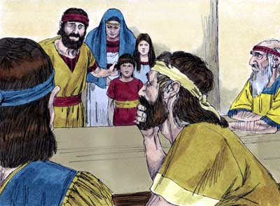
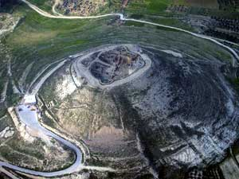
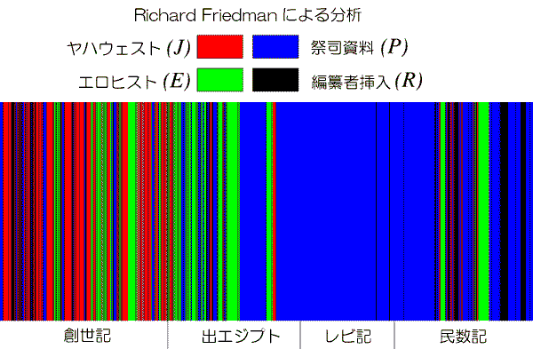

| 旧約聖書の歴史（後編）捕囚期からヘロデ大王まで | |
| 臨夜 海馬 | |
| (2015) | |
後編の序
旧約聖書の歴史の後半、捕囚期以降に入る。預言者エレミヤ（ＢＣ６２６年召命）は、ヨシヤ王改革の熱烈な支援者だった。南ユダ王国がエジプトの属国なった後でも、神罰としてバビロニアが南王 国を滅亡させると預言し、急進的な改革を述べるが、逆に冒涜者として殺害されそうになる。しかし、バビロニアは預言通り南王国を侵略し、ＢＣ５９７年エジプトから奪って属国にした。バビロニア軍はエルサレムを占領し、即位したばかりの第１９代南王・ヨヤキン（即位、ＢＣ５９８－５９７）とその家族および宮廷官吏らをバビロニアの首都バビロン市に連行した（第一次バビロン捕囚）。そして、第１６代南王・ヨシヤの子で第１９代南王・ヨヤキンの叔父であるマッタニヤをゼデキヤと改名させ、傀儡として第２０代南王に即位させた。第一次捕囚の後、バビロニアが官僚ゲダルヤをユダ地方の総督に任命すると、捕囚を免れた人々がエルサレムに集って来た。
その後総督ゲダルヤは東隣国の謀略により暗殺されたため、エルサレムの人々はバビロニアの報復を恐れ、エレミヤが止めるにもかかわらず、エレミヤをも連れてエジプトに逃れ、エレミヤはエジプトで打ち殺されてしまったらしい。ゼデキヤは、国内の反バビロニア派を抑えきれず、エジプトの策謀にも乗せられ、バビロニアに反旗を翻したため、ＢＣ５８７年に南王国は完全に滅亡してしまう。神殿は焼き払われ、財宝は持ち去られ、王族は惨殺され、王は目をえぐられ、戦争捕虜としてバビロニアの首都バビロンに連れて行かれてしまい（第二次バビロン捕囚）、エルサレムは完全に廃墟となってしまった。しかし、ここからがユダヤ教の始まりとなった。民族の生き残りをかけたイスラエルの新たな歴史が始まる。苦難と妨害を乗り越えて、エズラとネヘミヤによる宗教改革を行うが、やがてヘレニズム世界に飲み込まれ、ローマ帝国との戦争で敗れて、流浪の民となる。
なお、聖書の引用は１９５０年代の口語訳聖書を用いている。
2015年10月 臨夜 海馬 著
１．エレミヤの嘆きと捕囚
エレミヤはヨシヤ王改革の熱烈な支援者だった。南ユダ王国がエジプトの属国となった後も、バビロニアが南王国を滅亡させると預言し、急進的な改革を述べるが、逆に冒涜者として殺害されそうになる。しかし、預言通り南王国を侵略し、ＢＣ５９７年エジプトから奪って属国にした。バビロニア軍はエルサレムを占領し、即位したばかりの第１９代南王・ヨヤキンとその家族および宮廷官吏らをバビロニアの首都バビロン市に連行した（第一次バビロン捕囚）。そして第１６代南王・ヨシヤの子で第１９代南王・ヨヤキンの叔父であるマッタニヤをゼデキヤと改名させ、傀儡として第２０代南王に即位させた。第一次捕囚の後、バビロニアが官僚ゲダルヤをユダ地方の総督に任命すると、捕囚を免れた人々がエルサレムに集って来た。その後、総督ゲダルヤは東隣国の謀略により暗殺されたため、エルサレムの人々はバビロニアの報復を恐れ、エレミヤが止めるにもかかわらず、エレミヤをも連れてエジプトに逃れ、エレミヤはエジプトで打ち殺されてしまったらしい。ゼデキヤは、国内の反バビロニア派を抑えきれず、エジプトの策謀にも乗せられ、バビロニアに反旗を翻したため、ＢＣ５８７年に南王国は完全に滅亡してしまう。神殿は焼き払われ、財宝は持ち去られ、王族は惨殺され、王は目をえぐられ、戦争捕虜としてバビロニアの首都バビロンに連れて行かれて（第二次バビロン捕囚）、エルサレムは完全に廃墟となってしまった。
２．捕囚期間中の出来事
（１）預言者エレミヤ
バビロニアへの服従を説得していた預言者エレミヤは、第一次捕囚後に釈放された。彼は捕囚民を手紙で励ましていたが、その捕囚民からエゼキエルが預言者となり、神による諸国の滅亡とイスラエルの復活を黙示的に預言した。両者は「国の滅亡は、イスラエル民の不義の罪に対する神の罰」と説く。更にエレミヤは「イスラエル復活の日、カナン契約やシナイ契約とは異なる新たな契約（新約）が神と結ばれる」、「それは民族の全体としての契約ではなく、個人と神との直接の契約で、心の中の律法に基づくものである」と説いた。エレミヤの預言は弟子バルクによって記録されエレミヤ書となり、エゼキエルの預言もエゼキエル書となった。彼らの主張は、ユダヤ教独特の聖絶史観から、律法に従う聖なる個人の選別という教義へと変化した。またエレミヤは、イスラエル復活の日における神の選ぶ王ダビデについても預言していた。このエレミヤ預言に基き、後の原始キリスト教は、イエスこそがイスラエル復活のために神の選んだダビデであり、新たな契約が結ばれたと解釈した（新約概念）。
（２）申命記的史書の編纂
捕囚後のパレスティナ（ミツパ付近）では、ヨシヤ王の申命記改革の精神（唯一の神・唯一の神殿・唯一の選民）に基づき、モーセから南王国滅亡までの史書が、元宮廷の書記等によって編纂された。それがヨシュア記・士師記・サムエル記・列王記の四書で、申命記もこの精神に基づいているという意味で申命記的史書と呼ばれる（ドイツの旧約学者マルティン・ノート）。これらの史書において、ヤハウェ神のイスラエル民への加護と、ヤハウェ神へのイスラエル民の不義が強調され、国家滅亡はヤハウェの無力によるものではなく、むしろヤハウェの力によるものと解釈され、イスラエル民がヤハウェ神に立ち帰る事で、神は民に約束の地を与えてくれると主張された。その証として、「申命記法」の厳格な遵守を人々に求めた。こうした逆転的発想は、亡国の民へ生きる希望を与える事を目的としたものでもあっただろう。
（３）祭司資料とモーセ五書の編纂
祭司資料では、メソポタミア神話を材料にしながら、創世紀の格調高い天地創造神話を生み出している。また、系図によって様々な伝承物語を一つの歴史として統一し、その後の聖書の基本的構成を築いた。逆に言えば、本来バラバラだった民族の物語を、一つの民族の一つの歴史に統一したと言える。こうして共通の神と共通の祖先を持つ「イスラエル人」という神話が成立する。創世記・出エジプト記・レビ記・民数記・申命記の五書は、モーセによって記されたと伝えられていたので、モーセ五書として聖書の中でも重視されている。これに申命記的史書の四書が続くが、実際の編纂は申命記と申命記的史書の五書が最初にまとめられ、その後にモーセ四書が「申命記的史書」から遡る形で、「ヤハウェ資料（Ｊ）」や「エロヒム資料（Ｅ）」などから「祭司資料（Ｐ）」の枠組に従って作られたようだ。モーセ四書には、「申命記資料（Ｄ）」も使用されたと考えられている。後のサドカイ派がモーセ五書しか重視しなかったのは、こうした理由によると思われる。
（４）民族同一性の確保
イスラエル捕囚民は長く帰郷を許されなかったが、奴隷とされる事もなく、比較的自由に生活できた。ニップル付近のケバル川（ユーフラテス河）のほとりで望郷の念に悲しむ事もあったが、経済的にも文化的にも国際的なバビロニア新王国の繁栄を享受し、各地に離散させられた事を逆利用して広範囲なネットワークを形成し、商業などで成功するようになった。同じ律法に従う同じ文化の民で、互いに信用して取引出来る事が大きな特徴であった。シナゴーグ（会堂）を建て集会の場とし、律法を中心に祈祷や教育等を行った。バビロニアに仮寓していても、イスラエル人が自らの民族・文化・制度を守り通すアイデンティティ（民族同一性）を確保できたのは、シナゴーグ制度に負うところが大である。またヤハウェ神は、バビロニアの神々のような一民族の神ではなく、それを超える全人類の絶対的超越神であるとされ、その普遍的超越神から選民として与えられた祭儀と法律の規定を重視するようになる。レビ記１７～２６章は文脈的には独立した文書と考えられ、シナイ山でヤハウェ神がモーセに与えた律法の物語に挿入され「神聖法典」と呼ばれるが、捕囚期頃に文章としてまとめられたと思われる。
（５）ペルシャの勃興と第ニイザヤグループの登場
ＢＣ５５０年、アケメネス朝ペルシア帝国のキュロス２世は王族の内紛に乗じてメディア王国を滅す。小アジア半島へも侵攻し、ＢＣ５４６年リディア王国を征服する一方、西岸のギリシア諸都市に対しては寛大に懐柔した。この頃、第二イザヤがグループ現れ、良き知らせ、「もはやイスラエル人の不義の罪は償われ、解放の時が訪れる」を告げる。この「良き知らせ」の思想は、イスラエル人とエルサレムの繁栄こそが神の望みであり、約束であるという選民思想となり、その後のユダヤ人の苦難の歴史においてもメシア待望論の根拠となった。
３．第二イザヤ書（第一部）、帰還への期待
イザヤ書は３９章までが第一イザヤ書（南北王国の審判預言の黙示録的部分、バビロン捕囚預言からなる）と呼ばれ、４０－５５章までは第二イザヤ書と分類される。第一イザヤ書の１６０年後の第二イザヤグループの時代、祖国を失いバビロンに捕囚となった人々は、祖国を失ったまま４０年以上過ぎていた。長い捕囚生活で忘れがちになってはいたが、望郷の念は捕囚民の心の底に秘められていた。その頃バビロンを取り巻く国際勢力が大きく変化し、北東ではペルシャが独立台頭し（ＢＣ５５９年）、キュロス２世が近隣の覇者となりつつあった。バビロンは長年敵対してきたエジプトと同盟し新興ペルシャに対抗しようとした。この頃（ＢＣ５６１年）バビロン王メロダクは、その即位の年に捕囚３７年目の老いた先王ヨヤキンの幽閉を解いた。ペルシャが歴史の転換点になるかもしれない、第二イザヤグループはそう思っただろう。ペルシャがバビロンを征服したら捕囚から解放され帰国が叶えられる・・・この熱い期待が徐々に広がった（詩篇８５、１２６：帰還の喜び）。こうした情勢の変化から、イザヤグループの預言者（支配国ペルシャを恐れて名は伏せられたので第二イザヤと呼ぶ）が預言を語り、帰還の指導者を任命し帰国の準備を開始する。
（１）預言者・第二イザヤの召命（イザヤ40:1-11）
第二イザヤは、神から『慰めよ、わたしの民を慰めよ』との声を聞く。『苦役の時は満ち、咎は償われた』、イスラエル民は傲慢な過ちを悟り、補囚の苦しみを通して回心した生き方を示したので、神からの赦しを得たとして帰還の約束がなされる。『呼びかける声がある。主のために、荒れ野に道を備え、わたしたちの神のために、荒れ地に広い道を通せ。谷はすべて身を起こし、山と丘は身を低くせよ』と、荒野に主の道を備え、イスラエルの再興を第二イザヤに示された。荒地（虚飾がはぎとられた）に、山と丘(権力者と驕り高ぶっている者) を低め、主のための広い道を備えよ、との託宣となっている（新約共観福音書では、洗礼者ヨハネに適用された言葉）。帰国の指導者を激励し、『高い山に登れ、良い知らせをシオンに伝える者よ。力を振るって声をあげよ。良い知らせをエルサレムに伝える者よ。声をあげよ、恐れるな、ユダの町々に告げよ』とシオン山があるエルサレムとユダの町々に良き訪れを伝えるよう示される。そして、神の救済宣言『主は羊飼いとして群れを養い、御腕をもって集め、小羊をふところに抱き、その母を導いて行かれる』が示されるが、これは明らかにイスラエル民の解放と独立宣言と解される。
（２）祖国帰還の確信、イスラエルを回復する神（イザヤ40:12-41:26）
『弱った者には力を与え、勢いのない者には強さを増し加えられる。年若い者も弱り、かつ疲れ、壮年の者も疲れはてて倒れる。しかし主を待ち望む者は新たなる力を得、わしのように翼をはって、のぼることができる。走っても疲れることなく、歩いても弱ることはない （イザヤ40:29-31）』、イスラエルを回復するのは、バビロンの偶像神ではなく真の創造主であるヤハウェ神。ヤハウェに勇気づけられエルサレムに帰還できると告げる。強大国バビロンの偶像神崇拝の中、捕囚民はヤハウェ神こそ無力なイスラエルを絶望中から解放する唯一の神と知る、敗戦と亡国を経験しながら、逆に民族精神に目覚め、ヤハウェの一神教とその独自性を悟る。諸国民を解放するペルシャ王キュロスを起こしたのは、ヤハウェ神に他ならない（イザヤ41:2-3）、キュロスは神から使わされた解放者、と第二イザヤは非常に高く評価する、民族枠を超えた預言者の視点が語られる。ヤハウェ神はキュロスを用い、イスラエルを励まし・贖い・回復し、荒地を緑に変え、世界史を創造する（イザヤ41:21-26）、神の力は弱さの中にこそ発揮されると。
（３）「主の僕」の任命（イザヤ41:27-42:17）
『弱った者には力を与え、勢いのない者には強さを増し加えられる。年若い者も弱り、かつ疲れ、壮年の者も疲れはてて倒れる。しかし主を待ち望む者は新たなる力を得、わしのように翼をはって、のぼることができる。走っても疲れることなく、歩いても弱ることはない（イザヤ42:1）』、この良い知らせをエルサレムに伝える「主の僕」・指導者（シェシュバツァル、ダビデ王朝の末裔の一人）を選ぶと神の宣言を伝える。指導者は弱者を労る優しさを持つ正義の信念の人、『彼は叫ぶことなく、声をあげることなく、その声をちまたに聞えさせず、また傷ついた葦を折ることなく、ほのぐらい灯心を消すことなく、真実をもって道をしめす。彼は衰えず、落胆せず、ついに道を地に確立する。海沿いの国々はその教を待ち望む（イザヤ42:2-4）』、第一の僕の歌と言われるもので、後に苦難の僕・イエスの予型とされた（第二の僕の歌は49:1-6、第三は50:4-9、第四は52:13-53:11）。長い捕囚中、沈黙し続けた神が、産みの苦しみを通して変革を成就する事を約束する。
（４）ヤハウェ神による捕囚解放宣言（イザヤ42:18-44:23）
民が略奪され、牢に繋がれ､捕囚の苦しみに会ったのは、ヤハウェ神の怒り。それを悟らず気付かないイスラエルの民を、神は叱咤するが民を贖うと言う。補囚からの解放が主の贖いと創造。神の民・イスラエルが創造される。神への背信の罪を全て忘れ、民を許す神は、出エジプト以上の新しい創造、バビロン脱出を行うと宣言。これは神の無償の愛・創造の業、神からの一方的な動き（赦しと愛）を告げる。新約聖書に通じる神の姿。その主の贖いの業がペルシャ王キュロスの出現だと第二イザヤは言う。
（５）キュロスはメシヤ？(イザヤ44:24-47:15)
『またキュロスについては、『彼はわが牧者、わが目的をことごとくなし遂げる』と言い、エルサレムについては、『ふたたび建てられる』と言い、神殿については、『あなたの基がすえられる』と言う（44:28）』、『わたしはわが受膏者キュロスの右の手をとって、もろもろの国をその前に従わせ、もろもろの王の腰を解き、とびらをその前に開かせて、門を閉じさせない、と言われる主はその受膏者キュロスにこう言われる（45:1）』、第二イザヤは、キュロスを油注がれたメシヤと呼ぶ。民族の苦難を世界的視野で眺め、国際情勢の中で捉え直す体験により、イザヤグループは民族主義を超える（しかし後に、エズラ・ネヘミヤなどにより祭司共同体とし再建された民族主義に傾いてしまう）。キュロスをメシヤとする事に異を唱える者に、神の超越性を述べ(45：9-12)、義によってキュロスを奮い立たせ、神の民を解放させる、これは神の無償の行為だと。諸国民とイスラエルの運命は転換し、「イスラエルの子孫は皆主によって勝ち誇ることができる（45:25）」と預言する（実際はそうならなかったのだが）。
（６）預言の成就、帰還の実現（イザヤ48:1-22）
『あなたがたは皆集まって聞け。彼らのうち、だれがこれらの事を告げたか。主の愛せられる彼は主のみこころをバビロンに行い、その腕はカルデヤびとの上に臨む。語ったのは、ただわたしであって、わたしは彼を召した。わたしは彼をこさせた。彼はその道に栄える。あなたがたはわたしに近寄って、これを聞け。わたしは初めから、ひそかに語らなかった。それが成った時から、わたしはそこにいたのだ」。いま主なる神は、わたしとその霊とをつかわされた（48:14-16）』、キュロスがメシヤ（解放者）であり、神の創造の業としての帰還がようやく実現する。バビロンの無血入城を果たしたペルシャ王キュロスから、待ちに待った帰国の命令が出た。第二イザヤの預言に励まされ、シェシュバツァルを代表とする第一陣は喜び勇んで帰国する（エズラ1:11b、5:13-16）。しかし、聖地エルサレムで彼等を待ち受けていたのは過酷な運命だった。
４．第二イザヤ書（第二部）、帰還と挫折
（１）第二の僕の歌：第二イザヤの新使命（49:1-6）
第二イザヤは帰還の先陣を果たす使命を与えられるが、あれほど賛美したペルシャ王キュロスの名はもう一言も出て来ない。メシヤ期待は幻滅に終わった。キュロスの帰国許可が下り、第二イザヤは捕囚民を祖国に帰らせる具体的な使命と、預言者としての任務が再確認される。神の信頼に長年の帰還運動の労苦が報いられたと勇躍する。BC５３８年、バビロニア首都を征服したキュロス２世は、捕囚イスラエル人の帰国を勧告。これは好意からではなく、戦乱で荒廃してしまったカナン地方を、経済的に裕福になったイスラエル人自身によって復興させようという政策だったようだ。この唐突な帰国勧告に捕囚民の多くは躊躇し、最初は少数の愛国者と野心家と貧窮民だけがこれに応じて帰国した。バビロニア各地に残留した大半のイスラエル人たちは、次第に「ディアスポラ（離散者）」と呼ばれるようになり、イスラエル人はユダの地に住むべき民「ユダヤ人」と呼ばれるようになる。
（２）政治的指導者の使命：王国の再興（49:7-13）
次に政治的指導者・シェシュバツァルの役割として、ユダ王国の再興（明らかに独立運動）が示される。数万人の第一次ユダヤ人帰国集団は、第一次バビロン捕囚で移住した第１９代南王ヨヤキンの第４王子と思われるシェシュバツァルが代表（政治的指導者）となる。キュロス２世は、バビロニア新王国がかつてエルサレム市の神殿や宮殿から奪った財宝を彼らに返し、エルサレムへ帰した。
（３）第三の僕の歌：預言者の忍耐（50:4-11）
預言者第二イザヤの告白。この帰国は、バビロンで成功し定着した人々からは、無謀な企てとして迫害される。安定した生活が脅かされると思ったのか、彼等同胞から激しく反対されるが、第ニイザヤ達は耐え忍ぶしかなかった。
（４）シオンへの帰還と迫害（51:1-23）
BC５３７年第一次帰還集団はエルサレムに到着し、さっそくに神殿跡地に祭壇を設置して祭礼を再開する。しかし、エルサレムは無人の町ではなく、アッシリア新帝国によって北王国に植民された諸国の人々が南王国の滅亡後に移住していて、捕囚民に代わって神殿跡地を尊重し礼拝していた。喜び勇んでエルサレムに到着した帰還民だったが、エルサレムをすでに占拠していた諸国の人々からの侮辱と迫害が起こる。彼らは神殿再建計画を知って参加を希望したが、ユダヤ人帰還民はキュロス２世の権威によってこれを拒絶した。このため、諸国の人々はアケメネス朝ペルシア王国に対し、エルサレム再建の危険性（独立運動に繋がる）を訴え、工事を中断させてしまった。残留ユダヤ人は頼りにならず、そこに更に飢饉が襲い、ユダの帰還民は為す術がなくなった。
（５）ヤハウェの再即位宣言とその後の暗雲（52:1-12）
「無割礼」の諸国の人々のエルサレム侵入占拠に対し、エルサレムを解放すると、主なる神は、うち倒れ絶望した帰還民を激励すると、第ニイザヤは告げる。そして、政治指導者を激励し祝福する。彼はヤハウェ神の再即位をシオンに宣言する、『よきおとずれを伝え、平和を告げ、よきおとずれを伝え、救を告げ、シオンにむかって「あなたの神は王となられた」と言う者の足は山の上にあって、なんと麗しいことだろう（52:7）』。しかし、事態は急激に悪化し、事件が起きて帰還民はエルサレムを退去せざるを得ない状況に陥った。主の祭具を担う指導者（エズラ1:11ｂによればシェシュバツァル）は、エルサレムからの脱出を預言者から勧告されるが、急いで逃げ去ることもないと、非常に混乱した状態が記述されている、『去れよ、去れよ、そこを出て、汚れた物にさわるな。その中を出よ、主の器をになう者よ、おのれを清く保て。あなたがたは急いで出るに及ばない、また、とんで行くにも及ばない。主はあなたがたの前に行き、イスラエルの神はあなたがたのしんがりとなられるからだ（52:11-12）』。
（６）第四の僕の歌：苦難の僕の挽歌（52:13-53:12）
シェシュバツァルなど帰還民の行動は独立運動とみなされ、エルサレムから全員排除されかかった。帰還民はペルシャ官憲に逆らうか、妨害者を殺害するか、何か過激な行動をしたのだろうか？しかし、政治指導者の死により奇跡的に事件は収束した。指導者はペルシャの官憲あるいは敵対諸国民に殺され、消息不明になったようだ。真相は伏せられ、その挽歌が第四の僕「苦難の僕」の歌となる。指導者はダビテ王家の希望であったようで、人の苦しみのわかる謙虚な人であったと歌われている。帰還民の苦痛を一身に負い、『しかし彼はわれわれのとがのために傷つけられ、われわれの不義のために砕かれたのだ。彼はみずから懲らしめをうけて、われわれに平安を与え、その打たれた傷によって、われわれはいやされたのだ（53:5）』と。
罪も無い主の僕・ダビデの若枝（指導者）は、何故不条理な死を遂げなければならなかったのか？神は何故彼を死に至らしめたのか？第二イザヤは、指導者が帰還民の過ちを担う犠牲となる事で、残された人々が正しい者とされ、平和を得るために神がなされた贖いの犠牲だと言う（ペルシャに遠慮した黙示的表現）。イエス死後、十字架死の意味を理解する際に、この苦難の僕がイエスの預言であると解釈された。
（７）エルサレムとその周辺への定着（54:1-17）
帰還民第一陣が受けた危機は、指導者の犠牲により平和が訪れる。神の新しい祝福がなされ、捕囚はもう二度とないと贖いの神は約束し、究極の平和の契約をする、『このことはわたしにはノアの時のようだ。わたしはノアの洪水を、再び地にあふれさせないと誓ったが、そのように、わたしは再びあなたを怒らない、再びあなたを責めないと誓った。山は移り、丘は動いても、わがいつくしみはあなたから移ることなく、平安を与えるわが契約は動くことがない」とあなたをあわれまれる主は言われる （54:9-10） 』。
（８）メシヤ契約（55章）
ヤハウェはダビデ契約を超越した永遠のメシヤ契約を結ぶ、と第ニイザヤは言う。平和のメシア、苦難の僕がその証人であり、神の思いは申命記史家と異なり、無権力的平和の理想郷として、政治的メシヤを願望する申命記史家の思想を超える。一方、ダビデ王家の復興を願う申命記史家グループは、約２０年後に再び政治的独立と神殿再建を画策する（ハガイ2:20-23）。この時も政治的メシヤ擁立は失敗するが、神殿再建は成功し、やがてイザヤ書の理念とは異なった祭祀共同体としての第二神殿時代に入る。
マックス・ヴェバーは、「苦難というものをこのように、この世界の救済に役立つべき手段として、熱烈に栄光化した」のが第二イザヤだと述べている。旧約では栄光の政治的メシヤが代表的だが、イザヤ書では、第一イザヤで平和のメシヤ、第二イザヤで苦難のメシヤ、第三イザヤでは解放のメシヤ像として描かれた。
１．神殿建設の再開と王朝再興の再挫折
第二イザヤのグループとシェシュバツァル等の第一次帰還集団は、神殿建設に失敗してシェシュバツァルを失う。度重なる旱魃と飢饉で苦難を味わうが(ハガイ1:10)、徐々に生活は安定し始め、何とかエルサレムに定着する。第一次陣帰国から１８年が経過した頃、ハガイとゼカリヤが預言者として召命され、第二次帰還民も受け入れ、エルサレム神殿の建設を促される。当時の情勢は、ペルシア帝国のオリエント統一、内乱と最盛期であった。紀元前５３０年、ペルシャ王・キュロス２世は最後の東方遠征を行なうにあたって息子カンビュセスに王位を授けた。紀元前５３０年８月に父キュロス２世が死亡し、カンビュセス２世は単独の王となる。紀元前５２５年、カンビュセス率いるペルシア軍が、エジプトのプサンメティコス３世率いる軍隊を、エジプト国境付近のナイル・デルタのペルシウムで破る。さらにペルシア軍はメンフィスを征服しプサンメティコス３世を捕らえた。これによりエジプト第２６王朝は滅び、カンビュセスはエジプト第２７王朝の開祖として即位し、以後エジプトはペルシア帝国の一州となり、アケメネス朝ペルシア帝国のオリエント統一が達成された。カンビュセスは、エジプトの風俗や宗教の自由を認め寛容な政策を行った。カンビュセスはエジプト征服だけでは飽きたらず、三つの遠征を企てる。
第一のカルタゴ遠征は、ペルシア海軍の主力を担うフェニキア人の拒絶で実現しなかった。第二のエチオピア遠征は、携帯した食糧が尽き、兵士の間で人肉を相食む惨事を招き、これも失敗。最後のシバ・オアシス・アンモン人の地域への遠征は、５万人の精鋭部隊がリビア砂漠を横断中に猛烈な砂嵐に巻き込まれ、忽然と姿を消した。更に追い討ちをかけるように故国で神官ガウマタの内乱の情報が入り、カンビュセスは急いで帰国の途に就くが、精神に異常をきたし、前５２２年シリアで自死あるいは暗殺された。ペルシア帝国はバクトリア州の行政官ヒュスタスペスの長子であるダイレオス（キュロス王の遠縁）は、７年かけて各地の反乱を鎮め、ペルシャ帝国の第三代王となる。この時の戦勝を記念してベヒスタン岩上に巨大な碑文を彫らせている。彼はキュロス王の政策を踏襲し、各地の文化や宗教に寛容な政策を取り、ペルシャは最盛期を迎えて安定しＢＣ３３０年まで続いた。ＢＣ５２２年、ダレイオス１世の時代に帰還を許されてエルサレムに帰ってきたのがゼルバベル、ヨシュアたち。帰還したメンバーは第一次帰還の時よりも多く、またツァドク系祭司ヨシュアなど、捕囚前の有力者たちの子孫が多数含まれていた。
２．ハガイ書
（１）預言者ハガイの召命：神殿再建を行え(ハガイ1-2:19章)
ハガイが預言者として召命され、ペルシャ当局と周辺住民の反対を恐れ、神殿建設に慎重になっていた帰還民に、期は熟したと神殿再建の神の託宣が告げられる。ペルシャのダイオレス１世即位第二年（ＢＣ５２２年）６月１日、預言者ハガイに主の言葉が臨み、ユダ総督ゼルバベルと大祭司ヨシュアに神殿の建設を命じる(平行記事、エズラ5:2)。『主の家はこのように荒れはてているのに、あなたがたは、みずから板で張った家に住んでいる時であろうか（1:4）』と厳しい声が響く。そして、ヨヤキン王の孫でダビデの血筋の総督ゼルバベル（シェシュバツァルの甥）とツァドク家系の大祭司ヨシュアを指導者に任命し、彼等にペルシャの官憲や住民の妨害を恐れず、勇気を持って神殿建設を開始するよう激励する。新しい神殿の栄光は、ソロモン神殿の栄光に勝ると告げる。
（２）主の与える祝福とゼルバベルの王位指名（2:20-23）
•神殿建設の再開と官憲の干渉（エズラ5:1-5）：『預言者ハガイおよびイドの子ゼカリヤのふたりの預言者は、ユダとエルサレムにいるユダヤ人に向かって、彼らの上にいますイスラエルの神の名によって預言した。そこでシャルテルの子ゼルバベルおよびヨザダクの子エシュアは立ちあがって、エルサレムにある神の宮を建て始めた。神の預言者たちも、彼らと共にいて彼らを助けた。その時、川向こうの州の知事タテナイおよびセタル・ボズナイとその同僚は彼らの所に来てこう言った、「だれがあなたがたにこの宮を建て、この城壁を築きあげることを命じたのか」。また「この建物を建てている人々の名はなんというのか」と尋ねた。しかしユダヤ人の長老たちの上には、神の目が注がれていたので、彼らはこれをやめさせることができず、その事をダリヨスに奏して、その返答の来るのを待った』
神殿建設は、当初ペルシャ官憲の干渉を受けたが、キュロス２世の神殿建設許可の文書が見つかり、建設の許可が降りた。工事が開始され、９月２４日に神殿の基礎が完成し、その記念すべき日に二つの神託が下された。
（３）回心すれば祝福
聖別された物を持っている者が触れても、その物は聖別されないが、汚れた者が触れれば、その物は汚れるように、社会正義を行わず汚れていれば、神殿建設は聖別されず汚れる。しかし、これまでの汚れた業を心にとめて回心するならば、今日この日から神は祝福を与え、豊な生活を保証する。
（４）ダビデ王家の再興
新しい総督ゼルバベルを王として指名する。『ユダの総督ゼルバベルに告げて言え、わたしは天と地を震う。わたしは国々の王位を倒し、異邦の国々の力を滅ぼし、また戦車、およびこれに乗る者を倒す。馬およびこれに乗る者は、たがいにその仲間のつるぎによって倒れる。万軍の主は言われる、シャルテルの子、わがしもべゼルバベルよ、主は言われる、その日、わたしはあなたを立て、あなたを印章のようにする。わたしはあなたを選んだからであると、万軍の主は言われる（ハガイ2:21-23）』。預言者エレミヤから永久失格の烙印を押された王の印章（王権）１９代王ヨヤキン（ヨヤキムの子コンヤ）の子・ゼルバベルを王とする神託となっている（平行記事、ゼカリヤ4章第五の幻）｡
•エレミヤ22:24-30：「主は言われる、わたしは生きている。ユダの王エホヤキムの子コニヤが、わたしの右手の指輪であっても、わたしはあなたを抜き取る。あなたの命を求める者の手、あなたがその顔を恐れる者の手、すなわちバビロンの王ネブカデレザルの手と、カルデヤびとの手にあなたを渡す。わたしは、あなたと、あなたを産んだ母を、あなたがたの生れた国でない他の国に追いやる。あなたがたはそこで死ぬ。彼らが帰りたいとせつに願う国に、彼らは再び帰ることができない」。この人コニヤは卑しむべき、こわれたつぼであろうか、だれも心に留めない器であろうか。なぜ彼とその子孫は追いやられて、知らない地に投げやられるのか。ああ、地よ、地よ、地よ、主の言葉を聞けよ。主はこう言われる、「この人を、子なき人として、またその一生のうち、栄えることのない人として記録せよ。その子孫のうち、ひとりも栄えて、ダビデの位にすわり、ユダを治めるものが再び起らないからである」。
しかし、ハガイのダビデ王家の再興宣言の預言は、ここで突如として終わる。この後の出来事はゼカリヤ書に引き継がれている。ペルシャ帝国の内乱を見ていた帰還民は、ダビデ王朝復興を夢見たのだろうが、第三代ダイオレス１世は帝国内の反乱や独立運動鎮圧に躍起になっていた頃にあたり、総督ゼルバベルはペルシャ当局から何らかの処置があったのだろうか？
３．第一ゼカリヤ書（１章～８章）
神殿建設の年の８月、別の預言者ゼカリヤも召命を受けて預言を開始する。１章～８章までがダレイオス１世の時代の記述で、９章以下はアレキサンダー大王時代以降の内容となっていると考えられ、第二ゼカリヤ書と呼ばれる。文章が黙示的表現になっているのは、ペルシャ当局を刺激しないためだったのだろうか。ゼカリヤ書として編纂されたのは、ペルシャに従順となった相当後の時代と考えられている。ゼカリアは、レビ族の祭司イド（ネヘミア記１２章４）の子ベレクヤの子。神から幻を見せられ、第一次・第二次帰還民などに神殿の再建を促し、民を励ます預言を述べる。
（１）８つの幻
神殿の基礎工事が完了したのが９月２４日。その２ケ月後の１１月２４日ゼカリヤは８つの幻を見る。
第一の幻：シオン再建の約束（1:7-17）
赤毛の馬、その後ろに栗毛の馬と白い馬、それぞれの馬に乗って巡回する一団（セシュバツァル、ゼルバベル、ヨシュアの３人？）の幻を見る。御使いは「主はシオンを再び慰め、エルサレムを再び選ばれる」とシオン再建（王国の回復）の託宣を告げる。
第二の幻：ユダの敵の打倒(2:1)
ユダ王国を滅亡に導いた４つの角と（アッシリヤ、バビロニヤ、エジプト、ペルシャ）、その敵を打倒する４人の鉄工（不明、セシュバツァル、ハガイ、ゼカリヤ、ヨシュア、ゼルバベル等か？）が示される。
第三の幻：測り縄を手にする若者(2:5)
１人の若者に、エルサレムの再建と繁栄、バビロンからの脱出などシオンの回復が、神の御業として現れるのを告げられる。一人の御使いはエルサレムがさらに拡大することや、主なる神に保護されることを予告する。この測り縄を手にした若者は何者なのか？
第四の幻：大祭司ヨシュアと主の僕・若枝の登場(3:1-10)
大祭司ヨシュアは礼服を着せられ（過去の汚名返上、苦難の僕を見殺しにした昔の罪などが赦され)、シオンの回復として、今は若枝である主の僕を起用し、神は七つの目がある石に碑文を刻み、地の罪を取り除くと告げる。ヨシュアは若枝である僕と互いに協力しあうよう指示される（3・10）。若者は若枝と呼ばれる。
•「翼と瞳」の黙示的言葉
イザヤ書8:8（広げた翼は国一杯に広がり民を守る）インマヌエルよ、その広げた翼はあまねく、あなたの国に満ちわたる
•詩篇（翼は盾）
17:8 ひとみのようにわたしを守り、みつばさの陰にわたしを隠し
91:4 主はその羽をもって、あなたをおおわれる。あなたはその翼の下に避け所を得るであろう
•ゼカリヤ書3:9：見よ、ヨシュアの前にわたしが置いた石の上に、すなわち七つの目をもっているこの一つの石の上に、わたしはみずから文字を彫刻する。そしてわたしはこの地の罪を、一日の内に取り除く
•ヨハネの黙示録4:6：御座の前は、水晶に似たガラスの海のようであった。御座のそば近くそのまわりには、四つの生き物がいたが、その前にも後にも、一面に目がついていた
•ヨハネの黙示録5:6：それ（小羊）に七つの角と七つの目とがあった。これらの目は、全世界につかわされた、神の七つの霊である
ゼカリヤ書の「七つの目」、ヨハネの黙示録５章の「七つの目」、この「七」には「神」や「聖」や「完全」の意味がある。「瞳」「目」「まなこ」は光と知識の表象で、この場合は「主の目・霊」を指すのだろう。
第五の幻：ゼルバベルと二人のメシヤ（4:1-14）
ここで若枝はゼルバベルだと明らかにされる。シェシュバツァルと異なり、実名で登場する。ゼルバベルが据えた神殿の礎石には、神の七つの目、地上をくまなく見回る主の霊があると告げる。
「ゼルバベルの手はこの宮の礎をすえた。彼の手はこれを完成する。その時あなたがたは万軍の主が、わたしをあなたがたにつかわされたことを知る。だれでも小さい事の日をいやしめた者は、ゼルバベルの手に、下げ振りのあるのを見て、喜ぶ。これらの七つのものは、あまねく全地を行き来する主の目である（ゼカリヤ4:9-10）」
また、七つの燭台の火皿に油を補給する二本のオリーブの木、の幻視の意味が明かされる。この二本のオリーブの木は、油注がれたメシヤ、「これは全地の主の御前に立つ、二人の油注がれた人たちである（4:14）」と。この二人のメシヤとは誰なのか？。大祭司ヨシュアと希望の若枝・ゼルバベルの二人が考えらる。
第六の幻：大きな巻物が飛ぶ(5:1)
幅4.5メートル、長さ9メートルの、呪いの大きな巻物（妨害者）が飛ぶ・・・と言う幻視。捕囚時に侵入して来たサマリヤ人（ヤハウェの名で偽りの捧げ物と誓いをする者、後のサマリア教団）やエドム人（ユダ王国が滅亡した時に侵入した）の排除が語られているようだ。
第七の幻：邪悪な女の排除(5:5)
エファの升に閉じ込めた邪悪な女を、シンアルの地バビロンの神殿に運ぶ・・・と言う幻視。これは異教の神々（邪悪な女、偶像）の排除を意味していると考えられる。
第八の幻(6:1)
青銅の山（ユダの山？）から４両の戦車が出て来て四方に散る・・・と言う幻視。離散者への解放の伝達を意味するのだろう。赤毛の馬の戦車他に黒馬の戦車が北の国バビロンに行き、「我が霊を北の国に留まらせた」とあり、北の地バビロンの捕囚民にも神の霊があるとの希望を与えているようだ。白馬の戦車は西に行き、まだらの馬の戦車は南に行く・・・エジプトや各地に散った離散民にも解放の喜びを告げる。この八つの幻を見た預言者ゼカリヤは、次に王の戴冠式を行うよう託宣を受ける。
４．ダビデ王朝復興の夢と挫折
帰還者の裕福な家庭から資金を受けて冠を作り、ゼカリヤは戴冠式を行う。『彼らから金銀を受け取って、一つの冠を造り、それをヨザダクの子である大祭司ヨシュアの頭にかぶらせて、彼に言いなさい、『万軍の主は、こう仰せられる、見よ、その名を枝という人がある。彼は自分の場所で成長して、主の宮を建てる。すなわち彼は主の宮を建て、王としての光栄を帯び、その位に座して治める。その位のかたわらに、ひとりの祭司がいて、このふたりの間に平和の一致がある（ゼカリヤ6:11-13）』、第五の幻で油注がれたのは大祭司ヨシュアと総督ゼルバベルだが、ダビデ王の血脈はゼルバベルであるから、彼の王戴冠式のはずだが、ヨシュアに変更させられている。文脈上は不自然だが、ゼルバベルの不在を考慮し、ヨシュアをゼルバベルに替えると意味が通じる。「若枝」はゼルバベルで神殿を建て直し王国を治め、傍らの老大祭司ヨシュアの助力で、平和の計画が生ずるという戴冠式文となっている。
再度、ダビテ王家の再興運動は挫折した。印章を受け、油注がれ、王となった青年ゼルバベルは、ペルシャからの独立を図る者と睨まれ、ペルシャ官憲によって排除されたらしい（暗殺説もある。しかしそれなら何らかの記録に残るはずで、彼がバビロンに帰国したのち、バビロンでのユダヤ人の長となったとの伝承もあり、総督としての任務が完了したのち、帰国したとする説が妥当か？歴代志３章には子孫名が１０代まで記録されているので、ゼルバベルの子孫に対する人々の期待が長い間続いていたようだ）。ペルシャ帝国は、支配者の統治に従順である限り、支配下民族の宗教を尊重し援助したが、反乱や独立などの政治活動は決して許さなかった。結局大祭司ヨシュアが祭司的メシヤとなり、帰還民は祭祀共同体（宗教民族）としての道を歩む。王に代わるメシヤ的特権を得た大祭司は、その後親ペルシャとなって祭祀共同体を支配するようになる。反ペルシャ的運動は抑圧され、反体制的な預言は黙示的にならざるを得なくなったようだ。
ヨシュアはヨザダクの子とされている。ヨザダクは歴代志上６章ではツァドクの子孫、捕囚の時の祭司長セラヤの子。セラヤはネブカドネザルにより処刑されたが、その子ヨザダクはバビロンに連れて行かれ、バビロンでヨシュアが生まれたらしい。大祭司の家系の帰還により、それまでのレビ人主導の祭儀は終わった。申命記に「レビ人なる祭司」とあるが、エルサレムの伝統であるツァドク系祭司の登場をレビ人も阻止できなかったのだろう。ヨシュアは総督ゼルバベルを補佐したが、ゼルバベルが不在となった後は、実質的にユダヤ国内の指導者となった。ヨシュアへの油注ぎが王の即位式と解釈するなら、それはペルシャ帝国への反逆となってしまう。ダニエル書9:26で大祭司オニア３世がメシアと呼ばれているので（＊１）、大祭司も油を注がれるようになったのかもしれない。ゼルバベルの後任総督が赴任し、後にネヘミヤも総督として赴任しているので、常に総督が置かれていたと思われる。ユダヤは対外的にはペルシャ任命の総督が支配し、国内的には大祭司が統治する形態となったと思われる。
•（注１）ダニエル書9:23-27（新共同訳）この御言葉を悟り、この幻を理解せよ。お前の民と聖なる都に対して、七十週が定められている。それが過ぎると逆らいは終わり、罪は封じられ、不義は償われる。とこしえの正義が到来し、幻と預言は封じられ、最も聖なる者に油が注がれる。これを知り、目覚めよ。エルサレム復興と再建についての、御言葉が出されてから、油注がれた君の到来まで、七週あり、また、六十二週あって、危機のうちに広場と堀は再建される。その六十二週のあと油注がれた者は、不当に断たれ、都と聖所は、次に来る指導者の民によって荒らされる。その終わりには洪水があり、終わりまで戦いが続き、荒廃は避けられない。彼は一週の間、多くの者と同盟を固め、半週でいけにえと献げ物を廃止する。憎むべきものの翼の上に荒廃をもたらすものが座す。そしてついに、定められた破滅が荒廃の上に注がれる。
•数字の暗号：１週は７年と推定される。ダニエル書は後代の紀元前１６７年頃に書かれたというのが定説で、４００年近くも昔のバビロン捕囚時代に作者の目を戻し、そこから未来を見る形式で書いている（事後預言）。この黙示的「定められた７０週」は、７週期＋６２週期＋１週期に分かれている。
要約すると、バビロン捕囚解放から神殿再建まで４９年、ペルシャ・ヘレニズム時代の４３４年の期間が経過すると、油注がれた宗教的メシヤ・大祭司オニアは不条理にも殺されユダヤは混乱期に入る。７年で同盟を固めたシリヤ王は３年半エルサレム神殿祭儀を廃し、荒廃をもたらすゼウス像を建てる（ＢＣ１６７）、しかし３年半後頃のＢＣ１６４年には死ぬ、と預言の意味。
５．神殿の完成と祭祀共同体の開始
ダイオレス王の第４年（ＢＣ５１７年）、官憲の干渉で神殿の建設は一次中断し、倦怠ムードが見られるようになった。神殿が完成するまでは、犠牲を捧げる神殿祭儀の代わりに、滅亡を反省するための断食を行った。しかし形式的になってきた断食を批判し、ゼカリヤに社会正義を強調する神託が下り（7:9-10）、シオン再建の熱意を失った帰還民に活が入れられた（8章）。帰還民はこの神託に鼓舞され、この預言の２年後（ＢＣ５１５年）、第二神殿はついに完成した。ＢＣ５８７年に南王国が滅亡してから実に７２年が経過していた。第二神殿時代の始まりである。この時の奉献式の様子がエズラ記に記されている（＊２）。神殿の構造は出エジプト記２５章にある通り。ただ、契約の箱は造られなかった。後にローマのポンペイウスが強引に至聖所に入った時、中には何もなかったと証言している。契約の箱がないということは、ケルビム像も贖罪の場（贖罪所）も無かった事になるが、祭儀用の机や燭台や祭壇などは規定通り至聖所の横に置かれていただろう。
•（注２）『ユそしてユダヤ人の長老たちは、預言者ハガイおよびイドの子ゼカリヤの預言によって建て、これをなし遂げた。彼らはイスラエルの神の命令により、またクロス、ダリヨスおよびペルシャ王アルタシャスタの命によって、これを建て終った。この宮はダリヨス王の治世の六年アダルの月の三日に完成した。そこでイスラエルの人々、祭司たち、レビびとおよびその他の捕囚から帰った人々は、喜んで神のこの宮の奉献式を行った（エズラ6:14-16）』。
１．ペルシャ王朝
バビロン捕囚以降のユダヤ地方の時代は、ローマ帝国との戦役で神殿が崩壊するまでを第二神殿時代と称される。この時代は更に便宜上、ペルシャ支配時代、ヘレニズム支配、ハスモン朝時代、ヘロデ王時代、ローマ支配（属州）時代に区分される。第二神殿完成までは前章に記した。その時代の簡単な年表を下に掲載する。
２．ペルシャ王・キュロス２世
ペルシャ帝国の創始者にしてバビロンの征服者であり、祖父キュロス１世と区別するために「キュロス大王」と呼ばれる。
キュロスの円筒碑文として知られる楔形文字文書（上掲の写真）には、キュロスがバビロニア帝国を征服した後、次のように述べたと伝えている、「わたしはキュロス、世界の王、偉大な王、正統な王、バビロンの王、シュメールおよびアッカドの王、四つの縁の王、アンシャンの王なる偉大な王カンビュセスの子、キュロスの孫...テイスペスの子孫...常に王権を（行使した）氏族の出で...（古代近東テキスト、Ｊ･プリッチャード編、1974年）」。キュロスはアンシャン王統の出身らしい（アンシャンの場所はエラムの東・イランの高原地帯）。歴代王の家系は、テイスペスの父アケメネスにちなんで、一般的にアケメネス王朝と呼ばれる。キュロスは父カンビュセス１世の後継者として王位に就いたが、当時国の宗主権はメディア王（アステュアゲス）にあった。その後、メディア人とペルシャ人は有能なキュロスの指揮下で結束して戦うようになり、リディアのクロイソス王を撃破、サルデスを攻略、イオニアの諸都市を制圧、小アジア全域もペルシャ帝国の領土に加えた。こうして数年間の瞬く間に、バビロンとその王ナボニドスに対抗する一大勢力となった。
第二イザヤ書では、キュロスはバビロン滅亡とユダヤ人の捕囚解放をもたらす、神から任命されたメシアとされている（イザヤ書44:26、45:7）。ゾロアスター教（ペルシャの著名な宗教）だったかもしれないキュロス王には、そのつもりはなかったかもしれないが、イザヤ書では神が｢キュロスの右の手をとって、もろもろの国をその前に従わせ、もろもろの王の腰を解き、とびらをその前に開かせて、門を閉じさせない｣と謳われている。ユダヤ人歴史家・ヨセフスは、ＢＣ３世紀のバビロニア人祭司・ベロッソスが記したキュロスの征服に関する内容について、「ナボニドスの治世の第１７年、キュロスは大軍を率いてペルシャを出発、王国の残りの部分を征服した後、バビロニアに向かって進撃した。彼がやって来たことを知ったナボニドスは、軍勢を率いてこれと戦ったが、敗れた。そこで、彼は少数の部下と共に逃げ、ボルシッパという町（バビロンの姉妹都市）に閉じこもった。キュロスはバビロンを攻め取り、同市の外側の城壁を取り壊すように命じた。...その後、彼はナボニドスを包囲するため、ボルシッパに進撃したが、彼は攻囲されるのを待たずに降伏したので、キュロスは彼を人道的に扱い、バビロニアから去らせたものの、カルマニアを居住地としてこれに与えた。ナボニドスはそこで余生を送り、そこで死んだ」と述べている。キュロスは、セム族以外のアーリア系民族がはじめて世界的強国を打ちたてた王朝の創始者と言える。
写真の円筒碑文でも、バビロンがキュロスの前に突然陥落した事を記している。更に碑文では、キュロスが勝利の誉れをバビロンの主神マルドゥクに帰していることを示し、「彼（マルドゥク）はすべての国々に目を通し、（十分に）調べて、（毎年の行列で）...喜んで彼を先導する正しい支配者を捜した。（それから）彼はアンシャンの王キュロスの名を発音し、彼が全世界の支配者であると宣言した。...偉大な主、その民もしくは崇拝者たちの保護者なるマルドゥクは、彼（キュロス）の良い行ないとその廉直な思いを喜びを抱いて見守り、（またそれゆえに）自分の都市バビロン（カディンギルラ）に向かって進撃するよう彼に命じた。彼は真の友のように彼のわきに付いて行き、バビロン（ディンティルキ）に通じる道を進ませた。広がったその部隊は―人数は川の水のように確定できなかったが―武器を包んだまま携えて進んだ。彼は戦闘を一切行なわずに、自分の町バビロン（シュアンナ）に彼を入城させ、バビロン（カディンギルラキ）にいかなる災厄も被らせないようにした（古代近東テキスト、Ｊ･プリッチャード編、1974年）」とある。
キュロス自身は、バビロニアの宗教に配慮した文章をバビロニア神官に作らせたのだろうが、実際にキュロスは、支配地の諸民族の宗教を保護する政策を実行した。つまり、統治しやすい形態を採用したと思われる。以前の支配者とは異なり、ネブカドネザル２世がエルサレム神殿からバビロンに運び去った器物を返還し、レバノン杉材の輸入をユダヤ人に許可する勅令を出し、神殿建設費用を補うための支出も認めている（エズラ記1:7-11）。キュロスは領土内の被征服民族に対しても幾分寛容な政策を採った模様で、碑文にも「わたしはチグリス川の向こう側にある、（以前有名だった幾つかの）神聖な都市に、それらの都市の多年廃墟となっていた聖所に、（かつて）そこに安置されていた像を返還し、それらの像のために恒久的な聖所を設けた。わたしは（また）それらの地の（以前の）住民を全部集めて、その居住地を（彼らに）返した」と記されている。このキュロス２世はＢＣ530年に戦死し、子のカンビュセス２世がペルシャの王位を継承した。
３．ペルシャ支配時代のユダヤ
ペルシャ時代のユダは｢イェフード｣と呼ばれた。ヘレニズム時代にユダヤと呼ばれる様になり、そこに住む住民の中でユダヤ教を信奉する人々をユダヤ人と呼ぶようになった。この時代の文献・考古学的資料は乏しく、当時のパレスティナの現状は十分には分かっていない。ゆえに、年表も簡素なものになってしまった（個人的に作成したのが下の年表で、上の年表の続編）。
上の年表を見て分かるのは、この時代重要な役割を果たしたのが、エズラ・ネヘミヤであること。彼らはユダヤ民族のアイデンティティを確立して民族の復興を果たそうとした。帰還したユダヤ民と、その地に居住していた民（南ユダ民族の末裔と、バビロニアによって強制移住された異民族、および混血）との軋轢があった。また、ダビデ王権による国家再興に対するペルシャ当局の厳しい監視も存在しただろう（支配者は地域の反乱を最も恐れる）。こうした中で、エズラ・ネヘミヤは祭司国家としての道を選択するしかなく、律法を根底に置いたユダヤ教による民族浄化策を採る。また、神殿は出来たが城壁や町並みはまだまだ整備されておらず、この時代に長い期間を費やして整備されていった。
旧約聖書に列王記と歴代誌と２つの歴史書があるのは、エズラ・ネヘミヤ時代の政策に沿った歴史書が必要となったためだと推理できそうだ。モーセ五書の基本形もこの時代に出来ていたと思われる（一気に出来たわけではなく、長い期間をかけて完成したものだ）。こうした極端な民族主義に批判的だった知識人の中には、ヨブ記のような知恵文学を叙述した者も現れた。エズラ・ネヘミヤ時代については頁が長くなるので、後のページに掲載するつもりだが、その前に｢ネヘミヤ前夜｣を紹介し、何故エズラやネヘミヤが改革が必要だったかの背景を探ってみる。
４．ネヘミヤ改革の前夜
BC515年に第二神殿は完成した。しかし、神殿再建時の熱狂的な興奮は次第に醒めていった。預言によれば、神殿再建後にはイスラエルの栄光が到来し、豊かな祝福の時代が来るとされていたが、現実にはペルシャ支配に甘んじなければならず、紀元前五世紀前半になると民は落胆に打ちひしがれた。また、神殿祭儀を行う祭司たちの不浄な犠牲の捧物や、祭司の腐敗が問題となった。こうした問題を背景に、オバデヤ書・マラキ書・ヨエル書が書かれたのかもしれない。
（１）オバデヤ書・・・兄弟国・エドムへの近親憎悪
旧約聖書にはエドムやモアブなど近隣周辺国への言及が多いが、その中で最も語られているのが死海南方の国のエドム。エドムの祖先は、族長イサクの双子の兄で長子だったエサウ、弟はイスラエルの祖先となったヤコブであり、いわば兄弟国の関係だが、BC587年ユダ王国滅亡の時、南ユダ王国を裏切ってバビロンに内通し（オバデヤ1:11-14）、南ユダの南方に侵入した事で（エゼキエル36:5）、両国の関係は決定的に悪化し、イスラエルの憎悪の対象となり、繰り返し｢呪われよ｣と主の裁きと報復が宣告される（イザヤ34、エレミヤ49:7-22）。オバデヤ書は、このエドム（注１）の傲慢さを強く告発し、その審きと報復を述べる。
•（注１）この後、エドムは徐々に没落し、東側のナバテア王国の侵略により、ネゲブ地方に退避せざるをえなくなり、そこでイドマヤ王国となった。ヘロデ大王はこの国の出身である。オバデヤ書・マラキ書・ヨエル書のかなりに後に書かれたヨブ記では、このエドムに住む義人ヨブを主人公にして、何故不条理があるのかと問題提起をしている。ヨブ記は、捕囚以降の一連のユダヤ教の民族至上主義を批判的に見ているのだろう。
（２）マラキ書・・・祭司への警告と改革の預言
神の救いの遅延に失望する民に対し、マラキに託宣が下った内容。
（Ａ）主はエドムよりイスラエルを愛する（1:1-5）
神はイスラエル民を見捨てられたと言う不安と疑問に、マラキは仇敵エドムに審きと報復を行うにと告げる。エサウ（エドム王国）はヤコブ（イスラエル）の双子の兄で長子だったが、弟ヤコブが父を騙して長子の特権を奪った。しかし、神が「わたしはヤコブを愛しエサウを憎んだ」と語ったとマラキは言う（注２）。両国は兄弟国ではあるが、長年の紛争の種であったエドムを貶め、イスラエルに対する愛を現し、国際関係の中で自信喪失に陥っているヤコブの民（イスラエル）を力づけている。
•（注２：ヤコブを愛しエサウを憎んだ）創世記にこの記述は全く存在しない。マラキ書のこの箇所と、パウロのローマ書9:13にあるマラキ書からの引用しかない。創世記ではエサウの最後は述べられていないが、旧約聖書偽典・ヨベル書では、｢エサウは一度は弟ヤコブと和解するものの、息子たちに長子の権をヤコブに奪われた事を批判され、ヤコブとその一族への復讐を催促される。当初エサウ本人はそのつもりは無かったが、息子に懇願されるうちに弟への憎悪が蘇り、一族を率いてヤコブとのその家族に襲い掛かるが、逆にヤコブに矢で射抜かれて死亡する。ヤコブは兄を埋葬し、エサウの一族はヤコブの一族の奴隷となる｣という文書もあり、エドム憎しからマラキがヤコブ（イスラエル）擁護の言葉として創作したのだろうか？
（Ｂ）神殿祭司のレビ契約違反への警告（1:6-2:9）
新しい神殿で犠牲祭儀は再開されたが、ツァドク系神殿祭司は典礼を軽視し、汚れたパン、目・足が傷ついた病気の動物、盗んできた不浄な動物の犠牲を捧げているので、祭司は「投げ捨てられる」と痛烈に批判する。祭司は伝統から逸脱し、｢レビ人とわたしの契約（注３）｣を破棄しているが、主の使者ともいうべき・また祭儀要員（申命記33:10）として欠かせないレビ人との関係を正すよう求める。祭司とレビ人は兄弟・夫婦関係のようものなのに、祭司たちはレビ人を軽視し、レビ契約に違反していると告発する。また、異教徒の娘を娶った腐敗祭司家もあり、彼らの滅亡が祈られる。さらに、祭壇では泣き叫ぶ呪術的礼拝がなされているが、これもレビ契約による正しい捧げ物がされていないせいだと言う。その原因は、若いときの妻（レビとの契約）を裏切ったからで（2:14-16）、「自分の霊に気をつけるがよい」と霊の恣意性が警告される。典礼儀式に精通し、律法を教え、伝統を守るレビ人は、民族宗教の秩序維持に必須であったが、はなはだしく人員不足であった（エズラ8:15-20）。
•（注３：レビとのわたしの契約）「レビとのわたしの契約」についての記述は旧約聖書中にはない。類似した言及は（民数記3:12-13，ネヘミア13:29-30）に見られるが。「平和の契約」についてもアロンの孫ピネハスと結ばれており、レビ族全体と結ばれていない（民25:11-13）。旧約聖書では、レビ人が選ばれたヤハウェ祭司であることは再三述べられており、ヤハウェの律法を教え、伝統を守るのがレビ人本来の任務とされている（出エジプト32:28-29、申命記33:8-11等）。しかし、エゼキエル書になると、レビは偶像に迷ったとされ（44:10）、ツァドク系祭司が聖なる祭儀執行権を持つようになり、レビ人は至聖所にさえ入れない神殿奉仕の下級者とされ、祭司と民の間を仲介する位置づけに落とされてしまった。レビ記によればアロン系祭司が神殿大祭司とされたが、一方、歴代誌では、ダビデ家の祭司ツァドクの子孫である祭司も、正統化のためアロン・モーセの血筋のように系図が偽造されている。こうした事から捕囚地に住むレビ人は帰還を好まず、エルサレムではレビ人がほとんどいない状況であったので、経済的保証として1/10税を創ってレビ人に与える条件とし、レビ人の帰還を促そうとしたのだろうか。
（Ｃ）審判の到来と回心の勧告（2:17-4:6）
祭司たちは理解せず苦情ばかり吐露するので、神は遂に「献げ物を正しく捧げる者となるため」に審きの使者を送ると言う。また、堕落した祭司たちの社会的不正義を告発し、契約の使者を派遣すると預言(3:1)。悔改めと、神殿奉仕者・レビ人の経済的基盤の保証としての1/10税の掟が勧告される。モーセ律法を蔑ろにする者は罰せられる。審判の日には義人には喜びを、逆らう者には滅びが与えられる。この恐るべき主の日の前に、北イスラエルの預言者だったエリヤが裁きの使者として登場して回心を勧告する（注４）。
ハードである第二神殿は完成したが、必須なソフト・律法と典礼が欠けていた。神殿祭儀の必要性からレビ人の重要性が認識され、また律法の成文化（1/10税、生贄奉献の礼拝祭儀の強調など、この時期にレビ記の編集がなされていたようだ）の背景が判明する。この内容はバビロンにいたペルシャの高官（ユダヤ人だが）エズラ・ネヘミヤの耳に届き、宗教改革の必要性を痛感した彼らは第三次第四次帰還を指揮し、ペルシャ帝国の支配の中に教団国家を成立させようと奮闘する事になる。
•（注４：エリア）新約聖書ではエリヤとして洗礼者ヨハネが擬せられているが、ここではエズラ・ネヘミヤが裁きの使者・改革者のエリヤとして登場するのを予告しているようだ。
（３）ヨエル書・・・神殿祭儀による回心と自衛武装
ヨエル書では、いかなる王についても言及されていないので作成年代の推定は難しい、内容から遅くともＢＣ５世紀のエズラ・ネヘミヤ時代までには書かれたと思われる。ヨエル書にある蝗（いなご）による災害は、エルサレム祭祀共同体の堕落に対する警告であり、大いなる主の審きの日・終末の前兆として考え、その備えのために断食と聖会（神殿祭儀）による回心を行えば、主の恵みと憐れみによりイスラエルは回復する希望があると告げる。
（Ａ）蝗の襲来と主の日（1:1-2:11）
「主の怒りの日」を思わせる迫力ある蝗の大群を描写し、終末の日の神ヤハウェの裁きの到来を警告し、神殿聖職者のなすべき事（断食と聖会を招集）が示される。祭司共同体すべてをあげて、回心の祭儀を行い困難に対応しなければならない。
（Ｂ）主の慈しみと希望（2:12-2:32）
主の慈しみを願うには形式的であってはならない。断食して衣を裂くだけでなく、主に立ち帰るために、心も引き裂けと言う。そうすれば、主は恵みに満ち、憐れみ深く、忍耐強く、慈しみに富み、下した災いを悔いられ、その結果として、神の憐れみが示され、回復と豊穣を称える喜びの歌が謳われると告げる。主の日が来ると、神の霊としてカリスマ的現象が（マラキ書2:13では否定）庶民にも臨み、｢その後わたしはわが霊をすべての肉なる者に注ぐ。あなたがたのむすこ、娘は預言をし、あなたがたの老人たちは夢を見、あなたがたの若者たちは幻を見る。その日わたしはまたわが霊をしもべ、はしために注ぐ（2:28-29）（注５）｣ と。終末の日が到来しても、回心の祭儀で神の民は救われる希望がある。
•（注５）新約聖書のルカによる使徒言行録では、このヨエル書2:28-29の全文を引用し、異言現象をヨエル預言の成就、聖霊降臨（ペンテコステ）の奇蹟としている。旧約聖書では非常に珍しく、70人の長老の預言（民数記11:25）、サムエルと預言団の預言（サムエル上10:10-13）くらいしかない。第二神殿時代の祭司は祭儀のカリスマ的現象を禁じている（マラキも同様）。ヨエルやルカは、民間で流行していた異教徒の祈りであるカリスマ的祭儀を無視できなくなり、条件付（終末時の恵み）で認めざるを得なかったのだろうか？
（Ｃ）諸国民への裁き（3:1-21）
主権を侵す周辺諸国に（ティルス、シドン、ペリシテなど）、終末の審きと復讐が語られる。宣戦が布告され、勇士を招集し、身を守る武器の調達を勧め、自衛武装を決意せよと（注６）。イザヤ書（2:4）やミカ書（4:3）の非武装平和の理念は、もはやここにはない。最後に、終末の勝利の日が到来して救いが実現する。シオンに住む神ご自身が必ず復讐し審きを行うという、絶対的な信頼と希望の表明で終わる。
•（注６）自衛武装は、前２世紀のセレウコス王朝の暴君エピファネスに蜂起したマカバイ戦争で現実となった。
ペルシャ帝国の属州としての屈辱、異邦人混住の環境など、国を失った民族としてアイデンティティを強力に維持するには、エルサレムを城壁都市とし、儀礼的遮断（異教徒排除）を強め、民族浄化（異民族排除）を行い、民族主義に陥らざるを得なかっただろう。強者は武力行使で解決できるが、弱者は祈るより他に術は無いのか、激しい敵への憎悪・呪いは弱者の叫びなのだろうか？
１．エズラ：その謎と異民族との通婚問題
イスラエルの歴史は列王記下のバビロン捕囚・ヨヤキン王の解放で終わる。その続きとなるのは、歴代誌続編としての歴史書のエズラ記とネヘミヤ記。エズラ記の前半（1-6章）は、ハガイ書や第二イザヤにあるエルサレム神殿の再建の平行記事だが、何故か矛盾があり聖書学者を悩ませている。エズラ記とネヘミヤ記の最終編集はかなり遅く、ペルシャ滅亡後のヘレニズム時代のBC250年頃（70人訳聖書成立時期）とも言われる。同時代の歴代誌の著者が続編として編集、本来は一体であったものが分離されたとされる。この時代パレスチナ各地でヘレニズム化進む中で、危機を感じた神殿祭司たちが、祭祀国家の保持とイスラエルのアイデンティティを昂揚するため、歴代誌とエズラ・ネヘミヤ記を書いたとも考えられる。年代順序入替え説など（ネヘニヤ8-9章はエズラ記のものとか、ネヘミヤの帰還が先でエズラは後とする説など）があり、また祭司エズラと長官ネヘミヤとは同時代と考えられないなど疑問が多く、またペルシャ支配時代のパレスティナの資料がほとんどない事から諸説が生まれている。
•（注）エズラ記はユダヤ教正典では諸書として扱われ、キリスト教では歴史書として歴代誌の次に置かれる。エズラ記には以下の種類がある。題名は、捕囚からの解放後、エルサレムに派遣された律法の書記官（ソーフェール）で、律法によってユダヤ民族をまとめなおそうとした人物エズラに由来している。（Wikipediaより）
•ヘブル語聖書の『エズラ記』
キリスト教が普通に使用している『エズラ記』と『ネヘミヤ記』を一冊にしたもの
•ギリシャ語聖書のエズラ記
七十人訳聖書などの一般的なギリシャ語聖書には、以下の２つの『エズラ記』が収められている
エスドラスα（第1エズラ書）
正典の『歴代誌』から『エズラ記』にかけての内容を独自資料を加えて記したもの
エスドラスβ（第2エズラ書）
正典の『エズラ記』と『ネヘミヤ記』を合わせたもの
•ラテン語聖書のエズラ記
ウルガタなどの一般的なラテン語聖書には以下の4つの『エズラ記』が収められている
エズラ記1（第一エズラ記）
内容は正典の『エズラ記』そのものである。
エズラ記2（第二エズラ記）
内容は正典の『ネヘミヤ記』そのものである。
エズラ記3（第三エズラ記）
内容はギリシャ語聖書のエスドラスαと同じである。
エズラ記4（第四エズラ記）
ラテン語聖書独自の『エズラ記』である。全体で十六章からなるが、もともとは第三章から第一四章までの部分があって後に第一章と第二章（第五エズラ記と呼ばれる）と、第一五章と第一六章（第六エズラ記）が付け加わったと考えられている。この付加部分はキリスト教徒によるもの。
キリスト教正典のエズラ記の構成は以下の通り。
----------------前半 神殿の完成--------------------
1 ペルシア王キュロスの布告(1:1-11)
2 帰還した捕囚の民(2:1-70)
3 礼拝の開始(3:1-13)
4 工事の中断・アルタクセルクス王への書簡・アルタクセルクス王の返事(4:1-24)
5 ダレイオス王への書簡(5:1-6:13)
6 神殿の完成(6:14-18)
7 過越祭(6:19-22)
-----後半 再度の帰還と異民族との諸問題-----------
8 バビロンから上って来た人々(7:11-8:14)
9 エルサレムに到着(8:15-36)
10 異民族の娘との結婚(9:1-10:6)
11 異民族の妻子との絶縁(10:7-17)
12 異民族と結婚した者のリスト(10:18-44)
---------------------------------------------------
２．エズラ記

（１）神殿完成まで（１～６章）
（Ａ）捕囚からの帰還、神殿基礎工事は総督ゼルバベルの指揮なのか？
南ユダ王国がバビロンに滅ぼされてほぼ７０年、ようやくペルシャ王キュロスが捕囚からの解放を宣言し、エルサレム神殿の再興を布告した。ダビデ王家出身のシェシュバツァルは神殿祭具を託され、第一陣としてエルサレムに帰還した（１章）。しかし、２～３章になると、神殿の基礎工事はシェアルティエルの子ゼルバベルと、ヨツァダクの子イェシュアが指揮したと記述されている。何故かシェシュバツァルは消えてしまったようだが、５章になると再びシェシュバツァルの名が登場する。
（Ｂ）神殿基礎工事は妨害で工事中止と謎（２～４章）
ゼルバベルとイェシュアが礼拝を旧神殿跡で開始し、ゼルバベルが神殿の基礎を据えた。神殿跡でその地の住民に恐れを抱きながら祭壇を築き、犠牲の祭儀を行った。しかし、同じヤハウェ神を信ずるという近隣の住民（捕囚を免れた現地住民、サマリヤ人など）との共同建設を断ったために反感を持たれ、妨害を受け、代変りする長い期間（約20年間）中断してしまう。理由は、ペルシャの王キュロスの存命中からダレイオスの治世まで、妨害派が参議官を買収して建築計画を挫折させようとしたからだ。
•（謎）ここで問題になる箇所は、4:6-23までの挿話されたアルタクセルクセス王（BC464即位）への書簡とその返事。これは約１００年後の事件（ネヘミヤ時代にエルサレム城壁の再建が現地民による反対で中止になった事件）。何故、ここにこれが挿入されたのか？
（Ｃ）基礎工事はシェシュバツァルがおこなったのか？ゼルバベルと同一人か？（５章）
時代は戻り、ダレイオス王の治世２年（BC520）に神殿工事は再開される。これはハガイ書・ゼカリヤ書の通り（ダビデ王朝再興自体は挫折）。この第二次工事は許可無しで再建を始めたため、当局から追求され、属州長官タテナイは中央に照会する（5:6）。その照会文の中で、かつてキュロス王の命令で始めた神殿の基礎工事が、その後の事情で中止された事情が判明した。
•（謎）この５章の記事と、前３～４章の記事とは矛盾する。『そこでこのシェシュバツァルは来てエルサレムにある神の宮の基礎をすえました。その時から今に至るまで、建築を続けていますが、まだ完成しないのです（5:16）』。ここでは、神殿の第一次基礎工事は首長シェシュバツァルが行った事になっている。そうすると３～４章で神殿基礎の工事を行ったとされる総督ゼルバベルと、シェシュバツァルは同一人物か？しかし、第二イザヤ書に書かれた「祭具を担う人」シェシュバツァルは、匿名の「苦難の僕」として犠牲死した事が記載されている。またハガイ書で神殿再建を呼びかけられた総督ゼルバベルとシェシュバツァルは、時代が違い別人である事が分かる。ペルシャ宮廷書記官であったエズラが、このような大きなミスをするとは考えらられない。ではその意図は何か？
•（推理：今はなくなったサイト・聖書の呼ぶ声の作者大槻氏の推理を踏襲）シェシュバツァルの受難事件はペルシャ当局に対しタブーだった可能性がある。第二イザヤ書でも実名が消えたように（シェシュバツァルは｢苦難の僕｣に置換えられた）、この事件は書いてはならない事件だろうか。その苦肉の代理策が4:6-23ではないか？神殿建設が中止された本当の理由を書くのは憚られたため、後代の類似事件「ネヘミヤ時代の城壁再建事件」で代用したのではないか。
•（4:15-16）歴代の記録をお調べください。その記録の書において、この町はそむいた町で、諸王と諸州に害を及ぼしたものであることを見、その中に古来、むほんの行われたことを知られるでしょう。この町が滅ぼされたのはこれがためなのです。われわれは王にお知らせいたします。もしこの町が建てられ、城壁が築きあげられたなら、王は川向こうの領地を失うに至るでしょう」。
上記は１００年後の話で、城壁の完成はユダ王国の再建に繋がり危険だという訴えが起こり、ペルシャ官憲は武力行使で城壁工事を中止させた。神殿再建の第一次工事も同じ状況だったのでは？第二イザヤグループは神殿再建の陰で、実はダビデ王家再興という政治的独立を計画していたが、計画が露見して責任者としてシェシュバツァルは抹殺されたと推測する。この反逆事件は秘匿せざるを得ない。第二イザヤでは、無名の苦難の僕としてシェシュバツァルの名が消されたように、エズラ記でも彼の名は意図的に消され、神殿再建の第一次工事の責任者はゼルバベルに置換えられたのだろう。ペルシャ帝国の強固な支配と監視指導下にあるユダヤでは、過去を秘匿し歴史を改竄するより他に術がなかったのだろう。
•（ペルシャの民族宗教尊重の政治的理由）ペルシャは、属州長官の支配に服する限り、積極的に現地の民族宗教を尊重する政策を採った。しかし、政治的独立は厳しく弾圧し、各地の王の存在を決して認めなかった。この時期、西方ではギリシャの台頭あり、アルタクセルクセス１世即位の混乱に乗じ、エジプトもペルシャに反抗したので、隣接するパレスチナを強化するため、エズラを派遣しエルサレムを中心とするユダ地方の懐柔を計ったとも考えられる。
（Ｄ）神殿完成（６章）
照会によりダイオレス王（ダリウス王）の正式許可（干渉中止と再建援助命令）が属州長官タテナイに出され、ペルシャ王室の繁栄祈願という条件付で（6:10）第二次工事が再開された（ハガイ・ゼカリヤ書と平行）。BC515年、紆余曲折のすえ第二神殿はようやく完成する。しかし、神殿再建後にはイスラエルの栄光が満ち、豊な祝福の時代が来ると預言されていたのに、依然としてペルシャの支配下に甘んじ、民には失望が蔓延し、神殿祭儀を担う祭司たちの祭儀的混乱と腐敗も問題となった（マラキ書）。
３．エズラの帰還と異邦人問題
（Ｅ）エズラの帰還（７～８章）
ペルシャ王アルタクセルクセス１世の7年5月（BC458）、祭司かつペルシャ宮廷書記官エズラは、王の親書を携えエルサレムに帰還した。律法を中心としたイスラエルの秩序化、ヤハウェ宗教教団の振興が使命。王からの援助（金銀、聖職者の無税優遇など）と、ペルシャ在住ユダヤ民からの寄進（神殿祭具と金銀）を持参した。属州の代官には神殿費用の国庫負担命令も出ていた。また、エズラには律法を実施する宗教裁判権が与えられた。一緒に帰還したのは1754人。レビ人を同行したかったが勧誘しても少数であった。エルサレムに到着し、王の命令書を地方総督とユーフラテス西方の長官たちに渡したので、民と神殿は彼らの支援を受けたと述べている。こうしてイスラエルは、神殿祭祀共同体（古代ユダヤ教団）成立に向け、王の絶大な支持と援助を受ける事になったが、問題はパレスチナに混住する異邦人による宗教・政治・経済的悪影響だった。
（Ｆ）雑婚の解消のための予備調査（９～１０章）
異民族の娘との結婚は、家庭での異教的環境により律法生活を妨げる。特に残留イスラエル人やサマリヤ人の混交宗教（まだサマリア教団は存在しない）が問題であった。祭司や長老などの有力者は、すでに姻戚関係を通じ、現地人（サマリヤ総督サンバラトや有力者トビヤなど）からの経済的・政治的影響が大きく、彼らを排除する必要も生じただろう。

•（9:1-3）これらの事がなされた後、つかさたちは、わたしのもとに来て言った、「イスラエルの民、祭司およびレビびとは諸国の民と離れないで、カナンびと、ヘテびと、ペリジびと、エブスびと、アンモンびと、モアブびと、エジプトびと、アモリびとなどの憎むべき事を行いました。すなわち、彼らの娘たちをみずからめとり、またそのむすこたちにめとったので、聖なる種が諸国の民とまじりました。そしてつかさたる者、長たる者が先だって、このとがを犯しました」。わたしはこの事を聞いた時、着物と上着とを裂き、髪の毛とひげを抜き、驚きあきれてすわった。
エズラ達は異民族の妻子との絶縁を決議するが、実施は困難とされ、今回は調査段階で終えざるを得なかったようだ。大祭司（ザカリヤ書で祭司的メシアとされたイエシェア）の一族も妻の離縁を同意したとあるが、実行したとは記されていない。これについては行政権のある総督ネヘミヤの登場が必要だった。
４．ネヘミヤ：エルサレム城壁再建と宗教改革
多くの聖書学者は、歴代誌・エズラ記・ネヘミヤ記を同一編者によるものと考えている。歴代誌家とよばれるこの人物は、一般にレビ人だったとされ、BC3世紀ごろ全編を著述あるいは編集したとされる。同書をオリジナル作品とする見方をする学者もいて、神殿文書などの古文書、イスラエルの預言者や改革者エズラの回顧録、ネヘミヤの回顧録などを参考にして編集されたと考えているようだ。ネヘミア時代のペルシャは、ダレイオス１世の後を継いだクセルクセス王（BC486ー465年）がギリシャとの戦いで大敗北（サラミスの海戦）を喫し、廷臣たちに暗殺されたが、その混乱を収拾して王位に就いたのがアルタクセルクセス１世（BC465ー424年）。彼はアテネと和睦したので、軍事的脅威が減り、ペルシャ帝国内が安定しはじめた時代だった。

（１）ネヘミヤ記
（Ａ）ネヘミヤのエルサレム行き（１章）
クセルクセス王の時代、ユダ部族は反乱のおそれありと告発され、官憲の圧力で城壁復旧は中止されていた。アルタクセルクセス王の第２０年（BC445）、ペルシャ宮廷の献酌官（王に直接給仕する役、もしくは宦官）ネヘミヤは、同胞からエルサレム城壁破損と町の荒廃を聞き、エルサレムの再建を王に願い出た。すでに献酌官としてアルタクセルクセス王の親任を得ていたネヘミヤは、城壁修復のためにユダ地方の長官（ユダ総督）に任命され、エルサレムに赴任する事となった。これまで何度も妨害があったため、役人や貴族などに極秘にして調査を開始した。
（Ｂ）城壁修復工事の開始（２～４章）
ユーフラテス西方の長官（注）に王の書類を提出したのだが、サマリヤ総督のホロニ人サンバラト、アンモン人トビヤ（アンモン地区総督？）、アラビヤ人ガシム（アラビア地区総督？）などの猛反対を受ける（2:10）。ユダ族の台頭を嫌った現地人勢力は反対工作を始める。一方、エルサレムでは、一部貴族の不協力はあったが、多数の祭司、貴族、長老、職人など全員の分担作業で修復工事は開始された（3:13-23）。だが、周辺住民はサマリヤ総督サンバラトを筆頭に妨害する（4:1-2）。ネヘミヤ達は自警団を組織し、工事をする人も武装して襲撃に備えた（4:7-8）。
•（注）当時のペルシャ支配の行政区分は分かっていないが、アッシリアの統治行政区分をそのまま踏襲していたのではないかと推理されている。そのままの方が統治する上では都合が良かったのだろう。ユーフラテス西方の長官は広大な地域を管轄する長官で、サマリア総督はパレスティナを管轄していたと思われる。反対や妨害を行ったという事は、ユダ地方の総督はサマリア総督の下位であったのかもしれない。
（Ｃ）難航する修復工事（５～６章）
工事が長引くと、作業する民とその妻たちから不満が噴出、生活の困窮を訴えた。ネヘミヤは自ら持つ債権を帳消しにし、役人や貴族にも債権の帳消しを求め、工事の進行への協力を促した。ネヘミヤ自身も１２年の任期中、長官の給与を断り手当ても要求しなかったと言う（5:14-19）。城壁再建の完成が近づくと、反対者のサンバラトやトビヤ達はネヘミヤを暗殺しようとしたり、反逆ありと密告したり、神殿侮辱罪などで脅迫して、失脚を画策する（6:1-14）。サンバラトの婚姻関係にあるユダの貴族にも、サマリヤの豪族で有力者トビアの味方がいた。
（Ｄ）城壁修復完了（７章）
幾多の困難があったが、城壁は５２日かかって完成した。城塞都市エルサレムの誕生だ。何とかイスラエルの有力者の囲込みに成功し、現地人の豪族から離反させる事が出来た。
（Ｅ）律法の朗読と誓約―教団国家の成立（８章～１３章）
城壁完成後、長官ネヘミヤのもと、書記官で祭司・律法専門家でもあるエズラが取り出した律法の書（捕囚の地で書かれた原モーセ五書から編集されたものか？）が広場で公開され、レビ人がアラム語に翻訳・解説する。住民はみな感激し「民は皆、律法の言葉を聞いて泣いていた」。その後七日間にわたり仮庵祭を祝った（8章）。民は罪の告白をし、出エジプトとシナイ契約を中心としたモーセ五書が回顧され（9:6-37）、被征服民族として主権のない苦境を神に訴える（9章）。高官・レビ・祭司は、『この地の民と関係を断って、雑婚禁止、安息日厳守、７年目の負債帳消し、捧げ物規定、十分の一税などの誓約』に捺印する（10章）。ここにエルサレム神殿を中心とする誓約共同体の教団国家が成立し、正式なユダヤ教民族が誕生した。
（Ｆ）エルサレムおよび他の町と村に住んだ人々（１１章）
この後、エルサレムに強制居住させる氏族と、他の町と村に住む人のリストが示された。
（Ｇ）帰還した祭司とレビ人の名簿・城壁の奉献（１２章）
帰還した祭司とレビ人の名簿が公表され、それぞれの役割が示され、城壁の奉献式において、ダビデ王とレビ人詠唱者アサフがいた昔の栄光の時代が再現される（12:46）。祭司とレビ人との経済的協力関係も構築された。
（Ｈ）ネヘミヤの改革の総括（１３章）
最後にネヘミヤはこの改革を総括し、民族浄化作戦の総仕上げが報告される。混血者および異邦人実力者（サンバトラ、トビヤ）の縁故者の追放と排除。レビ人の生活保証と安息日の厳守、雑婚者の追放など儀礼的遮断の強化を行った事を。マラキ書で問題視されたレビ契約も是正された。こうして神殿祭儀が正常化されたとの報告の祈りで、ネヘミヤ書は終わる。
王権と武力のない帰還民は、自らを城壁で保護し、現地民から隔離し、儀礼的遮断を行う事で、ヤハウェ宗教信仰共同体として一致結束する。非武装の教団国家は、ペルシャの忠実な属州として平和を享受し、またペルシャ帝国崩壊後も、皮肉な事に軍備無きが故に政治的には平和であった。エルサレム神殿も大祭司を頂点とした一大宗教経済センターとなる（離散ユダヤ人の富裕層からの寄進で繁栄するようになる。それは現在のイスラエルが、アメリカ在住のユダヤ人財閥の経済的援助で成り立っているのに似ているかもしれない）。しかし同時に、その頂点に立つ大祭司の腐敗が頭をもたげる、富と権力の集中に起因する。また、民族浄化作戦は周辺民族との軋轢を生んでしまった（現在のパレスティナ問題と同様に）。
•（エズラ記とネヘミヤ記の類似性）もともとエズラ記とネヘミヤ記は１つの書物であると言われるが、それは物語の内容の連続性や、同一の登場人物が登場しているためである。そのため歴代誌とエズラ記・ネヘミヤ記は「歴代誌史家」とよばれる同じ著者グループの作品だというのが有力な説であるが。確かに、エズラ記とネヘミヤ記の内容にいくつかの類似点がある。
•エズラ記２章とネヘミヤ記７章６節以下は類似した内容。
•エズラもネヘミヤもアルタクセルクセス王の親書を持参し、バビロンからエルサレムに上る。
•エズラ記７章以下の主要部分が一人称の「私章句」、ネヘミヤ記の主要部分も「私章句」になっている。
•エズラが大祭司エリアシブの子ヨハナンの部屋に入り、ネヘミヤはエリアシブの作ったトビヤの部屋に入り、どちらも非常に怒り、エズラは怒りの余り髪の毛と髭を抜き、ネヘミヤは相手を責め・罵り・毛を抜く。
•エズラもネヘミヤも異邦人女性との結婚に反対、その結婚を解消させようとした。
なお、実際のエズラは律法の専門家で、原モーセ五書を古代ヘブル文字から方形文字に書換え、アラム語化し、それを長官ネヘミヤの下で公布したと思われる。この時代になると古代ヘブル文字を読めるものは非常に少なくなっていた。タルムードにも「もともと律法の書はイスラエルにヘブル文字と聖なる言語（ヘブル語）にて与えられた。後に、エズラの時代に、律法の書はアシュシュル書体（アラム文字）とアラム語にて与えられた」とある。
•（民族浄化策）ネヘミヤの雑婚禁止令は、当時のエルサレムの事情によるもので、モーセ律法に明記されてはいない。申命記23：3『アンモンびととモアブびとは主の会衆に加わってはならない。彼らの子孫は十代までも、いつまでも主の会衆に加わってはならない』とあるだけで、結婚そのものが否定されているわけではない。ルツ記の主人公ルツはモアブ人だったし、ダビデ王はルツのひ孫（四代目）である。また、後のユダヤ教が異邦人の改宗者を積極的に認める方向へと発展しているので、民族浄化策は緊急避難的措置だったのだろう。すこし穿った見方をすれば、パレスティナに残留していた元北イスラエル民もかなりいたと思われるが、ユダ族優先の原理が働いて、それ以外は異邦人扱いしたのかもしれない。ルツ記、ヨブ記、ヨナ書などの知恵文学は、こうしたネヘミヤの民族浄化策を批判していると考える。
•（創世記が描くモアブ人とアンモン人）創世記19:24-38主は硫黄と火とを主の所すなわち天からソドムとゴモラの上に降らせて、これらの町と、すべての低地と、その町々のすべての住民と、その地にはえている物を、ことごとく滅ぼされた。しかしロトの妻はうしろを顧みたので塩の柱になった。...こうして神が低地の町々をこぼたれた時、すなわちロトの住んでいた町々を滅ぼされた時、神はアブラハムを覚えて、その滅びの中からロトを救い出された。ロトはゾアルを出て上り、ふたりの娘と共に山に住んだ。ゾアルに住むのを恐れたからである。彼はふたりの娘と共に、ほら穴の中に住んだ。時に姉が妹に言った、「わたしたちの父は老い、またこの地には世のならわしのように、わたしたちの所に来る男はいません。さあ、父に酒を飲ませ、共に寝て、父によって子を残しましょう」。彼女たちはその夜、父に酒を飲ませ、姉がはいって父と共に寝た。ロトは娘が寝たのも、起きたのも知らなかった。あくる日、姉は妹に言った、「わたしは昨夜、父と寝ました。わたしたちは今夜もまた父に酒を飲ませましょう。そしてあなたがはいって共に寝なさい。わたしたちは父によって子を残しましょう」。彼らはその夜もまた父に酒を飲ませ、妹が行って父と共に寝た。ロトは娘の寝たのも、起きたのも知らなかった。こうしてロトのふたりの娘たちは父によってはらんだ。姉娘は子を産み、その名をモアブと名づけた。これは今のモアブびとの先祖である。妹もまた子を産んで、その名をベニアンミと名づけた。これは今のアンモンびとの先祖である。（モアブ人とアンモン人に対してイスラエル人の優位性を示すための創作神話だろうか？）
•（大祭司）ネヘミヤ記に登場する大祭司はエシュアの孫エリアシブ。ネヘミヤに協力したが、トビヤと縁組し、エルサレム神殿内にトビヤのための大きな部屋を設けたことで、ネヘミヤが激怒している。エリアシブの孫はサンバラテの娘と結婚していた。このサンバラテとトビヤは城壁再建の妨害者として名前が登場するので、ネヘミヤとは対立しても彼等とは友好関係にあったのだろう。トビヤ（ネヘミア記ではアンモンびと奴隷となっているが）は帰還民のひとりとしてエルサレムに帰ってきたが、イスラエルの子孫と証明する系図を示す事が出来なかったとされる。トビヤ家は後々までエルサレムの大祭司家と密接な関係を持ち、歴史家ヨセフスによれば、オニアス２世の時代（BC200年頃）徴税人ヨセフが活躍したと記録しているが、彼の父の名もトビヤである。
エリアシブの後は子ヨイアダが継承し、その後はヨハナン、ヤドア、オニアス（１世）が世襲して大祭司となっている（途中抜けている可能性もある、この頃から同じ名前を使う傾向が強くなるので、何世という表現が無いと混同する）。ヨハナンは前400年頃のエレファンティネ文書（次頁で紹介）にも登場する。歴史家ヨセフスは、アルタクセルクセス２世の時代（バゴアス総督の時代）ヨハナンが大祭司だったが、彼の兄弟イエスはバゴアスと親しく、自ら大祭司職に就こうと画策し、これに腹を立てたヨハナンは怒りのあまり兄弟イエスを神殿の中で殺害してしまった。このことに怒ったバゴアスは、神殿を汚し７年に渡り苦難を与えたと。ヨセフスも「このようなことはギリシャ人や野蛮人の間でもないことだ」と嘆いている。
また、ヨハナンの子ヤドアの時代にマナセという兄弟がいて、サマリヤの総督サンバラテの娘ニカソと結婚したと述べている（ダレイオス３世の時代）。また、このマナセがその結婚が原因でエルサレムを追放されたので、サンバラテがマナセのためにゲリジム山に神殿を造り、大祭司職を確保したと伝えている。ネヘミヤ記13:28では「大祭司エリアジブの子、ヨイアダのひとりの子は、ホロニびとサンバラテの婿であったので、私は彼を私のところから追い出した」と書かれているが、かなり類似した内容だ。しかし、時代が異なるし、ヨイアダの子とヤドアの子では違う。サンバラテは歴代のサマリヤの総督の家系で、捕囚されなかった北イスラエルの有力な家柄だったとも言われる。
５．エレファンティネ文書－エジプトに居たユダヤ人
エレファンティネ文書
エジプト南部ヌビア地方のアスワン、ナイル川のデルタ地帯に全長約1.5ｋｍ、幅0.5ｋｍの細長い形をしたエレファンティネという島がある。ギリシア語で象を意味するエレファンティネという島の名は、この島を指す古代エジプト語がアブウ（象）であったからとか、アフリカからの象牙の集散地であったからなど諸説ある。1890年頃ここでアラム語パピルスを含む文書群（紀元前５世紀から千年ほどの間の文書が残されていて、デモティック、アラム文字、ギリシア文字、ラテン文字、コプト文字の文書があったが、その中心はBC495-BC399の間のアケメネス朝ペルシャの時代のアラム文字の文書で、ペルシアの共通語アラム語が書かれていた）が発見され、エレファンティネ文書と呼ばれるようになった。この文書群の中には、BC400年頃にこの島に住んでいたユダヤ人からエルサレムやサマリヤの総督に宛てられた手紙の写しと思われるものがあり、この頃のユダヤ人の生活を知る貴重な資料となっている。
•（注）アケメネス朝ペルシャ時代のエジプトの役人にビドランガ（Vidranga、BC410年以降）という人物がいて、彼についても記載しているエレファンティネ文書の全訳は、「古代ペルシア―碑文と文学 伊藤 義教 著」に掲載されている。
古代エジプト第26王朝（新アッシリアの傀儡サイス王朝）初代王プサンメティコス1世の治世（BC650頃）、この島にユダ王国の人々（傭兵部隊？）によって要塞が築かれたと考えられている。この島には長い間ユダヤ人が居住し、彼らはこの地で独自のイスラエル神殿を作り、ヤハウェ神を崇拝していた。しかし、ヤハウェ神は一人では寂しかろうとアナトの女神をあてがい、ヤハウェとアナトの両方を祀っていた。捕囚以前の古代イスラエルの時代は、実際はほとんどが多神教世界だった事が分かる。ペルシャ時代になっても、今度はペルシャの守備隊として引続きこの島に駐留していた。ところが、ペルシャに雇われた兵隊ということで、エジプト民衆から反感を買い、また宗教的対立も起ったようで、BC410年頃にエジプト人祭司達に焼討ちされ、神殿も破壊されてしまった。そこで、神殿再建の許可と支援を要請する手紙を出す事となり、その手紙とその返書の写し、およびその他の文書がエレファンティネ文書の一つとして発見された訳だ。
「バゴアスへの嘆願書」の翻訳されたページから引用（）内は私が追記
•我が主人。ヤハウド（ユダヤ）の知事バゴヒ（パゴアス）へ
•しもべ、ヤブ（エレファンティネ島）の中心地にいる司祭ヤドニアと、その同僚より
•天の神が偉大なダリホシュ王（ダリウス王）の治世を称える
•ダレイオスの治世14年タムーズ月。アルサメスは王の元へ向かった。
•ヤブのクヌム神の神官は、ヤハウ（ヤハウェ）の神殿を破壊した管理者ビドランガと共謀した。
•彼の息子のネパヤンはサウンのエジプト人駐屯軍の指揮者だった。
•ネパヤンの手引きによってエジプト人や他の兵が侵入し、ヤハウの神殿は全焼した。石柱は破壊され、金銀で出来たものは略奪された。
•エジプトの王国であった時代に、先祖が神殿を築いた。カンビセスが来た時には既に存在していた。彼らはエジプトの神殿をことごとく破壊したがヤハウの神殿は無傷だった。
•ヤハウの神殿の破壊は、あなたやイスラエルの聖職者、ウスタン、アナニの親族に伝えられた。
•ヤドニアと同僚とすべてのヤハウディ（ユダヤ人）は以下のように述べる。
•あなたは我々が神殿の再建を行わない間も再建を心掛けてくれた。
•エジプトにはあなたの仲間がいる。
•この手紙はヤブの中心に寺院が建設されるのに先立ってあなたに送られた。
•あなたの名前でヤハウの神殿に最も立派な供物が捧げられる。
•手紙にあることは全て我々の名で、サマリアの知事のサンバラタの息子たち、デラヤとシェレムヤ（によって記録される。
•アルサメスが全てを知るわけではない
•ダレイオス（ダレイオス２世：BC422-BC404）の治世17年マルヘシュバンの月の20日目
•タムーズ、マルヘシュバン：ユダヤ暦には、教暦と政暦があるが、現在の暦は政暦でバビロン捕囚後にバビロニアの暦とほぼ同じ月名が使用されるようになった。タムーズとマルヘシュバンは、それぞれ第４、第８の月の名前で、6-7月、10-11月に相当。
•クヌム神：クヌム神はもっとも古いエジプトの創造神。ナイル川を司る神ともされ、その起源はエジプト神話のラーよりも古いとされる。エレファンティネ島の守護神で、そこより南方から来る洪水の管理をしているという。エレファンティネ島には川の近くに石の階段があり、通称ナイルメーターと呼ばれる水位が測れる建造物がある。
BC407年にユダを統治するペルシアの行政官（総督）パゴアス（Bagoas、バゴヒ）に送られている。内容はエレファンティネの神殿の再建に関する事と、エルサレムの大祭司ヨナタン（ネヘミヤ記12：22では大祭司エリアシブの孫ヨハナンとなっている、一方エズラ記10:6ではエリアシブの子ヨハナンとなっているが、アリアシブの子はヨイアダなので、ネヘミヤの言う孫が正しいだろう、年代的にも整合する）宛てに送った手紙の返事が届かない事を訴えている。バゴアスの返書には、動物犠牲を禁ずるという条件で神殿再建を許可する旨が記載されていた。礼拝の中心である動物犠牲を禁じるとは異な事だが、エルサレム神殿の唯一性を重んじるエルサレム祭司の顔を立て、エジプトの反ユダヤ勢力にも配慮した解決法なのだろうか？エレファンティネ神殿はその後、再建されたようだが、数年後に再び暴動が起こり、神殿は破壊され、エレファンティネのユダヤ人も散らされてしまったらしい。
バゴアスへの嘆願書には他に、アケメネス朝ペルシアがエジプトを併合したBC525には、既にエレファンティネ島にイスラエル神殿があった事が記されていた。この時代にエルサレム神殿以外にもユダヤ教の神殿が存在したという事は、申命記文書の成立後だとすると不可解だが、申命記の完成以前だとすれば理解できる。申命記文書が流布したのは、相当新しい時代と考える根拠にもなるだろうか？
また、エレファンティネのユダヤ人がサマリアの知事（総督）のサンバラタ（ネヘミヤ記に登場するサマリアの有力者サンバラト一族の子孫？）の息子たちにも手紙を出している。この時代、エルサレムとサマリヤの区別はあっても、後の時代のような明確な違い（ユダヤとサマリアが犬猿の仲）はなかったようだ。バビロン捕囚から解放された人々は一部はカナンへ戻り一部はバビロンに残ったが、アケメネス朝ペルシアは、カナンにかつてのユダ王国の人々が地域社会を築くことを許容していて、このエレファンティネ・パピルスから、その拠点が捕囚を免れた現地住民が多数いたサマリアだったと推測される。
（２）一神教の特質
ネヘミヤは雑婚禁止令を出して、エルサレムに純血のユダヤ人で、なおかつ純然たる一神教徒だけのコミュニティを創ろうとしたのではないか。当時は同じヤハウェイ宗教と入っても、混交宗教が多かったと推測するが。ネヘミヤ記10:30で、『われわれはこの地の民らにわれわれの娘を与えず、われわれのむすこに彼らの娘をめとらない』としてしまった。古来、地の民とはヤハウェ主義の自営農民を指していたが、ここでは全く逆の意味になってしまっている。ヘネミヤに「地の民」と呼ばれた残留ユダヤ人は、貧民化し、律法祭儀を守れない者として、ユダヤ教から見捨てられた。捕囚帰還民が、儀礼的遮断のユダヤ教団を形作った事で、この時代よりイエスの時代まで、地の民は「アム・ハ・アレツ」と呼ばれ、律法の外の下層民として、差別の対象となった。またBC200年頃、サマリヤ教団は最終的にエルサレム教団より独立して決定的に分離し、モーセ五書のみを正典とするサマリヤ教として少数ながら現在に至っている。イエス時代も、福音書に記述されているようにエルサレムからは敵視されていた。
多神教の背景の中で、古くはヨシヤ王の宗教改革、次にはネヘミヤの宗教改革で「ヤハウェのみ」という主張が湧き上がった。旧約聖書は、この少数の自覚的なヤハウェ主義者たちが最終的にまとめていった書物と言えるのではないだろうか。しかし、一神教の特質として重要なところは、社会的弱者、小さき弱き者の神、つまり普遍的な神が小さいものに目を注ぐと言う点にあり、本来モーセ律法も預言者の発言も、そこが出発点になっている。それを抜きにしたら、一神教の優位性は喪失してしまう。その視点があるかないかが問われている気がする。
１．アレキサンダー大王（アレクサンドロス３世）
アレキサンダー大王（アレクサンドロス３世、BC356年7月20日－BC323年6月10日）は、マケドニア王のピリッポス２世とオリュンピアスの間に生まれた。彼はヘーラクレースとアキレウスの家系で、ギリシア世界で最大の両英雄の血筋を引く。父はアテナイからマケドニア人の学者アリストテレスを家庭教師として招く。アレクサンドロスは「ピリッポス２世から生を受けたが、高貴に生きることはアリストテレスから学んだ」という言葉を残すほどに、アリストテレスを最高の師として尊敬し、彼と共にギリシアの基礎的な教養を身につけた「学友」たちは、後に大王を支える将軍となった。BC338年、アレクサンドロスは父に従ってギリシアの南部に出兵しカイロネイアの戦いでアテナイ・テーバイ連合軍を破る。父ピリッポス２世はこれによってギリシア諸ポリスにコリント同盟を締結させ全ギリシアの覇権を握ると、続いてペルシア東征を計画したが、紀元前336年に護衛のパウサニアスに暗殺された。２０歳の若さで王を継承したアレクサンドロスは、敵対者を排除してマケドニアを掌握すると、トラキア人と戦い、父王暗殺後に混乱に陥っていた全ギリシアに再び覇を唱えた。ギリシアの諸ポリスを制圧したアレクサンドロスは、マケドニア本国の押さえを重臣アンティパトロスに任せた。
（１）小アジアの征服
BC334年、父の遺志を継いでペルシア東征に出発し、小アジアに渡ったマケドニア軍３８，０００はグラニコス川の戦いで小アジア太守の連合軍４万と対峙した。アレクサンドロスは騎兵の先頭に立ち、自ら馬を駆って突進すると敵将ミトリダテスを投槍でしとめた。この印象的で鮮やかな勝利によって、アレクサンドロスは味方将兵の信頼を得た。カリスマ性を帯びたアレクサンドロスに率いられるマケドニア軍は、小アジアに駐屯するペルシア軍を蹴散らし、紀元前333年アンティオキアの北西イッソスにおいてダレイオス３世自らが率いるペルシア軍１０万と遭遇するが、ペルシア軍を敗走させ、ダレイオスの母・妻・娘を捕虜にした。このときペルシアから和睦を拒否した。
（２）エジプトの征服
シリアでは反ペルシアの都市が比較的多かったため歓迎されたが、唯一頑強に抵抗したフェニキアのティル（現ティルス）を屈服させると、さらに南下してエジプトに侵入した。エジプトは11年前のBC343年にアルタクセルクセス３世によって征服されたばかりで占領は容易であった。BC332年、エジプト人に解放者として迎え入れられたアレクサンドロスはファラオとして認められ、「メリアムン・セテプエンラー」というファラオ名を得て、アメン神殿にその像が祭られた。その後ナイルデルタの西端に都市を建設したが、これが現在のアレキサンドリアの起源である。
（３）ペルシア王国の滅亡
BC331年、アレクサンドロス軍47,000は、チグリス川上流のガウガメラで、２０万とも３０万ともいわれたダレイオス３世指揮下のペルシア軍を破った。ダレイオスがカスピ海東岸に逃れるとペルシャ王国の中枢に乱入したマケドニア軍は、バビロンやスーサの主要都市を略奪、ペルセポリスでは一般民衆に対しても凄惨な虐殺と強姦が繰り広げられたうえ、徹底的に破壊して焼き払った。ペルセポリスの徹底した破壊は、ペルシア戦争時にペルシアがアテナイのアクロポリスを焼き払ったことへの復讐の意味もあった。ペルシアの中枢を占領した後も、アレクサンドロス軍はダレイオスを追って進軍を続けた。翌年、ダレイオス３世が王族で側近であったベッソスによって暗殺されると、アレクサンドロスはダレイオスの遺骸を丁重に葬った。
２．アレキサンダー大王時代のユダヤ
アレキサンダー大王率いるマケドニア軍とパレスティナについては、ほとんど資料が残されていない。パレスチナに進軍した時、ほとんどの都市はペルシャ支配を嫌っていたので、戦うことなく服従したが、ティル（ツロ）だけはダレイオスに忠誠を示して抵抗した。結局マケドニア軍は７カ月かけて陥落させている。
歴史家ヨセフスはユダヤ古代誌で、「近隣部族はこぞって貢納金を贈ってアレクサンダーに忠誠を示したが、ユダヤはなぜかこれをしなかった。ティル（ツロ）攻略後、アレクサンダーは軍をエルサレムに進めた。当然人々は、アレクサンダーがユダヤを懲罰し、大祭司に死を与えるだろうと予想した。当時のエルサレムの大祭司はヤドア（ネヘミヤ時代の大祭司エリアシブの子孫）だったが、彼は夢で神の御告げ「白い衣を着て、城壁の外まで出迎えなさい」を受けていた。そこで、エルサレムの主だった者が贈物を携えて王を迎えに行った。アレクサンダーが到着すると、アレクサンダーは彼らを見て、自ら大祭司に挨拶し神の前に額づいた。側近が驚いていると、王はかつて見た夢の物語、「私がまだマケドニアにいたとき、夢の中に神が現れて『これからおまえは全世界を征服することになる。さあ、行きなさい』と言ったが、その時の神の姿がこの大祭司と同じ白い衣だ。私がこの遠征を実行し、ペルシャを滅ぼし、すべて心に願うことが実現できたのも神の導きだと思う」と語った。それからアレクサンダーはエルサレムの神殿に入り、律法にかなうやり方で神に犠牲を捧げたと言う（正当化する作り話に過ぎない）。
現実には、長年ペルシャ帝国の寛容な宗教政策に慣れていたユダヤ人は、西からの新しい権力者アレキサンダー大王の政策が不明なので、簡単には従う事はしなかったが、当時エルサレムはそれほど影響力もない町だったため、あまり問題にならなかった。アレキサンダー支配時代も十年間ほどで終わった。それよりも、その後のディアドコイ（後継者）争いによる混乱が問題だっただろう。パレスティナはシリアとエジプトの狭間で、プトレマイオス朝とセレウコス朝の力関係如何では、戦乱の地になる可能性があったからだ。しかし長い混乱は続かず、結局プトレマイオスがいち早くパレスティナを支配下に治めたので、ユダヤはプトレマイオス朝の支配下に置かれ、宗教寛容政策のお陰で一時の平和を謳歌する事となった。しかし、プトレマイオス朝とセレウコス朝、北と南の権力闘争・領土争いの戦いは何度も起ってしまう。ダニエル書には、これについても黙示録的に描いている。
３．ダニエル書とヘレニズム支配
ネヘミヤの宗教改革で、ユダヤはエルサレム神殿と律法を中心に結束した。ペルシャ帝国の支配の中でユダヤ民族の共同体を成立させた。軍備なき祭祀共同体は、大祭司をトップに儀礼的遮断を強化する事で、民族の誇りとアイデンティティを保持する。ペルシャ帝国が滅び、アレキサンダー大王も亡くなって以降、ヘレニズム諸国の抗争、ローマ帝国の台頭で、パレスチナを巡る政治的情勢が大きく変化する。ダニエル書は、ギリシャ文化の浸透、ヘレニズム化の激動の時代、シリヤ王アンティオコス４世（エピファネス）支配下で宗教迫害が激化したマカベア戦争頃（BC167年）に最終編纂されたと考えられている。
ダニエル書は預言書というより黙示文学に近く、ユダヤ教正典では諸書に分類されている。支配国セレウコス王朝批判と支配者への審きという内容のため、弾圧を恐れて国名も王名も仮の名前にし、主人公の名も伝説上の知者ダニエルに託している。１章～６章は前編、宗主国の宮廷に仕えているダニエルが、天上の秘密を告げられて王の夢解きをする物語。ダニエル書のさわりだけ記しておきます。
（前編）バビロン王ネブカドネツァルは何度も同じ夢を見て不安になり眠れなくなり、その解釈を賢者に求める
•（ダニエル2:31-35）王よ、あなたは一つの大いなる像が、あなたの前に立っているのを見られました。その像は大きく、非常に光り輝いて、恐ろしい外観をもっていました。その像の頭は純金、胸と両腕とは銀、腹と、ももとは青銅、すねは鉄、足の一部は鉄、一部は粘土です。あなたが見ておられたとき、一つの石が人手によらずに切り出されて、その像の鉄と粘土との足を撃ち、これを砕きました。こうして鉄と、粘土と、青銅と、銀と、金とはみな共に砕けて、夏の打ち場のもみがらのようになり、風に吹き払われて、あとかたもなくなりました。ところがその像を撃った石は、大きな山となって全地に満ちました。これがその夢です。
この箇所は、ダニエル（かつてのイスラエルの王侯貴族となっている）が王に夢を解き明かす場面。金の頭は諸国を支配するバビロン王ネブカドネツァル。その偉大な王の死後、銀（第二の国）、青銅（第三の国）、鉄と陶土（第四の国）と次々に国が変わるが、最後は大きな石のような大国がすべての国を滅ぼし、支配するようになる、とダニエルは王に解き明かす。
•（注釈：偉大な王と真の知者ダニエルのみに明かされた天上の秘密）強大な四大帝国の将来。これは、バビロン（新バビロニア、BC625-BC539年）、メディア（BC715-BC550年）、ペルシャ（アケメネス朝、BC550-BC330年）、ヘレニズムの４国の４人の王を意味し、最後の大きな石はローマ。「人手によらず」はイスラエルが武力行使することなく、４つの支配者は自滅するというもの（基本的には７章の４頭の獣の幻と同じ）。これは当時、凄まじい迫害を加えているセレウコス王朝アンティオコス４世エピファネスの大弾圧も、その終末は近い、結局台頭中のローマにより滅ぼされる。神に支配される新しい秩序の到来は近いと、暗に人々を激励している。過去のネブカドネツァルの時代から未来を見通す預言としている（実際は事後預言）。
（後編１）ペルシャ時代、ダニエル自らが物語る４つの夢と幻（書かれたのは、遥か後代のアンティオコス４世エピファネスの宗教弾圧期）。ダニエルは示された一連の黙示に一層苦しみ悩む。もはや知者ダニエルでも出来ない幻の解釈を、み使いに求めた。（聖書引用はながくなるので省略、注釈のみ）

•（注釈）：４つの怪獣は、バビロン、メディア、ペルシャ、ヘレニズムの４国を指し、４人の王を意味する（２章のネブカドネツァルが見た「巨大な像」の夢の再現）。このうち、10本の角のある第４の怪獣に相当する国（アレキサンドロス大王）が最も傲慢だが（7:19～20）、やがて滅亡して１０人の王（10本の角）に分裂し、そのうち一人の王（一本の角、シリヤ王エピファネス）が立つという。その角（エピファネス）は一時聖者と戦って勝つが（7:21）、やがて「日の老いたる者」神が審きを行い、滅ぼされてしまう。「いと高き者の聖者」（「人の子のような者」と同一）が勝ち、王権をうけてメシアとされると解き明かす。これをまとめると、第４の国・アレキサンドロス大王の征服後、一人のシリヤ王エピファネスが神と敵対して「いと高き方の聖者」である大祭司（オニア3世）を悩まし殺害する（7:25）。やがて審判が行われ、エピファネスは滅ぼされる（7･26）。その審きの座に「人の子のような者」が天の雲に乗って来て、「日の老いたる者」神の前で王権を受けてメシヤとされる（7:13-14）。この王権を受けた「人の子」のような「いと高き者の聖者」とこの聖なる民が、諸国・諸民族を解放して、権力的な支配を終らせる、という幻（7:15-27）。この最後の審判の幻を黙示の基本とし、変形しながらこの後も登場。
（後編２）第四の幻、神の幻と啓示。ペルシャ王キュロスの時代。嘆きの祈りで三週間断食していたダニエルに、麻の衣、純金の帯び、体は宝石のよう、顔は稲妻、目は松明の炎、腕と足は磨かれて青銅、話す声は大群衆のような、人の子のような姿（10:16）をした神がダニエルに真理を告げる。（聖書引用はながくなるので省略、注釈のみ）
1.ペルシャの第四の王（クセルクセス）が隆盛を極め、ギリシャ王国に戦いを挑む（11:2）。
2.ギリシャの勇壮な王（アレキサンドロス）が現れて支配するが、死後は子孫以外のものが継承する（11:4）。
3.北の王（シリヤ・セレウコス朝）と南の王（エジプト・プトレマイオス朝）とは、和睦したり婚姻関係を結んだりするが、互いに抗争を繰り返す（第一次～第六次シリヤ戦争）（11:6-20）。
4.エルサレムを支配した北の王が倒れた後、甘言を用いて王権を得た王（アンティオコス４世エピファネス）が、契約の君（大祭司オニア３世）を殺し勢力を増大（11:21-24）。
5.北の王（エピファネス）は南エジプトに攻入るが、キティムの船隊の攻撃（ローマの干渉）などから、決定的勝利は収められない（11:25-30）。
6.北の王（エピファネス）は出兵してエルサレム神殿を汚しゼウス像を建てる（11:31）。
7.その王は、ユダの律法違反者を棄教させる。真の信仰者（目覚めた人々）は確固とした行動をとるが、迫害されて何人かは倒される。非暴力抵抗で信仰を守ろうとする人々は迫害に会う（11:32-33）。この目覚めた人々を応援する者は多いが、実は不誠実で、本当に助ける者は少ない。そして目覚めた人々の指導者は殉教するが、終末はまだ来ない（11:34-35）。
8.エピファネスはいよいよ驕り高ぶり、偶像を崇め、侵略して領土を拡張する（11:36-39）
9.終わりの時がきて、南のエジプト王が、その北のシリヤ王に挑戦する。北の王は大軍をもって、南の王のエジプトを征服し略奪する。エルサレムも侵略される（11:40-45）。
10.東と北から反撃の知らせが来たので、迎え撃つためにエルサレムに陣を張り、王の宿営とするが、遂に最期の時が来る。エピファネスを誰も助けない（11:45）。
（結び）目覚めた人々への黙示、終末の日の審きと復活（１２章）。最後に終末が来て、大天使ミカエルが現れ、最後の審判が開始
•（12:1-3）その時、大天使長ミカエルが立つ。彼はお前の民の子らを守護する。その時まで、苦難が続く、国が始まって以来、かつてなかったほどの苦難が。しかし、その時には救われるであろう／お前の民、あの書に記された人々は。多くの者が地の塵の中の眠りから目覚める。ある者は永遠の生命に入り、ある者は永久に続く恥と憎悪の的となる。目覚めた人々（注）は大空の光のように輝き、多くの者の救いとなった人々は、とこしえに星と輝く。
終末の日、死者が復活して甦り（復活思想の始まり）、審判を受ける。永遠の命に入る者と、そうでない者とに分けられ、殉教者は永遠の星となって輝く。殉教した「目覚めた人々」は復活して永遠の命に入る。ダニエルは、この預言は黙示録として、終わりの時まで秘密にしておくよう神から命じられた（12:4）。
•（注「目覚めた人々」、ハシダイ（ハシッド、ハシディーム、敬虔なる者とも呼ばれた）： 復活を信じ、非暴力抵抗で、アンティオコス４世の迫害に信仰を守り抜いたグループがダニエル書を書いたと言われる。彼らは、武力蜂起で独立を達成した武闘派のマカバイ（マカベヤ）グループとは、一時協力はするが一線を画した。「こうして倒れるこの人々を助ける者は少なく、多くの者は彼らにくみするが、実は不誠実である（11:34）」、この殉教した「目覚めた人々」を応援する者、本当に助ける者は少ない、武闘派は実は不誠実だと、マカバイ派を批判。信仰を犯すシリヤ王の迫害に対し、律法を固守して殉教も辞さず抵抗したが、信仰の自由を得た時点で、マカバイ戦争の民族独立運動からは離れた。自国の「みせかけの王」ハスモン家の支配下に立つより、外国支配の下に立つほうがまだましと考えた（古代ユダヤ教下、912頁、マックス・ヴェバー、岩波文庫）。この「ハシディーム」の運動の中から、後のファリサイ派（分離した）が生まれ、ハスモン朝時代に二つのグループ（祭司系サドカイ派、律法遵守ファリサイ派）が対立する様になり、さらにエッセネ派（クムラン宗団など）が枝分かれする。ガリラヤにはファリサイ派に変遷する以前のハシディームが残っていた。イエスは若い頃、このガリラヤのハシッド（ハシディーム）に師事していたと私は考える（前章）。
１．ヘレニズム時代とは
アレキサンダー大王の死後、大帝国は配下にいた部将が"ディアドコイ（後継者）戦争を起こし、領土を奪い合った。結局BC3世紀前半には、プトレマイオス朝エジプト（BC304～BC30、首都アレクサンドリア）・セレウコス朝シリア（BC312～BC63、首都前半セレウキア、後半アンティオキア）・アンティゴノス朝マケドニア（BC306～BC168、首都ペラ）の３国が並立した。しかしセレウコス朝から小アジアにギリシア系のアッタロス朝ペルガモン王国（BC241～BC133）、中央アジアに同じくギリシア系のバクトリア王国（BC255頃～BC130頃）、イラン東北部にはイラン系のアルサケス朝パルティア王国（BC248頃～A.D.226）らが次々と独立したので、権勢は縮小していった。その後３国ともローマに占領・併合され、ヘレニズム諸国の時代は終わった。
ヘレニズムとはドイツの歴史家ドロイゼン（1808～84）の造語で「ギリシア風文化」の意味、またギリシア人がポリス時代に使用した言葉「ヘレネス（=ギリシア人の自称）」にも由来している。ギリシア文化とオリエント文化が融合したヘレニズム文化はローマ支配時代も続いた。哲学ではキプロス島出身のゼノン（BC335頃～BC263頃）が説いた禁欲主義のストア派とアテネのエピクロス（BC342～BC271）が説いた快楽主義のエピクロス派があり、自然科学はアレクサンドリアで発展した。平面幾何学のユークリッド（BC300頃）、浮体の原理を発見したアルキメデス（BC287頃～BC212頃）、天文学者アリスタルコス（BC310頃～BC230頃）、ムセイオン図書館長で地球の円周を測定したエラトステネス（BC275頃～BC194頃）など。その他、美術、建築でも一大発展を遂げている。
２．プトレマイオス朝
古代エジプトのマケドニア系王朝（BC306-BC30年）。アレクサンドロス３世（アレキサンダー大王）の死後、部下であったプトレマイオス（マケドニア人）が創始。首都はアレクサンドリアに置かれ、地中海屈指の大都市・ヘレニズム文化の中心として繁栄を続けた。プトレマイオス朝はエジプトの伝統を取り入れたが、多くの場合血族結婚を繰り返した。代々「プトレマイオス」という名前を持った王が、姉・妹・叔母・姪などにあたる「ベレニケ」「アルシノエ」「クレオパトラ」という名前を持った女王と共同統治した。しかし一族内での殺し合いが頻繁に行なわれ、BC80年に同王朝の直系が断絶し、ローマによりBC30年に滅ぼされた。
３．プトレマイオス朝の首都・アレキサンドリアの繁栄
エジプトのアレクサンドリアは、アレクサンダー大王が各地に建設したアレクサンドリアの中で、最も繁栄した都市となった。プトレマイオス朝は、東地中海と紅海を通じたインド洋の南海貿易も行い、巨額の富を得ていた。その富を都市建設に投じ、ヘレニズム世界の中心として文化的にも大いに繁栄し、「世界の結び目」、「アレクサンドリアにないものは雪ばかり」という言葉も生まれた。長期間、地中海貿易の中心地として繁栄を続けた。また、アレクサンドリアの港の入口にあるファロス島には大灯台（古代の七不思議の一つ）が築かれ、アテネなどから学者を招いて「ムセイオン」（博物館）を建設し、さらに大図書館を設けてパピルス紙に多くの文献を書写させたので、経済・文化・自然科学の分野で多くの逸材を輩出した。
４．離散ユダヤ人の繁栄（ディアスポラ）
アレキサンダー大王死後、エルサレムとその周辺は大王の部下の将軍によって勢力戦いが繰り返された。ユダヤ人は抗争を避けて各地に移住したが、特にエジプトのアレキサンドリアに多くのユダヤ人が集中した。プトレマイオス朝もペルシャ同様、ユダヤ人の宗教に寛容で望み、また政治の実権は渡さないが、経済運営はユダヤ人に任せた。有能なユダヤ人の能力を評価すると共に、その能力を利用しようとしたと思われ、後にユダヤ人にはギリシャ人に近い権利を与えられた（セレウコス朝でも同様に）。彼らは、そこでヘレニズム（ギリシャ）的生活様式を身につけた。またこの間、離散ユダヤ人は、生活とビジネスのためにギリシャ語を習得している。アレキサンドリアなどのギリシャ植民地（都市国家）に作られたギムナジウム（ギリシャ風の学校）を利用し、商売で成功した教育水準の高いユダヤ人の息子達はこの学校に通ったようだ。洗練された都会的ギリシャ文化に憧れた事と、貨幣経済が定着してきたこの時代の、国際的ビジネスを展開する上で共通語となったギリシャ語は必須で、権力と富を得る事に繋がる成功への近道だっただろう。
こうして、ユダヤ人は商業・交易の分野を中心として大きな影響力を持つようになった。後に、アレキサンドリアにユダヤ人商工ギルド連合会ともいうべきディプロストーンが設けられた。ディプロストーンには付属工場と大倉庫群があった。文化面でもギリシャ哲学を取り入れるようになり、フィロンなどの哲学者も生まれた。こうしてこの地のユダヤ人の中には、魂の不滅を信じる者が現れ、これは後のパリサイ人の思想にも影響を与えた。ピーク時のアレキサンドリアは、市民の半分近くがユダヤ人だったと言われる。アレキサンドリアのユダヤ人たちはギリシア語を身につけ、ギリシア風の名を持ち、ギリシア文学に親しみ、ギリシア哲学を学び、ヘブライ語の使用に困難を覚えたという。
●７０人訳聖書の翻訳
伝説では、プトレマイオス朝２代目のフィラディルフォス（BC308-BC246年）もユダヤ人に寛大だったので、アラム語・ヘブライ語が読めなくなったユダヤ人の為に、聖書のギリシャ語訳を企画し後援し、エルサレムから72名のラビ（ユダヤ人学者）がアレキサンドリアに招かれ、翻訳に従事したと言う。これは、ラテン語で「セプトゥアギンタ」と呼ばれる。ギリシャ語への翻訳によって、ユダヤ人以外の人々にも広く読まれ、ユダヤ教に改宗する者、ユダヤ化する人々を生み出す契機ともなった（ユダヤ教の国際化）。伝統的に七十人訳とされているものには、ヘブライ語並びにアラム語で書かれた旧約聖書のギリシャ語訳のみならず、旧約聖書からは除外された文書で、これも同じくユダヤ人によって著作された文書で、紀元前２世紀から紀元１世紀の間に完成した経外書、外典、偽典などの名で知られる文書群も含まれる。この中にも原文はヘブライ語あるいはアラム語で著作されたと考えられ、その存在はギリシャ語、シリア語、ラテン語、エチオピヤ語などでしか伝わっていなかったものもある。その一部は、例えば、トビト書などのようにアラム語の形で死海文書の中に出て来たものもある。そのほか、第２、第３、第４マカベア書などのように、当初からギリシャ語で著作されたと考えられるものも同様に七十人訳の一部を成す。七十人訳聖書が含む文書数は、現存している旧約聖書ヘブライ語写本より多く、ヘブライ語写本と七十人訳で細部が異なる文書もある。キリスト教徒が七十人訳を典拠としたことから、１世紀末ユダヤ教はヤムニア会議でヘブライ語写本をもたない文書を排除することを決定した。これが現在のマソラ写本の範囲を決定しており、このとき排除された文書をユダヤ教では外典という。キリスト教でも旧約の厳密な範囲をヤムニア会議で確定された正典の範囲に限る神学者もある。一方、歴史的には中世まではキリスト教徒のもつ旧約聖書は七十人訳とほぼ同じであったとする説もあり、現在でもカトリックや東方教会ではそうである。七十人訳の文書の中には、前述の通り、近代に入ってヘブライ語やアラム語の写本が発見されたものもある。マルティン・ルターは、旧約聖書の底本をヘブライ語およびアラム語写本をもつもの、すなわちマソラ本文にのみ取った。その影響にあるプロテスタント諸派では、七十人訳にのみ含まれる文書を旧約外典と呼び、聖書に含まれない文書とみなしている。ちなみに、パウロを始め当時の使徒たちが用いていた旧約聖書は専らギリシア語訳の聖書であるため、この七十人訳聖書はキリスト教研究にとって極めて重要な聖書であると言える。（Wikipediaより）
５．プトレマイオス王朝下でのユダヤ
旧約聖書はユダヤ人の律法（法典）で、この律法の書は、ユダヤ人がバビロニアに捕囚されたBC600年以降に編纂が始められ、プトレマイオス王朝時代には主要な文章が編纂を終えて、ユダヤ戦争後にほぼ完成されたと考えられる（正典化が決まるのはもっと先だが）。律法（モーセ五書）は、文献学的には４資料からできているという資料仮説があり、ヤハウィスト資料（Ｊ資料）、エロイスト資料（Ｅ資料）、申命記資料（Ｄ資料）、そして祭司資料（Ｐ資料）がそれだ。レビ記は主にＰ資料の祭司写本から出来上がったとされる。一説にはアケメネス朝ペルシャの書記官が使っていた公文書が基本にあるとも言われるが、定かではない。同じくペルシャの書記官だったエズラがこの祭司文書をアラム語に翻訳した可能性は高い。エズラは第二神殿と城壁が完成した時、エルサレムで民衆に律法の書を読み聞かせ、ここからユダヤ教民族が始まったと言える。
６．大祭司の搾取
フラウィウス・ヨセフス（AD37年-100年頃）はユダヤの名門祭司出身で、彼自身の言葉によれば、青年時代にサドカイ派やエッセネ派など当時のユダヤ教の諸派を経て最終的にファリサイ派を選んだという。第一次ユダヤ戦争のときにユダヤ側司令官として反乱を指揮したのが、ローマの将軍ウェスパシアヌスに投降した後、ローマの保護を受け、『ユダヤ古代誌』と『ユダヤ戦記』の２つ歴史書を記述したが、これはユダヤ、パレスチナ地域の歴史を叙述している第一級の資料で、ユダヤ関連本の大半はこのヨセフスの歴史書を引用している。
ヨセフスによれば、紀元前二世紀のユダヤ国家は「大祭司が国家の長」で「その統治形態は少数貴族制だった」という。当時オニアス家（下の表参照）は、大祭司で国家の長でもあり、民衆を聖俗両面で支配していた。これを裏付けたものがプトレマイオス朝の王権であった。オニアス家はユダヤ王国のツァドク（Zadok）家系の大祭司。レビ記にオニアス家の系譜が書かれている。ツァドクは、聖書ではソロモン王の神殿を管理する大祭司となり、これ以降ザドクの子孫がユダヤの大祭司として認められてきた。本来のアロンの家系はソロモン王時代に消滅している。ヨセフスは、オニアス三世にまで続く系統を記述している。資料で実在が確認されているのがヨハナン。その子がヤドアで孫がオニアス１世である。その孫のオニアス二世時代から、ユダヤが繁栄してきた事が歴史的に分かる。この頃、すでに金貨や銀貨が造幣されて貨幣経済の時代に入り、海運と陸送による国際的な経済成長は目覚しいものがあった。オニアス二世は宗主国プトレマイオス朝に対して、ユダヤの税を納めなかったが、この事件が当時のオリエント世界の徴税支配の全貌を明らかにしてくれた。このオニアス二世は、ヨセフスによれば強欲な男で金を愛した頭の悪い人であったらしい。エジプトの徴税請負収入を王に貢納するのを拒み、プトレマイオス３世（５世だとすると年代が合わない）を怒らせてしまう。困った事態に陥ったが、その時登場したのがヨセフ（ヨセポス）で、彼はオニアス二世の甥でトビア（トビアス）家の人間であった。ヨセフは事態を収拾するため、急いでエジプトに赴き、彼自身がユダヤとその周辺地域の徴税権を王から手に入れることに成功し、巨万の富を得る。
こうして俗的に言えば、大祭司とトビア家は、利害関係で結びついたり、争ったりするようになるのだ。この時代になるとエルサレム神殿は一大宗教センターであると共に一大経済センターになっていた（神殿税や離散ユダヤ人の寄進などで大金が入るようになった）。大祭司は表向き金融業は出来ないが、トビア家は巨万の富得て金貸しも出来る、そこで神殿が金融機関となる事が出来た（神殿銀行と言っても良いかも、神殿の宝物庫には借用証が山のようにあった）。一方のトビア家は、大祭司がユダヤ地域の宗教的政治的実権を握っていたので、これを利用出来る・・・婚姻で縁戚関係を作ったのも、そういう裏がミエミエである。ユダヤ人を優遇したプトレマイオス朝時代、ユダヤが繁栄したのも理解できるだろう。ただし、神殿貴族やトビア家などの有力者以外民衆は搾取されただろう。イエス時代に構造が似ているだろうか？
•（注１：サンバラト家）Yitzakh Magenの研究（2007）によれば、サンバラト家は、おそらくのゲリジム山麓のホロン（ハワラ村）出身で、有力なサマリア人ファミリーであった 。初代はペルシャ帝国のサマリヤの知事に任命されたイスラエル人の最初の一人だっただろう。 サンバラト一族はエルサレムの大祭司一族と婚姻関係を結び、権力を強化しようとしている。ネヘミアに儀礼遮断の名目で、捕囚を免れた現地民を排除しようとして衝突している。その後も サンバラト一族や現地の有力者・トビア一族とエルサレムの大祭司一族との婚姻関係は続いていた
•。彼自身の子孫はゲリジム山にサマリア神殿を築き、エルサレムから逃れた者を祭司にしている（サマリア教団）。
•（注２：トビア家）トビア（トビアス、トビヤ）家は古代パレスチナのユダヤ人名門家系。第一神殿時代から南ギレアド（ヨルダン川東側全域、アンモン）地域に住む古いイスラエルの家柄であり、アケメネス朝ペルシャ支配下で勢力を拡大し、アンモン知事になっている。そしてプトレマイオス朝支配下時代にはユダヤにおいて最有力の家となった。起源は不明だが、ユダ王国時代には既に有力な土地所有者で、その拠点の南ギレアド地方は「トビアの地」の別名で知られた。名前が登場するのは旧約聖書ネヘミヤ記のトビアで、サマリヤ知事サンバラトと並んでネヘミヤの妨害者となっている。勢力が更に大きくなるのはプトレマイオス朝時代で、プトレマイオス２世（BC84-BC246年)時代にトビア家の代表者トビア（ネヘミヤ時代のトビアの子孫）が、アンモン要塞の有力者となった。彼は王の徴税官も務め、アレクサンドリアの宮廷で名士となり、エルサレム大祭司オニアス２世の娘と結婚し、その政治的地位を高めた。トビアの息子ヨセフ（ヨセフ・ベン・トビア、徴税人ヨセフ）の時、その権勢は絶頂に達した。彼は政治工作の結果、プトレマイオス朝の宮廷でヨセフがユダヤの代表者として振舞う事をユダヤ人に認めさせ、大祭司の権限を著しく縮小して自らの権限を拡大した。プトレマイオス朝との密接な結びつきで勢力を拡大していたトビア家だが、ヨセフの後継者ヒルカノスの時代、パレスチナはセレウコス朝の支配下に入り、トビア家の勢力は若干の減退したが、なおもユダヤの名門としての地位を保持していた。マカバイ戦争で、トビア家は当事者の一人として暗躍した。極めてヘレニズム化し、伝統的律法を重視するユダヤ人との宗教対立は激しく、貧困者の憎悪も買った。こうした中、大祭司職を巡る権力闘争が発生し、ユダヤ人内部での争いがセレウコス朝に対する戦争へと発展した。この戦争で敗者となったトビア家は、その権勢を失ってしまった。
•（注３：徴税人ヨセフ）ユダヤ古代誌の「ヨセポス（ヨセフ）の徴税請負物語」：オニアス２世は、エジプトから請け負っていたはずの徴税収入をエジプト王に貢納する義務を拒み、プトレマイオス３世を怒らせてしまう。このとき突然ヨセポスという男が現れる。ヨセポスはオニアス二世の甥でオニアス家の親戚のトビアス家の人。ヨセポスは事態を収拾するために、急いでエジプトに赴く。王の下で、各都市における徴税権請負の競売される日がめぐってきて、各国の高位の有力者はそれぞれに入札に応じた。ところが、コイレ・シリアからの税とフェニキア、ユダヤおよびサマリアからの税の総計が８０００タラントン（６４００億円）で落札されようとしたとき、突然ヨセポスが王の前に進み出て、入札者たちがあらかじめ低価格で競り落とせるよう話し合いをしていたことを責め、自分ならばその倍額でも応ずること、また税金の滞納者からの没収財産は、従来徴税権の中に含まれるものとして取り扱われてきたが、それも王に直接返還しようと約束した。王は自分の歳入が増加すると思えたので、この申し出を喜び、徴税権を彼に売ることを認めようと答えたが、しかし、一体誰が彼の保証人となるのかと尋ねた。これにたいする彼の答は、きわめて賢明なるものだった。「もちろん、わたしは、王が信頼される最高の品性をそなえた人物を保証人として申し出るつもりです」。王がそれは誰かとさらに質すと、彼は答えた、「陛下。それは余人ではございません。わたしのために保証にたち、かつ互いに相手の損失を負われる方は、王ご自身と王妃でございます」と。結局、王はこの申し出に大笑いをしながら、事実上は保証人なしで彼に徴税を請け負わす事になったのだ。
この徴税権購入代金は後払いである事がミソ。徴税額から毎年決まった金額を宗主国エジプトに貢納するシステム。後払いならば、先に徴税を行えば良い。自分が大幅な利益を加算して徴税に成功すれば、只で富を手に入れることが出来る。ただし徴税請負は「保証」が必要であった。ヨセポスの「私のために保証にたち、かつ互いに相手の損失を負われる方は王ご自身と王妃でございます」という言葉は実に狡猾である。王権力による徴税の後盾を得たヨセポスは、アシュケロンで早速それを実行し、税の支払いが拒否されると、町の有力者を逮捕処刑し、財産を没収してしまう。更にパレスチナの徴税を完全に得たヨセポスは、各地で街の有力者を逮捕処刑し、莫大な金を集め、王に贈ると共に自らもその富を収奪した。この莫大な資産は、エルサレムの神殿に預けられた。神殿が銀行と言われるのはこのためだろう。民から預かった神殿に保管された財産や財宝などの借用書を発行していたと思われ、古いパピルス文書にお金の借用書や証文が無数に残されていた。神殿税と徴税業務が如何に富を生み出すかの見本ではないだろうか。
７．プトレマイオスとセレウコス王朝との６次におよぶシリア戦争
プロレマイオス王朝ではプトレマイオス３世（BC247-221年）が即位する。プトレマイオス３世は、セレウコス王朝アンティオコス２世に嫁いだ姉のベレニケが暗殺されたため、アンティオコスと戦ったが、勝利出来なかった。プトレマイオス４世、５世の時代も戦いは続いた。プトレマイオス５世はアンティオコス３世の娘クレオパトラを妻として一時的に和解している（ダニエル書11：17）。ユダヤもしばしば戦場になったが、国内的には大祭司支配体制が続き平穏であった。BC281年、セレウコス１世が暗殺され、子のアンティオコス１世が即位し、アンティオコス２世、セレウコス２世、セレウコス３世と続いたが、バクトリア、パルティアなどが独立し東の領土を失った。
パレスチナの領有を巡るプトレマイオスとの戦いは６度も起こったが、セレウコス朝はなかなかパレスチナを奪うことは出来なかった。しかし、アンティオコス３世（BC223-BC187年）時代になると繁栄を向かえ、BC198年ついにパネアスの戦いでプトレマイオス５世を破り、コエレ・シリアとパレスチナはセレウコス王朝の支配下に入った。同じギリシャ系ディアドコイ王朝でもあり、アンティオコスもユダヤの大祭司支配体制を追認し、戦禍による被害の回復のために税の減免もなされたため、ユダヤは新しい支配者を受け入れた。しかし、ここからユダヤは激動を迎える。
１．セレウコス王朝の誕生
セレウコス１世は、マケドニア王国の貴族アンティオコスの子として生まれ、アレクサンダー大王の東征で近衛歩兵隊司令官となった。大王死後、ディアドコイ戦争が起こったが、セレウコス１世は、バビロニアの総督で勢力は弱かった。後継争いで中心的なアンティゴノス１世とエウメネスがオリエントで戦闘を繰り広げると、アンティゴノス１世の配下として戦った。ガビエネの戦いでアナトリアからイラン高原までの広大な地域がアンティゴノス１世の支配下に入ると次第に疎んぜられ、身の危険を感じて一時エジプト・プトレマイオス１世の下に身を寄せ、彼の支援でバビロニア総督に返り咲いた（BC312年）。アンティゴノス１世が王位を主張すると、セレウコス１世も王を名乗った。その後、東部領土に目を向け、BC305年から２年間東方遠征を行い成功した。BC301年、イプソスの戦いでアンティゴノス1世と戦って勝利し、アナトリア半島内陸部とシリアを制圧し、この地域はセレウコス朝の中核地帯となる。さらにBC281年、コルペディオンの戦いでリュシマコスを敗死させ、大王が征服したアジア部分を支配下に治めた（年表参照）。領土は二分割され、ユーフラテス川より西はセレウコス１世、東は王子アンティオコス１世が統治した。（Wikipediaから要約引用）
（１）東部領土を失う
東部領土支配は50年余りしか続かなかった。コルペディオンの勝利の直後、セレウコス1世はリュシマコスの後を狙っていたエジプトの王族プトレマイオス・ケラウノスに暗殺され、さらにシリアとキリキアをめぐってプトレマイオス朝と半世紀にわたって戦争を繰り広げる。セレウコス朝の国力と関心が西方に集中している間、東部領土の有力者達は離反の動きを強めた。BC250年頃、バクトリアの支配者ディオドトス1世とパルティアナの支配者アンドラゴラスが相次いで自立し、中央アジアでのセレウコス朝の領土は大幅に縮小した。BC246年に即位したセレウコス2世カリニコスは、プトレマイオス朝との戦争に加え、兄弟であるアンティオコス・ヒエラクスの反乱に直面し、領土縮小に拍車をかけた。
（２）アンティオコス３世の遠征とローマ、隆盛と失墜
BC223年アンティオコス３世が即位すると、国内の反乱勢力を鎮圧し再び拡大期に入った。プトレマイオス朝と戦った第４次シリア戦争で敗れたものの、BC212年の東方遠征では著しい成功を収めた。東方における影響力は飛躍的に増大した。東方遠征から戻ったアンティオコス３世は再びプトレマイオス朝と戦って勝利した（第５次シリア戦争）。これらの業績によって彼は大王と呼ばれる。しかし、間もなく共和政ローマと対立し、ローマ・シリア戦争が起こり、マグネシアの戦いで大敗に終わり、セレウコス朝の拡大は再び終了した。アンティオコス３世の息子セレウコス４世フィロパトル、アンティオコス４世エピファネスの治世を通じ、ローマのセレウコス朝に対する影響力は増大を続け、それに反してセレウコス朝の権威は失墜していった。
（３）衰退
アンティオコス３世がローマとの戦いに敗れると、パルティアはセレウコス朝から離反。アンティオコス４世はパルティアに遠征をして勢力回復を図るも死去し、パルティアはフラーテス１世やミトリダテス１世の下で勢力を拡大し、グレコ・バクトリアを圧迫すると、BC146年にはメディア地方を併合してセレウコス朝の中核地帯に迫った。また西部でも紀元前142年にはユダヤ人が独立した（マカバイ戦争）。BC141年パルティアの攻撃によってにはセレウキアが、BC140年にはスサが陥落し、メソポタミアがパルティアの支配下に置かれる。反撃にでたデメトリオス２世ニカトルは敗れて捕縛され、続いてパルティアと戦ったアンティオコス７世シデテスは、パルティア支配に反発するギリシア人らを糾合してパルティアを攻撃し、メソポタミアとメディアをパルティアから奪回し、パルティア本国にまで攻め上ったが、そこで現地人の反乱に直面し戦死した。領土も再びパルティアの支配下に収まり、セレウコス朝は首都アンティオキア周辺の僅かな領域を支配するに過ぎなくなった。その後、シリアに進駐したローマの司令官ポンペイウスはシリアを属州とし、セレウコス朝の歴史は終了した。
２．プトレマイオス朝からセレウコス王朝下でのユダヤ
紀元前３世紀始め、アレクサンドリアでは、多数のユダヤ人がまだ奴隷労働をしていたらしい（ユダヤ人の集会所も考古学に発掘されている）。この時代の歴代の大祭司は、この奴隷の解放を希望していた。歴史家ヨセフスも、BC275年に大祭司エレアザルが、プトレマイオス２世にアレクサンドリアの同胞たちを解放してくれるよう懇願していたと記している、大祭司たちは、ユダヤ人を奴隷から解放し、収入に応じて納税をさせ、神殿税も納めさせたかったと思われる。奴隷は労働力の所有でしかなく、意外に費用がかかり管理も大変だった。奴隷で無くなれば自分のために働く、そして神殿税や他の税も支払う事になる。すでにこの時代、金貨銀貨などの貨幣が流通し、神殿を中心とした経済活動も盛んになっていた。この仕組みを理解していたシモン２世は、民を大切にし貯水池なども造ったので、義人シモンと賞賛された。歴史的に見ても、ユダヤは経済的に繁栄した時代になっていた。
宗主国がプトレマイオス朝からセレウコス朝に変化しても、この状況はあまり変わらない。シモン２世の息子オニアス３世もこれを踏襲しただろう。バランスを良く民を身分相応の生活をさせれば良く、民はオニアス家にとって大切な労働力であり、莫大な富を生み出す貴重な資産だった。同様に徴税請負（大祭司の縁戚トビア家）も、人を金に換算して納税額を計算できた...ギリシャ的発想だが、大祭司もそういう視点ではすでにヘレニズム化していた。セレウコス朝も最初はユダヤ教に寛容であり、ユダヤはユダヤ教と経済のバランスを保ち、しばし平穏で繁栄を享受していた。しかし、ＢＣ２世紀に入るとヘレニズム化で大混乱に巻き込まれてしまう。セレウコス朝の王アンティオコス３世は地元の支持を得るため、ユダヤ人に寛容な姿勢を持って望んだが、彼の死後王位を継いだセレウコス４世、そしてその後のアンティオコス４世エピファネスの時代に入ると、ユダヤ教団内部の対立に端を発して情勢が急変する。その内容は下の大祭司の表にまとめている。何時の時代も宗教家は腐敗する、金に弱い。
この時代以前からイエス時代に至るまで、祭司や貴族の腐敗した状況が続いていく。そのような腐敗に反対した敬虔なる者（ハシディーム）は、ハスモン朝時代にファリサイ派の起源となったとされるが、祭司階級となったサドカイ人と分離対立するようになり、本来のハシディームとは異なっていった。また、腐敗したこのユダの地を去り、荒野で生活を始めたのが死海文書で知られるクムラン宗団である。イエスが神殿で騒動を起こしたのも、腐敗した大祭司・神殿貴族に対する怒りであった。
３．マカバイ戦争とハスモン朝の成立
上記の表にある通り、ヘレニズム化を望む経済搾取家（トビア家）が絡んだ大祭司・貴族の内部対立から、アンティオコス４世エピファネスの直接介入を招いてしまった。こうして、BC167年アンティオコス４世の代理として将軍リュシアスは、ユダヤ人にゼウス神への帰依を命じた（ユダヤ教の禁止）。エルサレムの祭司やヘレニズム化した貴族らは、親セレウコス朝の立場でその命に従ったが、地方都市モディンの祭司・マタティアはこれに抗し、強制をするセレウコス朝役人とユダヤ人役人を殺害した。マタティアと５人の息子(ヨハネ、シモン、ユダ、エレアザル、ヨナタン)は共に山中に逃れて、セレウコス朝に敵意を持つユダヤ人達がそこに集結した。マタティアはこれを組織して軍隊とし、次第に本格的な反乱となっていった。非武装民族国家の理念が消えた瞬間でもあったが、これ以降の闘争はマカバイ戦争と呼ばれる。
BC166年マタティアの死で、息子のユダ・マカバイは反乱軍のリーダーとなり、弟ヨナタンとシモンと共にシリア・セレウコス軍と戦い、ゲリラ戦で天才的な指導力を発揮した。サマリア・ユダヤの司令官アポロニオス、セロンを破った（ユダはアポロニオスから奪った剣を生涯戦場に携えていた）。アンティオコス４世がリュシアスにユダヤ制圧を命じ、ドルメネスの子プトレマイオス、ニカノル、ゴルギアス率いる４万７千人のシリア軍が侵攻してきたが、ユダはエマオで大軍と激突。ユダは出エジプトの紅海の奇跡を語って兵士を鼓舞し、シリア軍を撃破した。リュシアス自ら６万５千の兵を率いて出撃するが、ベテズルで大敗を喫し、セレウコス朝内部の権力闘争もあってユダと一時的に休戦し、ユダヤの宗教的自由の回復を認めた。ユダはエルサレムも奪還し、異邦人に汚されたエルサレム神殿の聖所を清め、神殿でのユダヤ教の礼拝を復活させた（ハヌカーはこれを記念する祭り）。宗教的な自由を回復した事で戦争は終結に向かうかと思われたが、ユダは政治的独立を勝ち取るために戦いを続けると主張し、ハシディームの一部はユダから離れてしまった。（Wikipediaから要約引用）
また方針を巡って大祭司アルキモスを中心とする和平維持派と、ユダを中心とする完全独立派の内紛が起こった。両派の対立は次第に激化し、アルキモスはセレウコス朝の支援を要請、これに応じたセレウコス朝は将軍バキデスを派遣した。ユダは２度に渡ってバキデス軍を撃退したが、BC160年のエラサの戦いでバキデスに大敗を喫し戦死した。アルキモスは勢力を増したが翌年死亡した。指揮権はユダの弟ヨナタンに引継がれた。ヨナタンは巧みな政治力とセレウコス朝の内紛によって支配権を確立し、BC152年ヨナタンは空位が続いていた大祭司職にも就いた。しかしマカバイ家（ハスモン家）はツァドク系ではなく、ユダヤ人からの反発が強かった。立場の弱いヨナタンは、マカバイ家の反セレウコス朝政策を転換し、親セレウコス朝的な政策を採用し、セレウコス朝はヨナタンに「将軍」や「共同統治者」の称号を与えた。しかし、ヨナタンはセレウコス朝の部将ディオドトス・トリュフォンの計略によりプトレマイスで捕られ、その後殺害されてしまった。
ヨナタンの死後、ユダの弟シモンが権力を継承し、「偉大なる大祭司」や「将軍」などの称号を用いるほどの支配力を持つようになり、BC142年パルティアとの戦いでセレウコス朝の勢力は弱体し、エルサレムからも完全撤退した。シモンはローマと外交関係を結び、シモンの政府は共和制ローマとスパルタからも承認され、セレウコス朝からの独立が国際的にも認められ、正式にハスモン朝が成立した。BC140年エルサレムにおいて布告が出されたが、ユダヤの大集会はシモンが指導者となり、信頼できる預言者が現れるまで指導者・大祭司の地位を務める事を認める内容で、シモンと子孫の世襲が認められた。BC138年セレウコス朝アンティオコス７世が即位すると、ユダヤの要塞の返還を求めたがシモンが拒否し、セレウコス朝はケンデバイオス率いる軍を送りヤムニア周辺を襲撃した。シモンは息子ユダとヨハネ（後にヒルカノス１世と名乗る）に命じこれを打破した。セレウコス朝はその後徐々に衰退していく。
１．ハスモン朝の歴史
ハスモン朝は紀元前１４２年頃から紀元前３７年までユダヤ（イスラエル）の独立を維持して統治したユダヤ人王朝である。紀元前１６６年に起きたユダ・マカバイ（マカベウス）によるセレウコス朝に対する蜂起から２０数年後に成立。フラウィウス・ヨセフスによれば、ハスモンという名は一族の先祖、祭司マタティアの祖父の名前に由来していると言う。ファリサイ派、サドカイ派、エッセネ派がこの時代に起こっている、またガリラヤも、この時代にユダヤ化された。
1.マタティア（前167～166年）：セレウコス朝シリアの王アンティオコス４世が、エルサレム神殿で異教の神への捧げ物と祭儀を行い、前１６７年モディン村の祭司マタティアとその息子たちがシリアの役人を殺害して荒れ野に逃れ、抗戦した（マカバイ戦争）。
2.ユダ・マカバイ（前166～160年）（マカベウス、マカベア）：マタティアの息子、ハスモン朝の勃興。 一説ではこの頃ダニエル書が書かれた。
3.ヨナタン（前160～142年）（大祭司）：ユダの兄弟、初めて大祭司の称号を得る。ファリサイ派の派生。一説によれば、この頃エステル記が書かれたとされる。
4.シモン（前142～135年）（大祭司、統治者）：ユダの兄弟 前１４２年パルティアとの戦いでセレウコス朝の勢力は弱体し、エルサレムからも完全撤退した。シモンはローマと外交関係を結び、シモンの政府は共和制ローマとスパルタからも承認され、セレウコス朝からの独立が国際的にも認められ、正式にハスモン朝が成立した。信頼できる預言者が現れるまで指導者・大祭司の地位を務める事を認め、シモンと子孫の世襲となった。
5.ヨハネ・ヒルカノス1世（前135～104年）（大祭司、統治者）：前１３５年、シモンの娘婿・エリコ長官プトレマイオスが謀反を起こし、シモンと息子たちを宴会に招き、シモンが酔ったところを殺害した。ヨハネはゲゼルにいたので難を逃れた。プトレマイオスはヨハネも暗殺しようとしたが、事前に察知されヨセフに処刑された。シモン亡き後は息子ヨハネが後継者となり、ヒルカノス１世と名乗った。ヒルカノスは父を殺したプトレマイオスを追いつめるが、母と兄弟がプトレマイオスの捕虜となっていたので攻撃出来なかった。プトレマイオスはヒルカノス１世の母と兄弟を殺しフィラデルフィアへ逃れた。
一方シリアのレセウコス朝アンティオコス７世は、ヒルカノスを攻めてエルサレムの町を包囲した。ヒルカノスは人質と銀５００タラントを贈って和睦した。この時期、ヒルカノスはダビデの墓から３０００タラントの銀を掘り出したとされる。その資金でアンティオコスの軍を支援したのか、パルテイアの遠征にも同行。ヒルカノスが敵であるアンティオコスと共に仮庵の祭りを祝ったとヨセフスは記している。パルティアとの戦いで（前１３０年）、アンティオコスはパルティア王アルサケスに敗れて死亡し、セレウコス朝は彼の兄弟デメトリオス３世を後継者にした。ヒルカノスは領土拡大策を推進し、ダビデの王国を凌駕する地域覇権国を望み、ナバテア人のメダバを落し、サマリヤも手中に治めている。前１０７年にはゲリジム山神殿を破壊し、イドマヤも征服して住民に割礼を強要し、律法を守るという条件で住むことを許した（後にイドマヤ出身のアンティパテルとその子ヘロデが暗躍する）。また、ヒルカノスはローマとの友好を確認するためローマに代表団を送っている。
6.アリストブロス1世（前104～103年）（大祭司、王）：ヒルカノス１世の後を継いだのは長男のアリストブロス（前１０４年）。彼は王の称号を正式に採用し、王冠を被り、王として振舞った（独裁者）。業績として、フェニキア郊外のイトラエ地方を合併して住民に割礼を施しユダヤ教に改宗させた事で、おそらく北ガリラヤも領土にしただろう（前１０３年頃までにはガリラヤのユダヤ教化が行われている）。アリストブロスは、アンティゴノスという弟以外の兄弟と母を牢獄に入れ、母を餓死させるなど親族に冷淡であった。しかし、弟アンティゴノスだけは可愛がっていた。
ある時、アリストブロスが病気になり、アンティゴノスはその平癒を祈りに神殿に出かけたが、妬みを持つ者が王にアンティゴノスが王位を望んでいると讒言した。驚いた王は側近に「もし、アンティゴノスが武器を持っていなかったら、攻撃してはならない。しかし、もし武器を持っているならその場で殺せ」と命じた。一方、別の使者をアンティゴノスに送り、武器を持たないで来るように伝えさせた。ところが彼の妻アレクサンドラは陰謀を企み、その使者を唆して「武器をもって来るように」との偽命令を伝えさせた。アンティゴノスは武器を抱えて王の見舞いに来たので王の側近に殺されてしまった。アリストブロスはこれを聞いて深く悲しみ、病いを悪化させて死んでしまったと言う。
7.ヤンナイオス（前103～76年）（大祭司、王）：アリストブロスは１年余りの短い統治で病死した。前１０３年、妻アレクサンドラ（サロメ）がアリストブロスの兄弟を釈放し、その中のヤンナイオス（アレクサンドロス）を即位させ、前１０２年彼と再婚した。ヤンナイオスはシリア各地を転戦し攻略した。セレウコス朝が内紛で軍を動かせず、市民はキプロスを支配しているエジプトのプトレマイオス８世に支援を依頼し、彼がヤンナイオスを撃退した。これを聞いたエジプトのクレオパトラ３世（有名なクレオパトラとな異なる）は、プトレマイオス８世が強大になるとエジプト王位まで狙うと恐れ、ケルキアスとアナニアス（オニアス４世の子でエジプト軍の将軍になっていた）を派遣した。クレオパトラがプトレマイスを占領した時、ヤンナイオスが貢納を持参した。女王の友人が「ここでヤンナイオスを捕えればユダヤが手に入る」と唆したが、ケルキアスとアナニアスは「女王閣下。不正を行うべきではありません。それをすれば、すべてのユダヤ人はあなたの敵となるでしょう」と反対し、クレオパトラは助言を受け入れ、ヤンナイオスと同盟を結んでいる。
一方、シリヤ・セレウコス王朝では一向に内紛が止まず、ヤンナイオスはこの内紛に助けられてユダヤの支配を確立出来た。彼はサドカイ派を重んじたので、ファリサイ派の市民から批判され、市民の一部はシリヤのデメトリオスに支援を請うた。ヤンナイオスは傭兵をもってデメトリオスと対立し、反対派のユダヤ人８００人も十字架にかけたと伝えられている。前７６年、彼は死の床で妻アレクサンドラにファリサイ派と和解するように遺言したと言う。 アリストブロス1世の弟が大祭司を兼ねる事に激しく抗議した義の教師が亡くなり、その聖約者集団が荒野に退く（エッセネ派・クムラン宗団）。 ユダヤ人たちの中にはヘレニズム文化を享受するハスモン朝の統治者たちを嫌悪して批判したので約６千人を処刑した。サドカイ派はハスモン家を支持し互いの利益を図っていた。厳格派ユダヤ教徒を自負したファリサイ派は、ギリシャ文化の影響を受けていたハスモン家を厳しく非難した。
8.サロメ・アレクサンドラ（前76～67年）彼の跡を妻サロメ・アレクサンドラが継いだ。彼女は遺言に従い、ファリサイ派を重用し、長子のヒルカノス（ヒルカノス２世）を大祭司に、弟のアリストブロス（２世）を軍の指揮官とし、国内勢力のバランスを採ったので比較的平和な時代であった。エジプトに亡命していたシモン・ベン・シェタハを呼び戻し、サンヘドリンの議長に任命した。息子たちの権力争いや重税に対する民衆の不満は募りつつあった。記録によれば、豊富な収穫物に支えられ、富裕な生活を送っていたと言われ、穀物の３分の１、果樹園・ブドウ畑の収穫の半分を受け取る権利を持ち、塩税など間接税による負担も民衆には苦痛であった。実権を手に入れたファリサイ派は、ヤンナイオス時代に迫害を策動した人物を次々に処刑した。アレクサンドラは９年間の統治で亡くなった。
9.アリストブロス2世（前67～63年）（大祭司、王）：前６７年ヒルカノスが即位しようとするが、軍指揮官の弟アリストブロスはこれを認めず争った。争いはアリストブロスの勝利となり、ヒルカノスは一私人となり、アリストブロスは王（アリストブロス２世）となった。（下記参照：ハスモン家の内紛）
10.ヒルカノス2世（前63～40年）（大祭司、王）：しかし、イドマヤ人アンティパテルはヒルカノスを唆し、ナバテア王アレタスのもとに逃亡させ、ヒルカノスはペトラに隠れた。アレタス王はヒルカノスを支持し、アンティパテルと共にアリストブロスに戦いを挑み（内紛）、勝利した。この時、エルサレムの市民の大半はヒルカノスを支持したと言う。ローマの３頭政治の一人のポンペイウスがアリストブロスを追放したので、ようやく王となった。イドマヤ人アンティパテルを執事（大臣）とした。
11.アンティゴノス（前40～37年）（大祭司、王）：アリストブロス2世の息子。ハスモン朝の終焉。アンティパテルの３男ヘロデが後のヘロデ王。
２．ハスモン家の内紛
ハスモン朝の内紛は、アリストブロス1世の未亡人でアリストブロス１世の弟アレクサンドロス・ヤンナイオスと結婚したサロメ・アレクサンドラ、その２人の息子を巡る争いだった。サロメは夫が領土拡張を続けた遠征先のラガバの要塞で病死すると、女性でありながら即位し、長男ヒルカノスを統治者には向かない温和な性格であることから大祭司に任命した。しかし、王位に就いたと言っても実際の権限はすべてファリサイ派が握っていたので、サロメのもう一人の息子アリストブロスはそれを甚だ嫌悪していた。やがて母サロメが亡くなると、アリストブロスは次々に味方を増やして兄ヒルカノスを圧倒し、ついに一時的に王位に就いたヒルカノスを隠棲に追込む。アリストブロスはついに王と大祭司の位につき、不遇を囲っていたサドカイ派も味方につく。これで一旦は事が収まるかに見えた内紛だが、ここに大富豪の策謀家イドマヤ人アンティパテルが登場。アンティパテルはヒルカノスに接近して、長子相続王権を囁き、アリストブロスによる暗殺がありえると唆す。更に、アリストブロス側にはヒルカノスによるクーデターが起こるような噂を流して、兄弟対決を煽りたてる。しかし、形勢不利と見ると、アンティパテルはヒルカノスをナバテア国に逃避させ、アレクサンドロスが奪った領土返還を餌にナバテア国王アレタスの５万の軍の加勢を得て、アリストブロス軍と戦いこれを打ち負かし、ついにアリストブロスはエルサレムに逃げ帰った。その後エルサレムにおいて双方が対峙する状況になるが、ちょうどその時にホニ（ヨセフスによれば義人オニアス）の姿を見える。
ホニがエルサレムに来ていたのは、種入れぬ祭り（過越祭）の時期だったからと思われるが（紀元前６５年のニサンの１５日～２１日、 ニサンとはユダヤ暦の月名で、太陽暦では３～４月の春の頃）。ヨセフスの記述では「ここにオニアスという人物がいた。正義の士であり、神の恩寵めでたき人 であって、かつて一度、渇水期に旱魃を終わらせるようにと神に祈ったところ、神はその祈りを聞き届けたもうて、雨を降らせられた事がある。この人物は、この内乱が更に激しく続きそうなのを見て身を隠していたが、ついにユダヤ人の幕舎に連行された」と。この幕舎とはヒルカノス陣営の事を指し、陣営はホニの奇跡行者としての能力を買って、アリストブロス陣営を呪詛するように強要した。ホニは拒絶するが、群集からの強制されると、「全世界の王なる神よ！わたしの周囲にいる人々は、すべてがあなたの民です。しかし、いまこの人々に包囲されている者たちもまた、 あなたの祭司達です。どうか神よ、この人たちと戦っているあの祭司達の祈りをお聞き届けにならぬよう、しかしまた、この人たちがその敵についてあなたにお 願いしていることもまたお聞き入れになさらぬようにして下さい」と言い放った。ホニのこの言葉を聞いた群集の中のゴロツキが投石したため、ホニは死んでしまったとヨセフスは記している。
更にヨセフスは、神はこのオニアス殺しに対して罰を与え、その罰とは暴風による穀物被害であったと述べる（タルムードによれば、ホニはヒルカノス陣 営の者に殺害されたと記されていて、ヨセフスの話との食い違いがある）。ホニの遺骸はガリラヤ北方のハツォルに埋められたが、この物語はこれで終わりではなく、タルムードでは、彼はその後７０年間眠り続け、目覚めた時にあまりにも世界が変わっていたので死を望んだという（実 際彼は目覚めたとされた時は、ガリラヤでユダの蜂起があり、ローマ軍が侵攻していた時だった）。
•（注１）大富豪の策謀家イドマヤ人アンティパテルは、ヒルカノスが王となると執事職を得て、息子のヘロデも執事（大臣）を継ぎ、ハスモン朝の凋落と相反して勢力を増し、やがてヘロデ大王となる。
•（注２）アリストブロスは、ローマの３頭政治の一人のポンペイウスから疑いの目で見られ、不審な行動をしたためにローマに連行されてしまい、結局がヒルカノスが王と大祭司に就いた。しかし、ローマの介入があった事により、元々民衆から嫌われれていたハスモン朝は民意を失ってしまった。
•（注３）ナバテア国はアレクサンドロス・ヤンナイオス時代に領土を侵食されてしまい、ユダヤと敵対し た。ハスモン朝内紛へのローマの介入時に、ポンペイウスから敵対するならローマと全面戦争になると脅され、しぶしぶ引き上げている。後にユダヤとナバテア はローマの政治的介入で友好国とされ、その証としてヘロデ・アンティパスとナバテア王女の政略結婚がなされた。しかし後に、ヘロデ・アンティパスはヘロ ディアを妻に迎えた事により、王女はナバテアに戻り、両者は一時戦闘状態に陥る。このアンティパスとヘロディアの結婚を激しく批判したのが洗礼者ヨハネで あり、ヨハネは危険人物として殺害された。また後に、パウロが回心した後３年間潜伏していた地もナバテアであった。
３．ハスモン朝の終焉
ハスモン朝支配はすでに名前だけでローマの傀儡政権になっていたが、ヒルカノス２世はそのローマの後ろ盾によってなんとか王位につけた（在位：紀元前63年 -- 紀元前40年）。しかし、ヒルカノス２世は、東方から進出してきたパルティアと結んだアリストブロス２世の遺児アンティゴノスによって捕らえられ、王位を奪われた。アンティゴノスはパルティアの支援で、父の仇を討って王と大祭司の地位を手に入れた紀元前40年から紀元前37年まで在位したアンティゴノスは大祭司にして王というユダヤの二大称号を保持した最後の人物であった。アンティパトロスの息子ヘロデ（ヘロデ大王）もアンティゴノスに命を狙われたが、逃れてローマに渡り、そこで支持を得ることに成功、ユダヤ王として承認された。アントニウスが率いたローマ軍と共にユダヤに戻ったヘロデは、パルティア軍を追い払い、後ろ盾を失ったアンティゴノスを破って紀元前37年に名実共にユダヤの王となる。捕虜となったアンティゴノスは斬首されてハスモン朝は滅亡した。
４．暴力の連鎖
軍事支配（暴力）－憎悪の高まり－抵抗運動－武力鎮圧－さらなる憎悪の高まり－武装蜂起－武力鎮圧－さらなる憎悪－テロ活動－武力鎮圧－さらなる憎悪の高まり（以下、蜂起・テロ→鎮圧→憎悪の繰り返し）
この一連の流れを「暴力の連鎖（Spiral of Violence）」とＲ．Ａ．ホースレー （Richard A. Horsely, Jesus And The Spiral of Violence, Popular Jewish Resistance in Roman Palestine, 1993）は呼んでいるが、この連鎖は事態が進むに連れて更に強まって行き、らせん状（スパイラル）の展開をしますので、累積被害は甚大に及び、対立の結果はどうであれ、より悲惨な結末を迎えてしまうす。武力で問題を解決しようとしてもそう簡単には解決する事はない、暴力と憎しみの連鎖を生み出す。また武力で解決出来ても、力で服従させられた心の傷は、長い年月しこりとして世代を超えて残ってしまう。しかも、戦争で何よりも苦しむのは多数の罪も無い一般民衆。ユダヤ戦記でヨセフスは・・・ユダヤでの度重なる戦乱で、多くの町の街角に放置された死体が異臭を放っていた。ユダヤ戦争時のウェスパシアヌスによる攻撃では、地元住民は命を奪われずにすむが、流浪者（ヨセフスは４万人とも）、逃避民・反徒・犯罪者は殺され、捕縛され、あるいは売り飛ばされる・・・と、占領されたエルサレムで飢えた民衆が大量に死に行く様子を痛ましく描いているし、悲惨な話では死んだばかりの子供を焼いて食べた精神が狂った母親の話さえ。あまりの数の多さの貧乏人の死体が町の前へ引き摺って集めて重ねられ、それさえも出来なくなり広い家屋の中に積み上げられた記述も見らる。紀元前２世紀頃から徐々に高まってきたユダヤ教終末的メシア思想は、熱心党などがローマへの反抗と独立運動としてそれが利用し、それに住民が踊らされたのかもしれません。解釈の違いと言えばそれまでですが、こうした終末論（自分達だけは救われると言う最後の裁きの考え）は、早急で安易な解決方法に利用される危険性を孕んでいる。
１．共和政ローマ
BC509年ローマでは、王の圧政に対してルキウス・ユニウス・ブルータスの呼びかけに応じた市民が蜂起し、王は追放されてローマは共和政となった。BC390年のガリア人によるローマ略奪などの危機を乗り越え、BC272年にはイタリア半島を統一する。BC264年、ローマはシチリア島を巡ってカルタゴと争った（第一次ポエニ戦争）。この戦争はBC241年にローマの勝利で終わり、ローマはシチリア島も領土に加えた。敗北したカルタゴはイベリア半島に渡り、国力の増強に努め、BC219年にハンニバル率いるカルタゴ軍がアルプスを越えてローマに侵攻した（第二次ポエニ戦争）。ハンニバルが率いるカルタゴ軍にローマ軍は連戦連敗を続けて存亡の危機に立たされたが、大スキピオの登場により状況は一転し、BC201年にローマは第二次ポエニ戦争を勝利した。その後、第三次ポエニ戦争（BC149～146年）にも勝利してカルタゴを滅亡させた。共和政末期ユリウス・カエサルが登場する。カエサルは当時のローマで名を上げていたポンペイウス、クラッススと手を組み、BC60年三頭政治を開始し、BC58年には総督としてガリアに赴任した。当時、ガリアには多くの民族が割拠していたが、カエサル率いるローマ軍はこれらの民族を撃破した。さらにブリタニアにも勢力を拡大し、カエサルの権勢は不動のものとなった。
これを警戒したライバルのポンペイウスと元老院はカエサルを「国家の敵」として討伐しようとした。カエサルは「賽は投げられた」の言葉とともにルビコン川を渡りローマに進軍。BC49～前45年に及んだこの内乱はカエサルの勝利で終わり、ポンペイウスは逃亡先のエジプトで殺害された。ローマ最大の実力者となったカエサルに対して、元老院はカエサルが王になろうとしているのではないかと警戒し、マルクス・ブルトゥスやカッシウスらによって暗殺された。暗殺された際、カエサルは「ブルトゥス、お前もか」と叫んだとされている。暗殺という手段に出た。元老院は、この暗殺により共和政が守られたと考えたが、カエサルの人気が高かったので、市民からは暗殺者と非難された。これで元老院は政治の実権を取り戻せず、カエサルの甥オクタウィアヌス（オクタビアヌス）、カエサルの腹心マルクス・アントニウス、カエサルの同僚だったレピドゥスによる第二次三頭政治が始まった。オクタウィアヌスとアントニウスは協力していたが、カエサルの後継者を争うようになる。BC31年、オクタウィアヌスはギリシャ北部で行われたアクティウムの海戦でアントニウスとクレオパトラの連合軍を破り、ライバルたちを降し内乱を終結させた事に対して、元老院は「アウグストゥス（尊厳者）」の称号を授けた。ここからローマは帝政が始まる。
２．セレウコス王朝の消滅
BC70年頃、スパルタクスの乱を平定したローマのポンペイウスは、有力者クラススと手を結び、共にコンスル（執政官）となり、ローマの政治をほぼ掌握した。BC66年ポントスのミトリダテス６世を破り、アルメニアのティグラネス１世を捕え、内紛により弱体化していたセレウコス王朝もを滅ぼし、シリアを完全にローマの支配下に置いた（BC63年）。
３．ハスモン王朝の滅亡とヘロデ一族の台頭
紀元前73年、ヘロデは古代パレスチナの中心ユダヤ王国で、ヒルカノス２世の顧問でもあったアンティパテル（アンティパトロス）の子として生まれた。ユダヤはそれまで７０0年間、ハスモン家に支配されてきたが、二人の王子、ヨハネ・ヒルカノス（２世）とアリストブロス（２世）が、王位を巡り激しく対立していた。一方、国外では北と西のローマ軍団と、その仇敵である東のパルティアにはさまれ、三方に火種を抱えた状態だった。アンティパテルは有能な武将であったので、将来性のあるローマ軍に通じていた。
BC63年、ポンペイウスがダマスコに立寄った際、ハスモン朝のヒルカノスとアリストブロスも、ローマの支持を得るために訪れた。ポンペイウスは２人をダマスコに留めおくが、形勢不利とみたアリストブロスはポンペイウスの命を無視してエルサレムに逃げ帰った。これにより、ポンペイウスはアリストブロスを捕えてローマへ連行した。これでヒルカノスはハスモン朝の継承者となったが、ポンペイウスは王としての称号を認めず、大祭司および民族支配者（エスナーク）と言う格下の称号しか許さなかった。ユダヤが実質的にローマの傀儡政権になった事を意味し、実際の支配地域も縮小した。この時、サンヘドリン（ユダヤ最高会議）が作られたとヨセフスは記す。アリストブロスの子アレクサンドロスは逃れてローマと戦ったが、総督ガビニウスに敗れた。この戦乱の中、ハスモン朝の執事（大臣）となっていたアンティパテルは、総督ガビニウスを助けたので、ローマの協力者として更に評価を高めた。
BC60年、ローマでは三頭政治が始まり、クラッススは小アジアを担当し、BC54年に小アジアにやって来た。ヨセフスは「クラッススは神殿の財宝を盗んだ」と非難しているが、なぜ神殿に財宝があるかの説明で、世界各地にいる離散ユダヤ人がいかに繁栄しているかを示している。アレキサンドリヤ以外にも、小アジアの西海岸近くのコス島、キプロス、バビロンにもユダヤ人のコロニーがあり、ローマにもユダヤ人が住んでいて、ディアスポラ（離散民）として世界各地に散らばっていた事が分かる。クラッススが戦死すると、ポンペイウスとカエサルの対立が表面化し、ローマで内戦が始まるが、結局カエサルが勝利し、ポンペイウスはギリシャに逃れ、BC48年パルサロスの戦いでカエサルに敗れ、エジプトに敗走して殺された。この時、アンティパテルはカエサルを支持し、戦で大きな功績を挙げ、またまた高い評価を得たので、ローマ市民権を与えられ、租税免除の特権も得て、さらにはユダヤの行政長官に任命された。また、ユダヤの領土もポンペイウス以前の状態に戻され、アンティパテルの二人の息子、兄ファサエルがエルサレム、弟ヘロデ（当時１５歳）がガリラヤの長官（頭領）に任命された。
BC44年、カエサルが反対派のカシウス・ブルータス一派に暗殺され、ローマは政治的混乱の中に置かれた。元老院はカエサル暗殺派を許容したが、アントニウスは激しくカシウスたちを攻撃し、市民も暗殺者たちを非難したので、カシウスはシリアに逃亡した。この時、ヘロデはカシウスの忠実な下僕となり協力していた。しかしBC43年、ヘロデの父アンティパテルは何者かに毒殺された。犯人はユダヤの有力者マリクスであろうとの噂が流れたが、彼はその事件と無関係であると主張するも、ヘロデは認めずマリクスを殺害した。BC42年、カシウスとブルータスはアントニウス軍に敗れ、シリアはアントニウスの支配下となった。各地の代表者がアントニウスを表敬訪問したが、ユダヤの代表は、ファサエルとヘロデ兄弟を「ヒルカノスを差置いて王となろうとしている」と非難した。アントニウスはヘロデから多額の贈物を貰っていて、ヘロデの父アンティパテルとも懇意であったので、ヘロデ達を信用し、ヘロデにテトラルク（四分邦領主）の称号を与え、またヘロデはアントニウスの忠実な部下となった。
アントニウスとクレオパトラは恋仲となってエジプトに滞在したため、シリアが手薄となり、BC40年パルティアがアリストブロスの子アンティゴノスを立ててエルサレムを襲った。パルティア軍はファサエル・ヘロデ軍を打ち破り、ヘロデの兄ファサエルは自害し、ヒルカノスは捕られて耳をそぎ落とされ、大祭司職を剥奪されてバビロンに連行された。ヘロデは危うく難を逃れてローマに逃げ込み、何とかアントニウスとオクタウィアヌスに会って支援を請い、招集されたローマ元老院の全員一致によりユダヤの王に任命された。ヘロデはローマにどんな便宜も厭わない態度を示すために、カピトリウムの丘に立つユピテル神殿を訪れ、異教であるローマの神々に生贄を捧げた。こうしてBC37年、ヘロデはローマ軍を伴ってユダヤに入り、各地でパルティア軍を破り、エルサレムで兄の敵アンティゴノスを殺害した。ここにハスモン朝は滅び、ヘロデ王の時代となった。
ヘロデは幼い頃から父親の影響もあり、ローマと協調する利を十分理解していた。王に即位できたのはローマのお陰であり、最も心を砕いたのはローマへの忠誠と貢納、もう一つがユダヤ民の政治的・宗教的な独立を守ろうとする民族主義とのバランスを取る事であった。しかし、こうしたヘロデの態度は、ユダヤ人の目には裏切りと映った。母親がアラブ人で父親はイドマヤ出身というヘロデの出自では、この微妙なバランスを保つのは相当難しい。ハスモン家の王は代々エルサレムで大祭司を務めたが、ヘロデはユダヤ人として育てられてはいたが、大祭司にふさわしい名門出ではなかった。ヨセフスによれば、配下のユダヤ人の多くはヘロデを「半ユダヤ人」と考え、ハスモン朝の復権を狙っていた者が居たという。
４．ヘロデ大王
ヘロデは王権を正統化するため、最初の妻ドリスをその子と共に離縁し、ヒルカノス２世の孫娘マリアンメと結婚して、傀儡大祭司にハナニエルを任命した（ヨセフスによればバビロニア出身、出自不明、後にボエトス家といわれる大祭司家の始祖）。マリアンメの母アレクサンドラはこれに不満で、エジプトのクレオパトラ７世（有名な女王）の力を借り、息子アリストブロス（３世）を大祭司に就かせた。民衆はアリストブロスが王となるべきと考えていたので、ヘロデはアリストブロスを警戒した。仮庵祭の後で盛大な宴会が催され、アリストブロスも出席していたが、翌日エリコの宮殿にあるプールで溺死体となって発見された。民衆はヘロデの仕業だと噂し、母アレクサンドラはヘロデの罪を暴くため、再度クレオパトラに助力を頼み、ヘロデをエジプトに呼び出して殺そうと考えた。しかし、アクティウムの海戦（BC31）でアントニウスが敗れて自殺し、クレオパトラも毒蛇に胸を咬ませて自害した。アントニウスの忠実な家来を自称していたヘロデは困った状況に陥った。反ヘロデ勢力はこの機会にヘロデを亡き者にしようと思い、アレクサンドラは父ヒルカノスにヘロデ攻撃を勧めたが、ヘロデが先手を打ちヒルカノスを処刑した。

ローマの頂点に立ったオクタウィアヌス（後のローマ皇帝アウグストゥス）に接近するため、ヘロデはロドス島に出かけた。その間マリアンメとアレクサンドラを要塞に幽閉し、万一の時は妻と義母を殺すよう命じたが、見張りの部下がマリアンメに漏らしたので、彼女達はヘロデを憎悪した。オクタウィアヌスと面会したヘロデは、アントニウスとの友情を否定せず、むしろ彼に対して如何に忠実であったかを説き、その忠実さは新しい友人にも捧げられると巧みに語り、ヘロデはユダヤの王として追認され、オクタウィアヌスの信任も得た。それから２０年間、国内政治的には平穏が続き、経済が繁栄した時代で、宮廷ではヘレニズム文化とローマ文化が花開き、東西から優れた学者、詩人、彫刻家、画家、建築家が集まってきた。飢饉や災害時には寛大さを民に示し、対外援助は遠くギリシャや小アジアにまで及んだ（ヘロデの惜しみない寄付にオリンピア市民は、彼をオリンピックの総裁に選んだ）。
一方、身内の事については陰湿な出来事が続いた。ヘロデの妹サロメ等が策動し、ヘロデの正妻マリアンメを亡き者にしようとする為にでっち上げの情報が捏造され、BC29年ヘロデは彼女を姦通罪で処刑し、母アレクサンドラも同じ運命を辿った。このため、民からの不評が増したので、それをを解消するためにエルサレム神殿の拡張工事を始めた。これはまれに見る大工事で、ヘロデ死後も続けられ４０年かかって完成した。また、ヘロデは土木屋とあだ名されるほど各地で大規模建設を行い、宮殿や砦の再建、サマリヤをギリシャ風都市セバステに改造、ストラトの塔が建っている場所で港を築き（水中で固まるセメントで造った巨大なブロックを用いて防波堤を築くという革新的技術）カイサリアと名付けて劇場や円形競技場も作った。更に各国の土木工事にも多額の献金をしたので、ユダヤ人以外には大変人気を博した。
BC22年、ヘロデは息子がローマの友人を作り教養を身に付けるよう、三人の息子（マリアンメの子）をローマに送った。一人はローマで病死したが、アリストブロスとアレクサンドロスは順調に育ち、BC17年二人はエルサレムに帰ってきたが、美貌の母マリアンメに似た美男子で人気を集めた。これに危機感を持ったサロメ（マリアンメを処刑に導いたヘロデの妹）は「将来どちらかが権力を握れば必ず仕返しされる」と考え、ヘロデから遠ざけるために噂を流した、「母のことでヘロデを憎んでいる」と。２人の兄弟とサロメの感情的対立は激しくなり、兄弟も父ヘロデへの反抗心が出てきた。ヘロデも不安になり、遠ざけていた最初の妻ドリスの子アンティパテルを呼び戻して牽制させた。しかしこれは逆効果だった。ヘロデは対外的にはアラブに勝利するなど権勢を増すが、家庭内は陰湿なものとなった。噂が噂を呼び、疑念が疑念を生む。ヘロデの宦官がアレクサンドロスの謀反計画をヘロデに告口した。証拠がないにも係わらずヘロデはそれを信じるようになる。アリストブロスとアレクサンドロスは投獄され、多数の関係者の拷問でヘロデ暗殺計画が明らかになり、BC7年処刑された。
ある時（BC4年頃）、人々の尊敬を集めていたファリサイ派律法学者ユダとマッティアスは、神殿の門上に立てらた黄金の鷲像は律法違反（偶像崇拝）であると演説し、数人の青年が神殿の屋根に上り黄金の鷲像を倒した。ヘロデ王はこれを赦さず、青年と律法学者を死刑に処した。前妻の子アンティパテルはハスモン家出身ではなかったので、民の人気はあまりなく、腹違いの兄弟二人を死に追い込んだ張本人と噂され、ハスモン家支持者の攻撃の的となっていた。ヨセフスによれば、アンティパテルは「速やかに王になりたいと思った」と記述している。関係者への拷問と自白で、大王毒殺計画が発覚したため、アンティパテルもヘロデの死の直前に処刑された。不幸なヘロデの息子の話を聞いたアウグストゥスは「余は、ヘロデの息子であるよりは、ヘロデの豚である方が良い」と囁いたと言う（ユダヤ人は律法の食物禁忌で豚肉を食べないので豚は殺されないが、人間は殺されるからと言う皮肉）。BC4年死期を悟ったヘロデは、ユダヤの村々から身分の一番高い人々を集めて拘禁し、サロメとその夫アレクサスを呼び寄せ「ユダヤ人たちが私の死を喜び祝うことを知っている。私が死んだら、あの者たちを殺してくれ」と伝えた。ヘロデは猜疑心の塊となっていたのだ。ヘロデは後継者も決めずエリコで病死した。王の遺体は、宝石をちりばめて紫色の布を敷いた黄金の棺台に横たえられた。右手には笏を持ち、頭には金の王冠を被せられていた。
ヨセフスは「彼は人々に多くの恩恵や慈善を与えたが、これを見るならば、どんなに彼を尊敬しない人でも、彼の寛大さを否定できないであろう。しかし、彼の家臣や家族に与えた罰や苦しみを考えるならば、彼は人間性を欠いた凶暴な野獣としか見えないであろう。結局、ヘロデを動かしていたものは名誉欲であり、民衆からも尊敬されることを欲していた。しかし、ユダヤの民は律法により、名誉よりも正義を重んじていた。ユダヤ国民が彼を気に入らなかったのはそのためであった」とヘロデを評している。
５．ヘロデ大王の子孫
ヘロデの死後、遺言に従って息子のアルケラオスとヘロデ・アンティパス、フィリポス（あるいはピリポ）と三人の兄弟たちが後を継ぐが、ユダヤ人たちはローマに使者を派遣して、ヘロデ王家の支配を廃してほしいと要請するも拒絶されてしまった。しかし、アルケラオス達が王を称号を名乗ることは許されなかった。後にアルケラオスは失政を重ねたため、住民によるローマへの訴えが功を奏し、解任されてガリアへ追放された。その後のユダヤはローマ帝国の直轄領となる。他の兄弟たちも父のように王を名乗ることは許されなかったが、分封領主としてユダヤの周辺地域を治めた。
ヘロデ・アンティパス（在位BC4年-39年）は父ヘロデ大王の領土を他の兄弟と四分割した１つ、ガリラヤとペレアを支配（四分封領主）。ゲネサレト湖畔につくった都市をティベリアスと名づけてそこに居住した。アンティパスは異母兄の妻であったヘロデアを妻としたが、それが姦淫の罪にあたると洗礼者ヨハネに厳しく指摘されたため、民衆に人気が有ったヨハネを処刑している。アンティパスに破滅をもたらしたのは、この妻ヘロデア（あるいはヘロディア）と言われる。彼女の強い勧めにしたがい、ヘロデはカリグラ帝に「父のように王の位を与えてほしい」と願い出るが、これを機会にカリグラはヘロデを反逆ありとみなし、３９年についに領主の座を剥奪してガリアのリヨンへ追放した。
ヘロデ・アグリッパ１世（在位37年-44年）はヘロデ大王の孫にあたり、父はハスモン朝の血縁ゆえに殺害されたアリストブロス。新約聖書使徒言行録で「ヘロデ王」として記述さている（史実では彼は王位を受けたことはなかった）。ローマに滞在中にカリグラ帝の知遇を得て、３７年に伯父のフィリポスが治めていた地の統治を任された。更に３９年には追放されたヘロデ・アンティパスの後をうけてガリラヤの統治権を得て、紀元41年にはユダヤ、サマリア、イドマヤの支配を任され、ついに祖父ヘロデ大王が治めたのと同じ範囲を統治するようになった。アグリッパ１世はファリサイ派に迎合し、初期キリスト教のグループを迫害。イエスの使徒大ヤコブ（ゼベダイの子のヤコブ）を捕らえて殺害し、ペトロを投獄している。アグリッパ１世の死後、ローマはユダヤを総督の管轄下に置いたので、その地位が息子のアグリッパ２世に与えられなかった。パウロが活躍した時代は、このアグリッパ１世から総督統治の期間だ。
ヘロデ・アグリッパ２世はクラウディウス帝の宮廷で育った人物。伯父のヘロデ２世（アグリッパ１世の兄）の死によって４８年にエルサレム神殿の監督職を引継ぐが、クラウディウス帝の引き立てでカルキスの四分封領主となった。後にカルキスの代わりに、フィリポとリュサニアスの総督領主となる。第一次ユダヤ戦争時は、後に皇帝になるヴェスパシアヌスに２０００人の兵を貸与して支援したと伝えられる。その意味でユダヤ教徒ではあっても、完全なローマ人であったと言われる。１００年ごろ、トラヤヌス帝治下のローマで死去。ヘロデ大王に始まる「ヘロデ王朝」最後の人となった。
６．ヘロデにまつわる話題
（１）ヘロデによる身内の抹殺
王位についたヘロデは、前政権ハスモン朝の血統を抹殺し、前妻の子も殺害した。晩年のヘロデには１０人の妻と、約１５人の子女がいたと言われるが、ヘロデが亡くなった時、残された後継男子はわずか３人であった（他に男子もいたが、ヘロデの家系は非常にややっこしい、他にも妻が有ったと想像されているが、調べていると頭痛がしてくる）。
•紀元前３７年、ハスモン朝最後の王アンティゴノスをローマ人に処刑させる。
•紀元前３６年、妻マリアムネ（１世）の弟アリストブロス（３世）世を溺死させる。
•紀元前３０年、妻マリアムネの祖父・前大祭司ヒルカノス（２世）をヘロデに対する陰謀を企んだとして処刑。
•紀元前２９年、妻マリアムネを姦通罪で処刑。
•紀元前２８年、妻マリアムネの母アレクサンドラを処刑。
•紀元前０７年、妻マリアムネとの間に生まれた子アリストブロスとアレクサンドロスを処刑。
•紀元前０４年、前妻ドリスとの間に生まれた子アンティパテルを処刑。
•（注）マリアンメ２世の父は大祭司シモンとされている。そのシモンは、大祭司ヨシュア・ベン・ファビ（ファビの子、ファビ家）の後釜としてヘロデ大王から任命されている。ボエトスの息子あるいはボエトス自身かもしれないとも言われる。ボエトス自身とすれば、１世紀のエルサレム大祭司ボエトス家の始祖となるが。どちらにしても、出身はエジプトのアレキサンドリアである事は確かなようだ。
（２）マリアムネの２人の息子、アレクサンドロスとアリストプロス処刑の顛末
ヘロデの正妻マリアムネには男３人女２人の子供がいた。男子１人は病で夭折したが、残る２人の息子アレクサンドロスとアリストプロスは長ずるに従い、母を殺したヘロデを憎むようになった。最初ヘロデは２人に悪感情を抱いてはおらず、アレクサンドロスにカッパドキア王女、アリストプロスに妹サロメの娘を娶わせた。サロメはアリストプロスの母マリアムネ処刑に加担した女であり、娘婿アリストプロスと、もう一人のアレクサンドロスが、母の復讐をするのではと警戒し、しばしば２人を中傷する情報を流した。ヘロデも次第に２人を疎んじるようになり、離縁した先妻ドリスの子アンティパテロを呼び戻して引き立てた。アンティパテロは父に熱心に取り入り、異母弟たちの悪口をヘロデの側近に吹聴した。マリアムネの２人の息子を殺す決意を固めたヘロデは、紀元前１２年頃、毒殺未遂の嫌疑をかけてローマのアウグストゥスの前に引立てた。２人の息子がローマ市民権を有していたため、ヘロデの一存で処刑出来ない。ところが、アウグストゥスはアレクサンドロスの見事な弁明に感銘してヘロデの訴えを取り下げ、２人の息子はヘロデに全面的に従う事、ヘロデの王国の後継者選びはヘロデの一存に任せる事を条件に両者を和解させた。ヘロデは内心不満で、息子達も納得出来る裁きではなかった。
騒動の元凶は、ヘロデの妹サロメ、アンティパテロの生母ドリス、ヘロデの側室達、またヘロデの側近達であった。アレクサンドロスの妻グラフュラは王女の血を鼻にかけ、名門ではないヘロデの妹達、ヘロデの側室達、アリストプロスの妻（サロメの娘）を見下していて、そのことでサロメは激怒していた。アレクサンドロス自身も自派を拡大するためにヘロデ側近の宦官を手懐けようとしたが失敗し、そのことでアンティパテロ派の中傷を受けて投獄されてしまう。アレクサンドロスの友人の中には、拷問に耐えかねて「アレクサンドロスとアリストプロスが謀反を企んでいる」との虚偽の自白をする者もいて、それを聞いたヘロデは疑念を抱く。自暴自棄に陥ったアレクサンドロスは、その陰謀は実は本当であり、叔母サロメや叔父フェラロスも加担している、サロメは嫌がる自分と交わりを持ったという書状をヘロデに送りつけた。ヘロデは激怒し処刑する腹を決めたが、アレクサンドロスの舅カッパドキア王により救われ（アレクサンドロスは王子で、陰謀などしなくとも順当にヘロデの後継者になる可能性がある、このままだと娘とアレクサンドロスを離縁させるしかない、その場合にはアレクサンドロスが絶望するだけだ、それよりも娘とアレクサンドロスは愛し合っているのだから家庭的幸福でアレクサンドロスの怒りをおさめられると説得）、ヘロデとアレクサンドロスは一応は和解した。
その後、ヘロデの宮廷にエウリュクレス（詐欺師）という男が訪れた。彼はアレクサンドロスに会うとアンティパテロの悪口を言い、アンティパテロに会うとアレクサンドロスの悪口を言い、特に彼を信頼したのはアレクサンドロスはヘロデへの愚痴をぶちまけ、エウリュクレスはそれをアンティパテロとヘロデに密告して多額の報酬を得た。更にカッパドキア王の所に出向き、王の娘婿であるアレクサンドロスを褒めて、彼とヘロデの仲を良くしたいと言って金を騙し取った。ヘロデのアレクサンドロスへの疑念は強くなり、アレクサンドロス側近を些細な疑惑で捕らえて拷問にかけ、ヘロデ暗殺計画の虚偽の自白を強要させた。アレクサンドロスによると思われるヘロデ暗殺計画の書状（捏造）が発見され、ヘロデはアレクサンドロスと、同時にアリストプロスの自由を剥奪した。２人の王子は、父を暗殺する計画など立てた覚えは無く、せいぜいアレクサンドロスの舅のカッパドキア王の元に逃れる事を考えていた程度だと弁明。カッパドキア王もこれを証明し、暗殺計画を否定した。
この話を聞いたローマのアウグストゥスは、問題の疑惑が本当ならばヘロデが息子たちを処断するのも仕方が無いが、とりあえずは関係者が集めて話合ってはどうかと発言した。開かれた会議には問題の王子の出席を許されず、ヘロデは息子２人の罪状を凶猛な態度で告発し、恐れをなした列席者はせめて極刑を与えるのは許してはという程度の発言しかない有様だった。会議が終わった後、ティロンという老兵のみが堂々と２人の王子を弁護した。ティロンは正論を述べたが、表現が無骨すぎたためにヘロデの怒りを買って投獄され、この時ヘロデの機嫌をとろうとしたトリュフォンなる人物に「ティロンは王を暗殺してアレクサンドロスに褒美を貰おうとした」という中傷を流された。ティロンは激しい拷問に耐えたが、その息子の方は我慢が出来ず疑惑を認め、ティロン及び仲間として告発された３００人と一緒に処刑された。こうして前７年頃、数々の告発や疑惑により、アレクサンドロスとアリストプロスは扼殺された。（アレクサンドロスの妻グラフュラはカッパドキアに帰され、持参金もヘロデが自費で返却したため悶着は無かったと言う）
（３）前妻の子アンティパテロの処刑の顛末
２人の王子を処刑後、ヘロデの後継者は一番の年長者のアンティパテロにほぼ確定したと思われた（ヘロデには他に妾に産ませた子供がいたが）。しかし、アンティパテロは異母弟たちを陥れる中傷を多数流していたので、その発覚を極度に恐れるようになる。父に早く死んで貰い、早く王になりたいと希望するようにある。紀元前５年、ヘロデの弟フェロラスが亡くなったが、フェロラスの配下がヘロデのもとを訪れ、主人の死に疑惑がある、媚薬にみせかけ毒を盛ったと告げた。激怒したヘロデはフェロラスの側近を拷問にかけ、その過程でフェロラスと仲が良かったアンティパテロがヘロデに不満をこぼしていた事が暴露され、またアンティパテロが生母ドリスに『ヘロデが長生きしているので自分の頭が白髪まじりになってきた、ヘロデが死ぬまでに他の一族も全部始末して自分の地位を固めたい』と語った事も露見した。拷問を受けた者の中には、ヘロデがフェロラスをあまり信用しておらず、アンティパテロに対しフェロラスと口を聞かないよう１００タラントの金で言い含めた、という話まで知っていたが、この話はヘロデとアンティパテロしか知らない話だった。またアンティパテロはフェロラスにし「ヘロデは吸血鬼的な獣だ」と語っていたと証言した。ヘロデは１００タラントの話からこれらの証言をすべて信じた。
更に大勢の者が拷問にかけられ、アンティパテロとフェロラスがヘロデ暗殺のために毒薬を仕入れていて、その毒薬はフェロラスの妻が預かっていた、と言う証言も出てきた。ヘロデからの出頭命令でフェロラスの妻は自殺未遂をするが死ねず、拷問をすると脅されて『毒の話は本当だが、フェロラスは臨終の床で後悔して毒を燃やしてしまうよう自分に指示した、自分は言われた通りにしたが一部だけは残しておいた』と告白。実際、毒薬の一部は見つかった。更に、アンティパテロの友人の弟がエジプトで医師をしており、問題の毒はそこから入手したという証言もあり、アンティパテロに使われていた解放奴隷バテュロスも拷問に耐えかねて、『アンティパテロが用意させた他の毒を持っており、アンティパテロが他の異母弟を中傷する書簡を友人の名前で偽造した』と白状した。拷問と密告の嵐がヘロデの宮廷を吹き荒れた。この時、アンティパテロはローマに滞在中であったが、ヘロデの召還をさほど事態を深刻に考えていなかったが、ユダヤに戻った時、味方は１人もいないに気付き愕然とする。必死に釈明するが、これだけ不利な証拠が揃ってはどうしようもなく、獄につながれてしまった。更に、サロメを陥れようとして、サロメ名でヘロデへの中傷を書いた偽手紙をアウグストゥス妃に送っていた事も露見した。ローマ宮廷まで巻込んだ騒動で、ヘロデは事をアウグストゥスに報告し、その結果アンティパテロに対する一切の処断をまかせるとの皇帝の承認を得たが、ヘロデは重病に陥った。ヘロデが病に伏す、これを獄中で聞いたアンティパテロは、獄卒に金をやるから解放してくれと頼んだが、獄卒長がヘロデに注進したので、ついにヘロデはアンティパテロの処刑を命じた、それはヘロデの死の５日前だった。
（４）ヘロデのクレオパトラ女王嫌い
ローマが三頭政治の頃、中東にはアントニウスが進撃してきたが、抜け目のないヘロデは多額の賄賂を用意してその歓心を得ることに成功する。しかし、アントニウスの要求が過大であったため、重税を課したので、紀元前４０年頃重税に苦しむユダヤ人の反乱が起き、東方から攻めてきたアルサケス朝パルティアの軍勢に挟まれ、最も危機的状況に陥った。ヘロデは各地を転々とし、最後にアントニウスに頼ることにした。この頃アントニウスは、エジプト・プトレマイオス朝の首都アレクサンドリアで女王クレオパトラと住んでいた。ヘロデは家族を死海のほとりにある難攻不落の要塞マサダに残し、エジプトに駆け込んだが、折悪しくアントニウスは所用でローマに帰っていて不在だった。クレオパトラは援助するでもなく、女王が計画していた遠征の指揮官にヘロデをあてようとさえした。当然、そんな余裕が全くあるはずもないヘロデは断るが、この一件でクレオパトラはヘロデを強く嫌うようになり、ヘロデも女王クレオパトラを避けるようになった。
ようやく自力で危機を脱したヘロデは、自己の体制の固めるために、姑のアレクサンドラと対立してしまう。アレクサンドラはエジプトの女王クレオパトラの支持を得ようとし、息子と一緒にエジプトに亡命しようとさえ考える。アレクサンドラの訴えを聞いたクレオパトラは、ヘロデに対し様々な嫌がらせをするようになった。クレオパトラの要請を受けたアントニウスは、女王の機嫌を取るため、勝手にローマの支配地からいくつかの領地を与えるが、その中に、なんとヘロデの領地の中のエリコ地方も含まれていた。ヘロデは、エリコの領主としてのクレオパトラに臣従するという惨めな立場に立たされたのだ。クレオパトラがヘロデの領地を通過する時には、盛大な接待しなければならず、クレオパトラの他の従属国ナバテアが反乱を起こせば、その鎮圧を命じられるという大屈辱も味あわされ、しかもヘロデが反乱の鎮圧に成功しかけると、クレオパトラが裏から反乱軍を援助するという有様だった。
紀元前３１年、ローマの有力者オクタウィアヌスとアントニウスとが戦争となったが、アクティウム沖海戦でアントニウス・クレオパトラ連合軍が敗れてしまい、女王も自殺してしまった。これで、ヘロデはようやくこの屈辱から脱することが出来た。
（５）ヘロデ一族とガリラヤの乱
前４４年、ローマでヘロデの父アンティパロの後ろ盾であるカエサルが、ブルトゥスやカッシウスによって暗殺された。暗殺者側のカッシウスはローマ市民の支持を得られなくなって地方に逃れ、シリアにやってきて軍勢を整えようとした。カエサルの相続人でローマ中央を掌握しつつあるオクタウィアヌス等に決戦を挑もうという意図だ。カッシウス軍のすぐ近くにいるアンティパテロス莫大な貢納金を負担させられた。この時、真っ先に割り当ての金を用立ててカッシウスを喜ばせたのがアンティパトロスの次男ヘロデである（このためガリラヤに重税を課した）。彼はわずか１５歳の時に父からガリラヤ地方の統治を委せられて現地の反乱軍を鎮圧したが、その処罰に際してユダヤ大評議会の意向を無視したので、大祭司ヒルカノスの派の者の怒りを買い、裁判にかけられそうになるが、ヘロデによる反乱鎮圧の功を評価するローマの支持と自身の武力威嚇によって乗り切った前歴がある。オクタウィアヌスとの戦いに臨むカッシウスはヘロデに強く期待し、官職や軍勢を与え、戦争終結後にはユダヤ王にすると約束した。これがまた、大司祭ヒルカノスの派の人々の怒りを買い、ヒュルカノス派の大物マリコスが先手を打ってヘロデを排除しようとして、まずヘロデの父アンティパトロスを毒で暗殺してしまう。ヘロデはカッシウスの命令という形で父の仇マリコスを殺すことに成功した。ヘロデはその後も対立者を次々に弾圧してその勢力を拡大していったが、前４２年ヘロデの後ろ楯であるカッシウスがフィリピの戦いでオクタウィアヌスとアントニウス軍勢敗れてしまった。中東にはアントニウスが進撃してきたが、抜け目のないヘロデは多額の賄賂を用意してその歓心を得ることに成功する。アントニウスも以前ヘロデの父アンティパテロの世話になったことがあり、ヘロデにも悪感情を抱いていなかった。
（６）熱心党の抵抗運動
ヘロデは、ハスモン家の対抗勢力が跋扈するガリラヤで、頻発するレースタイ（盗賊集団：ローマやヘロデの過酷な支配に抵抗する宗教的・民族的武闘集団をローマ側から呼んだ名称。熱心党の前身を指す）の鎮圧に向った。マグダラのマリヤが住んでいた町・ミグダルの傍に聳えるアルベル山の垂直な崖に面した『鳩の峡谷』に、熱心党の要塞と司令部があった。461メートルの高さの崖は、ガリラヤ周辺のどこからでも見え、ローマその手下であるヘロデ大王に対する抵抗運動を思い起こさせるシンボルとなっていた。ガリラヤ湖沿岸に住むユダヤ人は、ヘロデの一族は純血のユダヤ人ではなくイドメア人との混血で、異教徒であるローマ人の手先だと敵視した。歴史家ヨセフスは、ヘロデ大王が紀元前39-40年頃に、アルベル山の熱心党の要塞を攻略したとき『ヘロデは熱心党の兵士たちを足場から吊り下げて火あぶりにし、漁業用の鉄カギに引っ掛けて死に至るまで振りまわし、地面に叩きつけて殺した。同時に、ある洞窟に隠れ住んでいた老人が、ヘロデに服従するよりは死を選び、自分の子や孫たちを崖から突き落とした後、自らも身を投げた』と記述している。
紀元６年にユダヤの領主であったヘロデの息子アルケラオスが追放され、ユダヤがローマ総督の直轄領となるが、これに反抗してガリラヤ（ヘロデ・アンティパスの領地）のユダが蜂起した。彼はローマに税を納めることは、神の主権を侵害すると主張し、ローマへの納税の拒否を呼びかけ、抵抗運動を組織した。ユダの抵抗運動は、ガリラヤの抵抗運動の中から生まれたものであり、ガリラヤ的な性格を示す。彼は単なる革命的な軍事指揮者ではなく、ファリサイ派の律法学者で、ファリサイ派の中の過激派と看做せる。彼は終末的な神の力によるイスラエルの解放が近いことを唱え、信仰によって立上がるように説いて、反ローマの運動に民を糾合した。ヨセフスは彼をユダヤ教の一派として扱い、第四哲学と呼んでいる。この運動はその後の継続したが、この運動の担い手を熱心党と呼ぶ。イエスの時代からこの熱心党が徐々に大きな影響力を持つ様になり、後にシカリ党と呼ばれるような過激派へと繋がり、ユダヤ戦争の破局へと向かった。
（７）ヘロディウムとヘロデの墓
ヘロディウム（ヘロデオン、Herodeon）： パレスチナ地方の都市ベツレヘムの南東約６キロメートルにある丘。紀元前1世紀にヘロデ王が要塞を築いた場所で、ベツレヘムの町を一望できる。二重の城壁で囲まれ、浴場、宿場、庭園などの遺跡がある。2007年、北東斜面にヘロデ王のものとされる墓が見つかった。

1967年、ヘロデ王時代の多くの遺跡をイスラエル人考古学者が調査できることになった。考古学者ネツェルは遺跡が豊富なエリコやヘロディウムを担当した。ヘロディウムは二つの区域に分けられていた事が分かった。
•上ヘロディウム：丘の頂にあり要塞宮殿が鎮座していた。廃墟になって久しいが、そこにはかつて、５階建ての東の塔がそびえていた。
•下ヘロディウム：丘のふもとと斜面の下部が庭園都市である。ここにはローマ世界でおそらく最大の邸宅群があった。
ヘロディウムは斜面に築かれ、複雑な多層構造となっていた。1972年に大プールの発掘が始まった。優美な白い柱廊に囲まれた長方形のプールはレンガ造りで、広さはサッカー場ほどもある。上ヘロディウムと下ヘロディウムの建物は、２本の正確な対称軸で貫かれ、軸の一つは頂上の要塞の中心と下の宮殿の中心を結ぶ南北の線。東の塔と大プールを結ぶもう1本の軸は、南北軸から約３０度ずれている。このことから、ヘロディウムは包括的なマスタープランに基づいて建設されたと考えられた。ネツェルは、立案者はおそらくヘロデ自身ではないかと考えている、「ヘロディウムは、ヘロデが思い描く理想の都市を表現したものだったのかもしれません。整然と配置された豪華な建物と美しい柱廊、水しぶきのあがる大きなプール。こうした静かで平穏な雰囲気を、ヘロデは強く求めていたのでしょう」。妻と息子たちを殺し廷臣を拷問にかけた男から、これほど美しい風景が生まれたのだろうか？
2000年にパレスチナとの間で大規模な武力衝突が起きて発掘は中断したが、2006年はじめ、ヘロディウム発掘を再開したネツェルは、上ヘロディウムを探してみることにした。狙いを定めたのは、東の塔からそう遠くない地点で、壁の高さが不規則になっていることから、地下に何かあるのではないかと思ったそうだ。ごつごつした丘の斜面にできた平らな場所に、石灰岩を積んだ高さ９メートルの壁が露出していた。石の切り口がまっすぐで、さっき積み終えたばかりのように表面が輝いている。2007年春、この新たな場所で発掘を始めてから数カ月後、発掘チームは興味深いものを掘りあてた。それは淡紅色の硬い石灰岩で、美しい彫刻がほどこされている。その一つには、埋葬品によくある円花飾りがあった。4月27日、地面を掘っているとき、何か大きくて硬いものに当たったような音がした。慎重に掘りだしていくと、メレケ（アラビア語で「王の」という意味）と呼ばれる白い石灰岩の巨大な積み石が三つ出てきた。石材は一級品で、加工技術も高く、装飾も豊富でした。大規模な建築物の一部に違いない。その建築物は、かつては高さ２４メートルの巨大な記念建造物で、立方体の１階部分の上に円柱形の２階部分が乗り、教会の尖塔のようなとがった屋根があったのではないかとネツェル達は考えた。近くではさらに二つの石棺の断片が見つかった。最初のものにくらべて石の質は劣るが、優美な彫刻がほどこされている。なかには人骨も残っていた。ついにヘロデ王の墓を見つけたのだ。石棺に意図的な破壊の跡が残っていることから、ヘロデは死後も攻撃の的になっていたことがわかる。特に淡紅色の石棺はハンマーで打ち砕かれて、ばらばらになっていた。おそらくヘロデの死から約７０年後、ローマ人の支配に耐えかねたユダヤ人が２度の反乱を起こし、ヘロディウムを占拠した際に破壊されたのだろうと考えている。
１．ヘロデ大王死後の紀元１世紀の概要
ヘロデ大王は紀元前４年に亡くなったが、イエスはそれよりも１～２年前にナザレで生を受けている。イエスが公的活動を行ったのは紀元３０年前後の３年弱だったが、その後パレスティナで大飢饉があった以降は、ユダヤ地方の総督と大祭司は短い期間で交代するようになり、激動の時代を迎える。イエス死後しばらくして、十一弟子およびイエスの弟ヤコブとその弟子（イエス親族も含む）がエルサレムに集結して共同体を発足させるが、そのグループに参加したヘレニスト（ギリシャ語圏のユダヤ人）を含めてエルサレム原始教会を形成された。その後、エルサレム教会から分離したヘレニストや、迫害をしていたパウロが回心し、シリア、小アジア、ギリシャなどに布教したため、ローマ帝国の中でキリスト教が広まっていった。こうした１世紀の概要を、無理を承知で年表＋チャート作成、最低限の内容を組み入れてみたが（一部仮説や私説も含む）。スペースの関係で正確な年代に配置していないので、下記を参照されたし。人名は、良く知られている通名以外は、出来る限りギリシャ語読みを使用するようにした。一応、大まかな流れは理解できるだろうか。
２．紀元１世紀のローマ皇帝（在位）
1.アウグストゥス(紀元前27-紀元14年)カエサルの養子。クラウディウス朝を開く。パンテオン建設。
2.ティベリウス(紀元14-37年)アウグストゥスの女婿。イエス処刑時の皇帝。親衛隊長セイヤヌスが専横を振るった時代、何もしない皇帝と揶揄された。
3.カリグラ(紀元37-41年)自らを神格化。暗殺。
4.クラウディウス(紀元41-54年)ブリタニア南部征服。毒殺。
5.ネロ(紀元54-68年)ローマ大火によりキリスト教迫害。元老院により追放され自殺。クラウディウス朝は断絶。
6.ガルバ(紀元68-69年)ヒスパニア・タラコネンシス総督。軍隊と対立し、暗殺。
7.オト(紀元69年)ネロの友人。ルシタニア総督。ガルバを暗殺。
8.ウィテリウス(紀元69年)ゲルマニア軍団司令官。オトを倒すが、ウェスパシアヌスに敗れて殺される。
9.ウェスパシアヌス（紀元69-79年）元将軍、フラウィウス朝を開く。元老院の皇帝弾劾権剥奪。
10.ティトゥス(紀元79-81年)ユダヤ反乱を鎮圧。ヴェスヴィオ火山噴火、ポンペイ埋没。在位２年で病死。
11.ドミティアヌス(紀元81-96年)コロセウム完成。キリスト教迫害。暴君と言われ、大粛清を行うが暗殺され、フラウィウス朝は断絶。
３．紀元１世紀のユダヤ総督（在位）とユダヤの情勢（その１）
•コポニウス（紀元6-8年） 初代ユダヤ総督、政治の中心はカイザリアに移される。
•アンビウイウス（紀元9-12年）詳細不明
•ルフス（紀元12-14年）詳細不明
•グラトゥス（紀元14-26年）大祭司アンナスを解任したが、その後３人大祭司を指名するも、結局その後１８年間の長期に及ぶ大祭司職はアンナスの娘婿カイアファスが独占した。アンナス家の大祭司独占は、総督への賄賂によるもので、利で結びつく慣例を作った。（グラトゥスは映画ベンハーに登場）
•ピラトス（紀元26-36年）大祭司の要望でイエスの処刑を命じた。サマリア人の不当な殺害を理由に住民からシリア総督に直訴されて罷免。使徒言行録で、エルサレム教会のヘレニスト・ステファノがサンヘドリンで死刑判決を受けたとされるが、総督の許可がない死刑はありえないので、リンチ殺人であった。
•マルケルス（紀元36-37年）詳細不明
•マルルス（紀元37-41年）ローマ皇帝カリグラからエルサレム神殿に皇帝像を設置するように指示されていたが、反対を恐れすぐに実行しなかった。ガリラヤ国境にローマの２軍団が待機していて、戦争になる恐れがあったが、皇帝が亡くなり、アグリッパ（１世）の介入もあって回避され、皇帝像はシドンに設置された。
アグリッパ１世統治時代（紀元41-44）は総督なし。アグリッパ１世が３年間で病死したため、再び属州となる。
４．紀元１世紀のエルサレムの大祭司（在位）
•ヨシュア（イエス。シエの子)(前3年-紀元6年)
•アンナス（セツの子）(紀元6年-15年)シリア総督クレニオより任命、ユダヤ総督グラトゥスから解任。
•イシュマエル (ファビの子)(紀元15年-16年)
•エレアザル(アンナスの子)(紀元16年-17年)
•シモン (カミトスの子)(紀元17年-18年)
•カヤアファス(紀元18年-36年)イエスをピラトに引き渡した。
•ヨナタン (アンナスの子)(紀元36年-37年)
•テオフィルス(アンナスの子)(紀元37年-41年)
•シモン(ボエトスの子)(紀元41年-43年)]
•マッティアス(アンナスの子)(紀元43年)
•エリオナイオス(カンテラスの子)(紀元43年-44年)
•ヨセフス (カミュドスの子)(紀元44年-46年)
•アナニヤス(ネデバイオスの子)(紀元46年-52年)パウロの裁判時のサンヘドリン議長。ユダヤ戦争勃発時、反乱軍により殺害(66年)。
•ヨナタン(紀元52年-56年)
•イシュマエル (ファビの子)(紀元56年-62年)アグリッパ２世が任命。
•カビ(紀元62年-63年)元大祭司シモンの子。
•アナヌス(アナニアスの子)(紀元63年)アンナスとも。イエスの弟ヤコブを処刑。ユダヤ戦争時、反乱軍を指揮。
•ヨシュア (ダムナイオスの子)(紀元63年)
•ヨシュア(ガマリエルの子)(紀元63年-64年)
•マッティアス(テオフィルスの子)(紀元65年-66年)
•ファンニアス(サムエルの子)(紀元67年-70年)ユダヤ戦争中、反乱軍が任命。
５．ヘロデ後継者の時代
ヘロデ死後の後継者候補には、サマリヤ人マルタケの生んだアルケラオ、その弟アンティパス、異母弟のフィリポがいた。３人ともローマ皇帝アウグストゥスに王位の承認を求め、使節団を同行した（その間ユダヤで暴動が起き、シリア総督ヴァルスにより鎮圧されたが２０００人が十字架に架けられている）。アルケラオの使節団は、ヘロデの血筋が王になるよりもローマの属州のほうが良いと希望していた。結局アウグストゥスは、アルケラオにユダヤ・サマリヤ・イドマヤなどの領土を認めるが王としての称号を許さない民族支配者とし、アンティパスはガリラヤとペレアの四分封領主、フィリポもバタネア（ガリラヤ湖東側）イツリアなどのトランスヨルダン地方の四分封領主とした。アルケラオは紀元前４年に即位し、帰国後に自分の王権を否定した使節団や反対者を多数処刑した（これを題材にしたのが、イエスのタラントンの譬えであり、持っているものまで取り上げると言う権力者批判である）。彼は異母兄弟アレクサンドロスの妻グラフィラと結婚したため、律法学者から律法違反を非難され、一時期暴動となった。結局、残忍な性格であったので、ユダヤとサマリヤの有力者が圧制を皇帝に訴え、皇帝も彼の統治能力の欠如を知り、統治期間十年で流刑処分にされた。以降、ユダヤ・サマリアはローマ帝国シリア州に編入され、再度国家の形態を失う。
紀元６年、ユダヤ総督（初代行政長官）コポニウスが着任、政治の中心は海岸沿いのカイサリアに移された。この時、シリア総督キリニウスはローマの人頭税徴収などのために人口調査を行っている。国を失った事から一部ユダヤ人には独立を願うメシア待望論が生まれた。ガリラヤのユダの反乱がその典型。ユダヤがローマ直轄の属州になった時、ユダ（ヒゼキアの息子と言われる）という人物が、ローマによる徴税に対する反対闘争を開始する。ファリサイ派のザドクと共に蜂起し、親ローマの有力者を暗殺している。彼は「土地の収穫はすべてヤハウェの神ひとりのもの。税金を納めることは第一戒に対する違犯だ」と主張して農民を扇動するが、結局鎮圧され多くの犠牲者を出す。歴史家ヨセフスは後のユダヤ国内混乱の元凶として厳しく批判している。彼の子孫がユダヤ戦争時の暴力による推進者となったためである。
紀元１４年に皇帝アウグストゥスが死去、妻の連れ子で将軍であったティベリウスが即位。この頃、ヘロデ・アンティパスは正妻（ナバテア王アレタスの娘）がありながら、異母兄弟の妻ヘロデヤと結婚したため、正妻はナバテアに帰国し、アレタス王はアンティパスとの戦争準備に取り掛かる。この律法に反するアンティパスの結婚を厳しく非難したのが洗礼者ヨハネだった。ヨセフスは、『洗礼者ヨハネが多くの人を魅了するので、暴動の原因になるのではと心配したヘロデ・アンティパスが先手を打ち、彼をマカイロスの要塞に投獄し殺害した。娘を離縁されたナバテヤ王アレタスはヘロデと戦い、これを打ち破ったので、人々は「これはバプテスマのヨハネへの悪行の報いである」と語り合った』と述べている。洗礼者ヨハネの後、イエスに民衆の人気が集まると、イエスをヨハネの亡霊だと怯え、これも抹殺しなければと考えていた。イエスはアンティパスを狐と称している。結局、アンティパスの後妻ヘロディアはアンティパスに破滅をもたらした。彼女の強い勧めにしたがってカリグラ帝に「父のように王の位を与えてほしい」と願ったが、カリグラはこれを危険視し、３９年に領主の座を剥奪してガリアへ追放した。ヨセフスは「ヘロデ・アンティパスは妻と共に配流先で死んだ」と記している。
フィリポ（ヘロデ大王と妻クレオパトラの子）は、バタネアやガウラニティスなどの北東部（トランスヨルダン）を与えられ、紀元後３４年に死去するまで統治した。彼はほとんどローマ人と言って良いほどで、領内の都市をローマ風にしてユリアスやフィリポ・カイサリアと名付け、生活文化もローマ人と同じであった。彼が亡くなった後は子がなかったのでローマの属州となった。
アグリッパ１世のアグリッパ名はアウグストゥスの重鎮マルクス・アグリッパから貰っている。彼はヘロデ大王とマリアンメの孫、アリストブロスの子で、父がヘロデ大王により処刑されたときローマにいた。祖母のハスモン朝の血を引いた唯一の人物で、彼の妻はコストバロスの娘キプロス。長ずるにおよび散財して貧乏になり、一度は自殺を計るほどだったが、妻に助けられあちこちから借金をして生き延びた。しかし、借金の故に投獄され、再起の望みも断たれたかと思われたが、その時幼友達であるガイウスが皇帝となり、アグリッパに幸運と転機が訪れた。ガイウス・クラウディウスの即位（後３７年）により、アグリッパは釈放されただけでなく、亡くなったフィリポの領地を譲り受けた。アグリッパの妹・ヘロディヤはこれをうらやみ、夫アンティパスが王になれないのは努力が足りないからだと夫を焚きつけ、ローマでの工作を勧めたが、これを耳にしたアグリッパは皇帝宛に手紙を書き、ヘロデが武器を蓄えて反乱を起こす準備をしていると訴えたので、上記のように流刑に処せられ、アンティパスの領地（ガリラヤ）はアグリッパのものとなり、結局アグリッパ１世はヘロデ大王に匹敵するユダヤ全地を支配する事となった（王位は授けられなかった）。アグリッパ１世はファリサイ派に迎合し、当時はまだユダヤ教の一分派であったエルサレム教会の律法軽視派使徒グループ（異邦人宣教に向かった）を迫害。ゼベダイの子ヤコブを捕らえて殺害し、ペトロを投獄した。ペトロは逃亡し、巡回指導者の位置に降格となった。これでエルサレム教会はイエスの弟ヤコブが単独リーダーとして、親ファイサイ派の律法重視グループだけになった。アグリッパ１世は統治３年で病死したため、死後のユダヤはローマの管轄に戻り、総督を置いたため、息子のアグリッパ２世に継承されなかった。
アグリッパ２世はクラウディウス帝の宮廷で育った。父親の死による継承はなされなかった。伯父のヘロデ２世（アグリッパ１世の兄）の死で、４８年ようやくエルサレム神殿の監督職を引継ぎ、クラウディウス帝の引立てでカルキスの四分封領主となった。その後カルキスの代わりにフィリポとリュサニアスの総督領主となる。使徒言行録25章～26章では、アグリッパ２世は妹ベレニケと共に総督フェストゥスをカイサリアに訪問、収監されていたパウロの話を聞く機会を持ち、その言葉に感銘を受けたという（多分嘘）。アグリッパが常にベレニケを帯同していたので、ユダヤ人は近親相姦の疑いを抱いていた（ベレニケの妹ドゥルシラは総督フェリクスの妻）。ユダヤ戦争時には、後に皇帝になるウェスパシアヌに二千の兵を貸与し、ローマ軍と同盟してヘロデ大王が造営したエルサレム神殿を破壊している。彼はユダヤ教徒ではあっても完全なローマ人であった。紀元１００年頃トラヤヌス帝治下のローマで死去し、ヘロデ王朝の血統はここで終わった。
６．紀元１世紀のユダヤ総督（在位）とユダヤの情勢（その２）
•ファドス（紀元44-46年）チゥダ（テウダ）という詐欺師が予言者と称し、人々に彼らの所有物を持って自分の後に従い、ヨルダン川まで来るように説いた。ヨルダン川を二つに分けて、容易に川を渡らせることができるであろうと言った。多くの人々は彼の言葉に惑わされた。しかしファドスは彼らを攻撃するため兵を送り、不意に襲って多くの者を捕え、チュダの首をはねてエルサレムに持ち帰った。処刑された人数は４００人とも。
•ティベリウス・ユリウス・アレキサンダー（紀元46-48年）アレキサンドリア生まれの富豪離散ユダヤ人。この頃パレスティナで大飢饉が到来。飢饉に苦しむ農民を扇動して反乱を企てたガリラヤのヤコブとシモン（ヒゼキアの子孫でユダの息子）を十字架刑で処刑する。ユダヤ国内騒然化の前触れ。
•クマヌス（紀元48-52年）ユダヤの騒擾事件が起こる。エルサレムの祭りに参加するため、サマリヤを通ったガリラヤ人が、サマリヤ人と争いを起こして殺された。ガリラヤ代表者が総督クマヌスの元を訪れ「このままでは戦争になってしまう。ガリラヤ人を殺した犯人を罰しないとガリラヤ民衆を抑えられない」と懇願したが、クマヌスは黙殺した。ガリラヤ民衆は怒りを増大させ、これを知ったユダヤ民衆もサマリヤへの敵愾心を燃え上がらせた。ユダヤの有力者は危機感を覚えて「このままではイスラエル全体の内乱になる！総督にサマリヤにいる犯人を処罰するよう働きかけるから」と民衆に説いたが、ガリラヤの過激派がユダヤに下って民衆を扇動し、サマリヤに押し寄せて放火や略奪を始めた。クマヌスは、部隊を率いて騒動の鎮圧に向かい、ユダヤの有力者も必死に説得し、暴動はひとまず沈静化した。しかしサマリヤ側がシリア総督コドラトゥスに対してを行った。一方ユダヤ側も「騒動の発端はサマリヤ人がガリラヤ人を殺した事件で、何の処置も講じなかったクマヌスにも責任がある」と応酬した。コドラトゥスはサマリヤとユダヤの代表者と総督クマヌスをローマに送還して、最終的な判断はクラウディウス帝に委ねた。アグリッパ２世がユダヤ側を弁護し「罪はサマリヤ側と総督クマヌスにある」という判決が下った。サマリヤの代表者数人が死刑、クマヌスは総督から解任され流刑になり、イスラエルの内乱は避けられた。
•フェリックス（紀元52-60年）解放奴隷、妻ドルシラはアグリッパ２世の妹。シカリ党の活動が開始される（暗殺）。 自称メシアのエジプト人が出現（使徒言行録21:38）、４０００人（ヨセフスによれば３万人）の暗殺者を荒れ野に集め、オリーブ山に集結させてエルサレムになだれ込もうと計画するが、ローマの守備兵に蹴散らされて一部は殺害され、首謀者は逃走して行方不明。 以降ユダヤ各地でメシヤを自称する預言者やいかさま師や夜盗等が出現し、パレスティナは混乱を極めて行く。カイサリアで、ユダヤ人とエジプト人との間で争いが起こったが、これを鎮圧。この頃から貧富の差が更に拡大する。パウロがカイサリアに護送されてきた時に尋問を行ったが、パウロから金品をせしめようとしたり、ユダヤ人の歓心を買うために、そのまま２年間も放置した。
•フェストゥス（紀元60-62年）ユダヤ国内の無秩序化進行。フェストゥスは、暗殺によって自由を勝ち取ろうと考えていたシカリ党の制圧を行おうとした。カイサリアに拘禁されていたパウロは、彼の前で最後の審問を受けている。総督交代の空白期間を狙って、サドカイ派大祭司アナヌスによるファリサイ派弾圧で、イエスの弟ヤコブが処刑される。
•アルビヌス（紀元62-64年）アナニアの子イエスの預言活動（62-70年）。エルサレム神殿・市街地城壁が完成（64年）したが、このため多くの失業者が発生し、更に国内が混乱を深める。
•フロルス（紀元64-66年）フロルスのユダヤ人挑発、エルサレムのインフラ整備のための資金として神殿の宝物を持ち出した。これをきっかけにエルサレムで過激派による暴動が起こった。ユダヤ側の指導者は、シモン・バル・ギオラ、ギスカラのヨハネ、エルアザル・ベン・シモンらと伝えられるが、いずれも強硬派・原理主義者に属した点も事態過激化への呼び水となった。フロルスは暴動の首謀者の逮捕・処刑によって事態を収拾しようとするが、逆に反ローマの機運を全土に飛び火させてしまう。シリア属州の総督が軍団を率いて鎮圧に向かうも、反乱軍の前に敗れてしまう。
•ユリアヌス（紀元66-？年）すでにエルサレム教会は混乱を避けてヨルダン川沿いのペラに逃避していた。エルサレムで穏健派と急進派の抗争が激化し（66-68年）、社会の富裕層と貧困層の抗争も発生。急進派が主導権を持ち（66年）穏健派が敗北する（67-68年）、更に急進派内の分裂と抗争が起こり（68-70年）ユダヤ戦争が始まる。
•ユダヤ戦争：ガリラヤでメナヘム（ヨセフスによればマナエモス、ヒゼキアの子孫でユダの息子、ユダヤ戦争を指揮したと言われる）は反乱で起こすが、紀元６７年春にローマ軍精鋭３万５千がガリラヤへ出兵。４万人を殺し、１万２千人を奴隷にする。３年後にはエルサレムを包囲し、ギスカラのヨハネ率いる城兵１万５千人を皆殺しにし、多数の住民も死亡（説により違いがある、２０万～１１０万）。戦火をかろうじて逃れた老若男女９６７人は、エルサレムの南１００ｋｍの「マサダの要塞」に立て籠り２年間にわたって抵抗を続けたが、３万のローマ軍の猛攻によりエレアザル（ヒゼキアの子孫）以下ほぼ全員（２人の老婦人と５人の子供だけは生残った）が玉砕して死亡。
７．ユダヤ戦争後
ユダヤ戦争で多くのユダヤ人が亡くなり、生残りも奴隷として売られる者がいた。メシアは現れず、残ったユダヤ人は各地でひっそりとした生活を余儀なくされた。エルサレム神殿はこの後再建される事はなかった。祭司・サドカイ派は衰退滅亡し、律法を守り実践することを宗教生活の中心とするファリサイ派がユダヤ教の主流となり、活動の中心地を西北西のヤムニア（注）に移した。ユダヤ人はエルサレムおよび神殿の破壊を、当時のユダヤ社会を覆っていた根拠のない憎悪への神罰とみなしていたと言われる。ローマ皇帝ウェスパシアヌスは、息子で将軍であるティトゥスのエルサレム征服を祝い、記念硬貨を紀元７０年に鋳造させている。７５年ウェスパシアヌスは、ローマ市内にエルサレム征服を記念する「ウェスパシアヌスのフォルム」（平和の神殿）という公共施設を建てさせたが、神殿から奪ったメノーラーが置かれた。ドミティアヌス帝は８２年ごろ、ローマ市内にティトゥスの凱旋門を建てさせた。これもエルサレム征服とユダヤ戦争勝利を記念する建造物で、凱旋門の浮彫りに描かれたメノーラーは、第二神殿の略奪を象徴する事物となった。荒野と化したエルサレムは、ユダヤへ巡幸したハドリアヌス帝が再建を決意し、都市として蘇ったが、都市の名は「アエリア・カピトリナ」となり、神殿跡地にユピテル神殿が建てられたので、ユダヤ人の怒りを呼び、第二次ユダヤ戦争（バル・コクバの乱）に繋がった。
•（注：ヤムニア）ヤムニア（ヤブネ）：エルサレムから西北西にある地中海沿岸に近い都市、ヤッファの南20km、アッシュドドから北7kmに位置する。以前は私はサマリア地方と書いていたが、古代地図でもわずかにサマリアからギリギリ外れているので、サマリアではないし、ユダヤでもない。地方名が不明だったので、調べてみた。日本語の資料にはなかったので、英語の資料を調べたら、ハスモン朝ヒルカヌス時代に領土になり、ヘロデ大王時代からローマの属州時代にかけて、地方名はパラリア（Paralia）と書いてあった。ギリシャ化された地方で、ユダヤ人以外もかなり住んでいたようだ。
１．第二神殿崩壊までのイスラエルの歴史の概略
•BC30世紀～BC19世紀
アブラハムの一族がカナン（パレスチナ）に移住。BC18世紀、エルサレムにはすでに現住部族の城があった（旧市街南のオフェルの丘東斜面に城壁跡）。BC14世紀、エジプト・アマルナ文書によれば、エルサレムはエジプトの支配下にあった。ユダヤ民族の歴史は、伝説では族長アブラハムの時代に始まりイサク・ヤコブへ続いた。イスラエルの名はユダヤ民族の始祖ヤコブの別名が由来とされる。
BC30世紀以前の新石器時代からセム・ハム語族はエジプト地域に移住を開始し、BC30世紀（古王国時代）エジプトに統一国家が誕生し、クフ、カフラー、メンカウラー王の「ギザの三大ピラミッド」が造営された。エジプト王朝は強大であり、プトレマイオス朝がローマ帝国に滅ぼされる(BC31)まで継続した。古代エジプトで統一国家が建設されたことは、セム・ハム語族の一神教成立の基盤となりえた。
•BC13世紀～（カナン時代）
BC13世紀頃、エジプト王朝下で奴隷とされた古代イスラエル部族をモーセが主導して「出エジプト」を遂げる。 神から授かったとされる「十戒」は、苦難を乗り越える民族のアイデンティティを獲得していく。エジプトを逃れた部族は、放浪の末にようやく神との約束の地とされるカナンに到着する。彼等によれば、カナンの地は大祖アブラハムが神から授けられた土地だと主張したのである。現在に至るまでのパレスチナ紛争の最も根源的原因は、ユダヤ人が排他的に神との約束によって得たパレスチナの土地の所有権を主張した事にあり、パレスチナ人がそれを認めず居住権を求めたため。
BC14世紀頃、統一国家のエジプト（アメンフィス４世治下）では太陽神アトンが国家神となり、宗教的にも求心力を増した。しかしBC13世紀に入ると、海の民の侵攻等が起こり、エジプト国内の内政に専念せざるを得なくなり、カナンではエジプトの支配力が低下したため、諸部族が独立するようになった。出エジプトは、ユダヤ人にとって民族の自由と独立を象徴する特別な歴史的伝説であり、ペサハ（過越祭）・シャブオット（律法祭）・スコット（仮庵祭）の祭は、その精神を民族が忘れないように思い起こす行事となった。
•BC12世紀～BC1030年（士師時代）
カナンに到着したユダヤ人と現地に在住していた牧畜山岳部族は、互いに部族連合を結ぶようになり、「士師」という宗教的・軍事的指導者に従う統治体制を築く。士師は「裁く人」という意味で、祭司かつ軍事的リーダーであった。部族連合は農耕が可能な肥沃な平地を望み、そこに住むカナン諸部族との戦いが開始される様になった。
ゾロアスター教の教祖ゾロアスター（ザラスシュトラ）が誕生する。古代イラン（ペルシア世界）に、壮大な宇宙観に基づく善悪二元論のゾロアスター教を創唱し、ユダヤ教・キリスト教・イスラム教へも大きな影響を与えた。
•BC1020年～BC963年頃（ダビデ王時代）
士師時代は、小規模な部族のリーダーが複数いたが、統一国家としての体裁は築けなかった。外敵である周辺部族に打ち勝つ軍事力と、部族連合のアイデンティティ強化のため、次第に強力なリーダーシップを取れる王制を求めるようになる。サウルはこの期待された統一国家の基盤を築き、その後、ユダ族のダビデが念願のイスラエル王国を完成させ（BC995年頃)、イスラエルの十二氏族全体の国王となる。イスラエル王国が築けた要因に、周辺国に強大な軍事力を持つ超大国が現れなかった事が挙げられる。力のバランスにおいて、つかの間の平和と繁栄を得られたと言っても過言ではないだろう。ダビデは政治家としても資質があり、異民族の官僚・祭司・軍人を巧妙に操り、部族間の統一を成し遂げたが、人間的には問題が多く、身内の争いも招いてしまった。
ダビデは中央集権的君主制を樹立し、傭兵の軍隊を組織化し、税を徴収するために人口調査のような改革策などを実施したが、これらは人々に衝撃を与えた。つまり、ダビデは王国をヤハウェイ神のものでなく、自分のものとしていると。ダビデを象徴するとされる「ダビデの星（歴史的には17世紀に起源するものであって古代に遡るものではない）」は現在イスラエルの国旗になっている。しかし、王国の創始者であるダビデは、後の時代のイスラエル民の期待の星（王国の再現）であり、メシアはダビデの家系から誕生すると言う神話も生まれた。イエスはこれを否定している。
•BC963年～BC930年頃（ソロモン王時代）以降、捕囚までを第一神殿時代と呼ぶ
BC963頃、ダビデの子であるソロモンが王位を継承した。ソロモン王は経済発展を進め、近隣諸国とも友好関係の維持に努めたので、平和と繁栄を実現した。ソロモンは、エルサレムの丘に巨大な第一神殿を建設した。
ソロモンの治世の約４０年間、イスラエルの歴史上最も繁栄した時代であったので、この時代を指して「ソロモンの栄華」と呼称される。彼は優れた政治家であったので、後の時代の思想でさえ、ソロモンの智恵と称せられるようになった。
•BC930年～BC722年頃（南北分裂時代）
BC928頃、イスラエル統一王国は部族間の対立から、イスラエル王国（北の十氏族）とユダ王国（南の二氏族）の南北に分裂する。都市エルサレムはユダ王国（ユダ族とベンヤミン族で構成）の首都となる。ユダヤ人の民族名｢ユダヤ｣は、ユダ王国の名前から来ているとも言われる。分裂後はユダヤ人同士の抗争で勢力を落としていく。BC721頃、ついにイスラエル王国（北王国）はアッシリアに滅ぼされてしまう。イスラエル王国の住民は、一部はアッシリアに連行され、一部は南のユダ王国に逃れ、その他の多くは周辺住民と同化したと言われる。
ゾロアスター教は一神教の伝統の最も原初的な構成と特性を備えた宗教で、｢預言者による救済型宗教・善悪二元論による宇宙認識・世界の終焉を説く終末論｣がある。古代ギリシアでも、大ゾロアスターの名前は賢人として知られていた。燃え盛る炎を「神聖な光」として崇拝したので拝火教とも呼ばれる。聖典アヴェスターは、ゾロアスター教を国教としたササン朝ペルシアの時代に文書化された。
•BC721年～BC586年頃（ユダ王国時代）
北のイスラエル王国は、BC722にアッシリア帝国のサルゴン2世に滅ぼされ、イスラエル王国が消滅した。残されたユダ王国ではBC621頃、ヨシヤ王が厳格な律法の書の元となった「原申命記」を宮廷書記に作成を命じ、ヤハウェイを神とする宗教の守るべき掟を定め、宗教改革を行った。それまではカナンの土着宗教とヤハウェイ宗教との混交宗教が蔓延していたが、これにより一本化を図ったのである。ユダヤ教の原初形態であり、これはバビロン捕囚以降に一大発展を遂げる。
申命記はユダヤ教の最もラディカルな側面が反映された創作神話であり、原理主義を貫徹するモーセの後継者ヨシュアが、約束の地カナン奪回の為に、異民族を虐殺し財物を略奪したと記述されてしまった。この典型なユダヤ教の選民性・排他性・攻撃性は、旧約聖書を正典としたキリスト教やイスラム教にもその影響が残り、現在まで多大な悪影響を及ぼしている。これは未だに改善されていない。
•BC586年～BC538年（捕囚時代）
南のユダ王国も、外敵バビロニアの侵略に持ちこたえられず、ついにBC586年、バビロニア王国のネブカドネザル2世に征服される。ユダヤ人の多くがバビロニアに虜囚として連行されたが、この屈辱は「バビロン捕囚(BC586-538)」と呼ばれた。ユダ王国の滅亡と共に首都エルサレムは破壊され、エルサレム神殿（第一神殿）も徹底的に破壊され尽した。ユダヤ人は政治と宗教の中心を失ったのである。
しかしバビロン捕囚は、ユダヤ民族の危機をもたらしたが、ユダヤ教の原点である唯一神ヤハウェイの掟であるとされた律法申命記を編纂する事により、ユダヤ民族は再び民族のアイデンティティを取り戻し、起死回生に転じた。つまり、現在の苦難は神の罰であり、律法を遵守する事で罰は許されると言う発想である。
•BC538年～BC332年（ペルシア時代）以降、ローマによる破壊までは第二神殿時代
バビロン捕囚の後、ペルシャ支配時代に祖国への帰還を果たし第二神殿を再建する。しかし、ユダヤ民族は安定した祖国を失ったままであり、世界各地を彷徨うディアスポラ（離散民族）となった。エズラやネヘミヤの民族浄化作戦時代（BC6-5世紀）、イスラエルはアケメネス朝ペルシアの支配下にあった。アッシリアやバビロニアの政策と比べ、ペルシアはユダヤ民族に対して統治上都合が良い宥和策を採り、捕囚からの帰還（バビロンにいたユダヤ人15万人のうち約25％がエルサレムに帰還）と神殿建設も許可し、BC515頃には第二神殿が完成した。BC5世紀頃にはエズラ書とネヘミヤ書が作成され、ユダヤ教の正典「旧約聖書」の教義体系が出来上がり、BC400頃にはモーセ五書（律法、トーラー）の最終形が完成する。
BC463頃、仏教の創始者ゴータマ・シッダールタ誕生。多種多様な苦行を実践したが悟りを得られず、後に瞑想の修行を菩提樹の下で行い、あらゆる煩悩や迷妄を克服して大悟成道した。四苦八苦に覆われた一切皆苦の現世の苦悩や葛藤を克服し、安静で幸福な境地に到達できるのかを思索実践し続けた。死後その教義体系は徐々にアジア全域に拡散し非常に複雑になるが、根本はは自己の解脱（涅槃寂静）と他者の救済（菩薩行の実践）である。西方世界では、ギリシアのアテネがペリクレスの民主政体に移行して繁栄期を迎えていたが、BC431にスパルタとのペロポネソス戦争などが勃発して、古代ギリシア世界は内乱で衰退した。
•BC332年～BC167年（ヘレニズム時代）
BC332、エルサレムはアレクサンドロス大王の支配下に入り、パレスティナ全域のヘレニズム化が進むようになる。ユタや民族もヘレニズム化の流れに呑み込まれようとするが、ユダヤ教と民族のアイデンティティを守ろうとする国粋主義者達は、ヘレニズム化を阻止しようとして、民族内に軋轢を起こしたと思われる。ゴラン高原地域には現在、BC3世紀頃の牧神パンの神殿跡が見つかっている。新約聖書に登場するイエス一行が向かったフィリポ・カイサリア（現在バニアス）がそうだ。異教の宗教や、ヘレニズム文化・風俗・思想等が流れ込んでいた。建築などはその最たるものだろう。BC250頃、ギリシャ語しか喋れなくなった離散ユダヤ人向けに、旧約聖書のギリシア語訳七十人訳聖書(Septuagita)が完成し、民族宗教であったユダヤ教の基本思想（一神教）が西方世界に拡散する契機ともなった。BC172、セレウコス朝アンティオコス4世はエルサレムに進軍して神殿を掠奪し、多数のユダヤ人を殺害、又は奴隷とした。要塞を築いて非ユダヤ人を駐留させ監視させるとともに、ユダヤ人に対しユダヤ教の律法に基づいて生活することを厳禁した。エルサレム神殿はゼウスの神殿とされた。ここに至り、セレウコス朝に対する敵意を募らせていたユダヤ人が集まり、マタティアはこれを軍に組織し、次第に本格的な反乱となった。BC165年、エルサレム神殿からヘレニズム的な司祭を追放し、異教の祭壇を撤去することで神殿を清め、再びヤハウェ神に奉納を行った。これを記念するのがハヌカーと呼ばれるユダヤ教の祭。BC142には反乱はマカバイ戦争となり、ユダヤは勝利した。この後、ユダヤは一時的に独立した国家となり、マタティアの子孫がハスモン朝政権を継承した。
衰退したギリシャを建て直したマケドニア王国のアレクサンドロス大王は、瞬く間に地中海東方世界を征服し、インド近辺まで大遠征を行い領土を更に拡張しようとした。BC323アレクサンドロス大王は急死したため、広大な領地は部下の将軍達に分割統治される様になった。紀元前3世紀には、アンティゴノス朝マケドニア、セレウコス朝シリア、プトレマイオス朝エジプトのヘレニズム三王国が出現し、それらは互いに相争ったが、しばらくはこの三国鼎立の形に落ち着いた。ユダヤはプトレマイオス朝とアンティゴノス朝の狭間、力のバランスの中で翻弄される。ユダヤはディアドコイ戦争（BC323～281）の後にプトレマイオス朝の支配となった。その統治下においてユダヤ人の生活は比較的平穏であったと考えられているが、その後数次にわたるシリア戦争の後、今度はセレウコス朝の支配下となる（BC200）。ユダヤを征服したセレウコス朝の王アンティオコス3世は、地元の支持を得るためにユダヤ人に寛容な姿勢を持って望んだが、彼の死後王位を継いだセレウコス4世、そして後のアンティオコス4世エピファネスの時代に入ると、ユダヤ教団内部（祭司の任命）の対立に端を発して俄かに情勢が変化したのだった。ユダヤとのマカバイ戦争（マカバイはマタティアぬ息子の名）で敗れたセレウコス朝は、イランの強大国パルティアの攻撃を受けるようになり、BC１世紀に入るとセレウコス朝は衰退滅亡した。
•BC167年～BC63年（ハスモン時代） １３章の詳細を参照
•BC63～（ローマ時代）
BC63、ユダヤはローマの支配下に入る。BC37、ローマの承認のもとにヘロデ王が統治するようになった（ヘロデ政権～BC4）。ヘロデ王は第二神殿を大規模に拡大し、各地で大規模土木工事（カイサリアの港湾整備など）を始めた。BC7～4頃、イエスがガリラヤ地方のナザレで生まれた。AD6、ローマ帝国がエルサレムを含むユダヤ地方を直接支配領とする。ヘロデ王が築いたカイサリアにローマ帝国ユダヤ州総督府を設置。AD26、ピラトゥスがユダヤ州総督として着任。AD30、イエスがエルサレムで十字架刑に処せられる。AD70、エルサレムのユダヤ人反乱、ローマ軍により鎮圧され第二神殿破壊され、嘆きの壁だけが残る。ユダヤ人の世界への流浪が本格的に始まる。
イエスは世界宗教となったキリスト教の創唱者で、人類の歴史と精神に与えた影響は、他の宗教家や政治家を圧倒している。ただし、イエスの教えと、その後のキリスト教の教義とは色々な点で乖離している。イエスの神格化は死後間もない頃になされ、ついで使徒継承者と呼ばれる弟子達の権威の構築のために、聖職者の神格化がなされてしまった。そのキリスト教は、現代の国際政治情勢においても陰に陽に影響力を与えている（良い意味でも、悪い意味でも）。宗教界におけるイエスの歴史的評価と影響力に比肩し得る人物としては、イスラム教の創始者ムハンマド（マホメット）と仏教の仏陀が挙げられる。前63～40年（ヨハネ・ヒルカノス2世、大祭司、王）アレクサンドロスの息子。ローマの３頭政治の一人のポンペイウスがアリストブロスを追放したので、王になる。 イドマヤ人のアンティパテルを執事（大臣）とする
•前40～37年（アンティゴノス、大祭司、王）アリストブロス2世の息子。ハスモン朝の終焉。アンティパルの３男ヘロデが、後のヘロデ王となる
旧約聖書がどのようにして出来ていったのか、ある程度までは合意を得ているようだが、まだ細かな部分については色々と議論や異なった考えががある。一つの例をタイムラインで載せておく。こうした仮説を知らなくても、聖書本文と注解書や歴史資料を突き合わせれば、ある程度は色々なことが分かると思うが。
１．ヘブライ語聖書（旧約聖書）の構成
キリスト教のみの聖典ではなく、従って旧約という表現は差別的であるのでヘブライ語聖書と呼ぶ人もいる。これに対して、ギリシャ語聖書と呼ぶときには、70人訳ギリシャ語聖書を指す。旧約＋タムルードがユダヤ教、旧約＋新約がキリスト教、旧約＋コーランがイスラム教と考えられる。39の正典は、ユダヤ教・キリスト教各教団により異同があるが、ヘブライ語聖書では下記の４区分がある。また、律法（トーラー）、預言（ナービーム）、諸書（ケスビーム）に分類される。
•律法の書（モーセ5書）：創世記、出エジプト記、レビ記、民数記、申命記（モーセ6書という時にはヨシュア記が入る）
•前の預言者（歴史書）：ヨシュア記、士師記、サムエル記上・下､列王記上・下。
•後の預言者：３大預言書－イザヤ書、エレミヤ書、エゼキエル書
•１２小預言者：ホセア書、ヨエル書、アモス書、オバデヤ書、ヨナ書、ミカ書、ナホム書、ハバクク書、ゼファニヤ書、ハガイ書、ゼカリヤ書、マラキ書（ヨナ書は、預言書というより、知恵文学として諸書に属す性質のもの）
•諸書：ルツ記、歴代志上・下、エズラ記、ネヘミヤ記、エステル記、ヨブ記、詩編、箴言、コヘレトの言葉（伝道の書）、雅歌、哀歌、ダニエル書
•外典（続編）：トビト記、ユディト記、エステル記（ギリシャ語）、マカバイ記１、マカバイ記２、知恵の書、シラ 書（集会の書）、バルク書、エレミヤの手紙、ダニエル書補遺（アザルヤの祈り、スザンナ、ベルと龍）、エズラ記（ギリシャ語）、エズラ記（ラテン語）、マナセの祈り。カトリック教会は第二正典とする、カトリック教会では、諸書という分類はなく、歴史書にルツ記、歴代志上・下、エズラ記、ネヘミヤ記、エステル記、トビト記、ユディト記、マカバイ記１・２を加え、預言書にバルク書を加え、ヨブ記、詩篇、箴言、コヘレトの言葉、雅歌、知恵の書、シラ書を教訓書と呼ぶことがある。
２．旧約聖書の中の二種類の歴史書
ヨシュア記からおおよそ歴史的順序に書かれていた各書が、歴代誌で突然アダムまで遡って書き始めている。それぞれ異なった意図をもって書かれた二種類の歴史書が存在することになる。この二種の歴史は、歴史観の違いによる。この違いにより、ヨシュア記から列王記下までを「申命記史書」（著者を「申命記史家」）と呼び、歴代誌上からネヘミヤ記までを「歴代誌史書」（「歴代誌史家」）と呼ぶ。またその歴史観の特徴から、「預言者的歴史書」、「祭司的歴史書」と伝統的に呼ばれている。
（１）申命記史書（預言者的歴史書）
ヨシュア記、士師記、サムエル記上・下、列王記上・下
ヨシュア記から列王記までは、「用語と思想世界とが、申命記法ならびにその法を取り巻く勧告的演説と顕著な親縁性を示しているという事実に基づいている（旧約聖書の歴史文学、Ｍ．ノート）」、つまり申命記と非常に類似した言葉遣いや書き方や考え方が見られ、「伝来のきわめて多種多様な伝承素材を統合し、一つの考え抜かれた計画に基づきそれらを配列することによってできあがっている」と言れている。歴代誌に入ると明らかに雰囲気が違う歴史観になっている。著者の申命記史家の始まりは、歴史記述を生業とした南ユダ宮廷にいた書記を中心とする官僚グループではないかとみられている。ヨシヤ王の宗教改革前後から捕囚期以降まで、特定の思想を共有する集団となった。「預言者的歴史観」と言うのは、サムエル記や列王記に預言者が重要な役割を果たし、預言者たちが語った預言が後の時代に成就し、預言者たちの考え方が正しかったのだと言う歴史観。そこに深い反省が込められている。列王記下の最後では、エルサレム滅亡・バビロン捕囚という絶望的状況から、ずかに光明が見え始めた時代で、ここで一連の歴史書が終わっている。神との契約で選民となったイスラエル民族が、何故に国の滅亡と捕囚の憂き目にあったのか、どこで道を逸れたのか、何が間違っていたのか、こうした検証と反省がみられるのが特徴。
（２）歴代誌史書（祭司的歴史書）
歴代誌上・下、エズラ記、ネヘミヤ記
歴代誌史書の重要な特徴は、申命記史書で重要視されなかった祭儀的側面の強調、南王国の首都エルサレムが中心、ダビデ王朝の理想化、神殿の重視などが見られ、こうしたことから、捕囚から帰還後に、第二神殿を中心とした新国家建設を目的に、祭司グループがそれまでの蓄積した祭司資料を編纂しながら著作している事が理解できる。またそこには祭司エズラの影響が見られる。著作年代は捕囚帰還後の神殿再建時代。新しく改編（改ざんされたと言う説を述べる学者もいる）された歴史物語、神話物語、それとおびただしい数の礼拝規則、神殿における儀式、日常生活上の行動基準、食物規定、衣服規定、様々な禁忌規定、更に重要な事として選ばれた民族の純潔の保持（雑婚の禁止）など。新しい律法は、ヤハウェーエロヒムとの契約の確認を示しながら、同じ宗教基盤の基に民族の大団結を促すものとなっている。
３．旧約聖書の歴史認識
最後の南ユダ王国の滅亡は、イスラエル民族に北の滅亡以上の衝撃を与えた。北王国は金の子牛を礼拝し、エルサレム神殿もなく、ダビテ王朝もなかった。滅ぶのは当然だと考えていたのに、南ユダにはエルサレム神殿もあり、ダビテの王朝でもあった。ユダ王国は神から見放され、南ユダ王国が北に優越性も失い、異教の神に負けてしまった。何故、神から永続的に祝福されたダビテの国が滅んだのか？何故、神が住まうエルサレム神殿は崩壊したのか？保存された北イスラエル滅亡時の預言者・アモスやホセヤ書が、その懐疑と絶望の苦闘の証言といえる。申命記史家は深刻な問題に直面し、ユダ王国マナセ王の悪行だと単純化して列王記をまとめ、ダビデ王朝の復興に希望を抱いて列王記を終えている。しかし、この期待は実現しなかった。帰還後、宗主国ペルシャに王家の再興は拒否された。第二イザヤ「苦難の僕（イザ53章）」がその失敗の証。申命記史家はここで一時挫折したのかもしれない。
その痛恨と絶望の中からの再生がイザヤ書後半にあたる。如何に王制抜きで、イスラエル共同体を保存しその秩序を維持すれば良いのか？それに対する応答が、「モーセ５書」のシナイ契約を中心とした誓約共同体の祭祀国家（エゼキエル書）の誕生だった。「王なしの誓約共同体」の理念は、シナイ・シケム契約を信奉する北イスラエル部族連合の神学。申命記革命で南ユダ王ヨシヤに利用されたのも北の神学。これが捕囚後の民族復興で、祭司神学（Ｐ文書）の中で再び甦った。土地・王・神殿を失い、民族のアイデンティを喪失し、自己否定（エゼキエル37章、枯れた骨の復活）を経て、初めて真のヤハウェ宗教に再生しようとしたのだ。絶望・苦難とイスラエルの「残りの者」の中にこそ新生があると言う新理念が、イスラエル民族の歴史的体験となった。この新理念が旧約聖書と言えるのかも知れない。またここからが本来の律法遵守を中心とするユダヤ教の始まりと言える。
４．預言書
ヤハウェ宗教の立場から、王国の滅亡は決してヤハウェの敗北や無力を表すのではなく、その責はもっぱら民の側にあり、むしろヤハウェの義と力を示すものであり、信仰の危機からの克服を奨めた人々の中には、これらを予見していた預言者達の災の預言の成就とみて、その立場から預言者の言葉を編集し、同時に預言者達の救済預言を強調し（あるいは誇張し）、絶望的な状況にある人々に希望の光を与えようとした。捕囚時代以前の預言者の言葉は、いずれもこの時代に書物の形に編集されたものと思われる（アモス書、ホセア書、イザヤ書前半、ミカ書、エレミア書、、おそらくはゼファニヤ書、ハバクク書）。特にエレミヤ書の編集者は、申命記史書の編集者と同一ないしはそれに近いサークルの人々だったと考えられている（聖書時代史－旧約篇、山我哲雄著より）。
５．知恵文学（諸書、諸冊）
イスラエルの知恵は、古代エジプトと古代バビロニアの知恵思想が源流と考えられている。ヘブライ語の「知恵」は「ホクマー、ホフマー」で「成功するための技術」を意味するとされる。ギリシア語では「ソフィア、知識」。旧約時代の捕囚以降から新約時代にかけて、イスラエルの宗教と思想に表われ、「知恵文学」と呼ばれる一群の文書によって代表される。紀元前４００年～前２００年頃に成立したヨブ記、詩篇、雅歌、箴言、コヘレトの言葉などがあり、諸書に分類されている。原資料的には、はるか以前にさかのぼるものもある。旧約の外典（新共同訳続編）には、シラ書（前１９０年頃）、知恵の書（前８０年頃）がある。これらの知恵文学には、イスラエル的な特徴である排他的な唯一神の信仰、歴史の中に神の行為を実現する救済史観、イスラエルの選び、啓示、契約などが見られない。その関心はイスラエル民族よりも人間一般、救済観よりも創造観にあると言われる。メソポタミアやエジプト等の古代近東の知恵文学と内容･形式ともに共通している。古代オリエントの一般伝統と同じく実用性が重視され、イスラエル人にとっては知恵の習得者、洞察力の所有者が有益と考えられていた。知恵を持つ助言者や相談者が重んじられ、預言者エレミヤの時代には、その階級も存在したと言われている（エレミヤ18章18）。イスラエルの知恵は宗教的要素が強く、知恵を得るためには神の啓示が必要であり、知恵は神のみに属しているとされている。
６．黙示文学
黙示文学は後期ユダヤ教と原始キリスト教で発達した終末論的色彩の濃い一群の文書。神によって開示された秘密を幻の中の怪奇な動物などの象徴を用いて報告する。終末待望論は紀元前８世紀に始まり、旧約聖書では当初預言と密接に結びついて登場した。預言者アモスはイスラエル王国に、「闇であり、光ではない、ヤハウェの日」がもたらされると予言した。ミカは同じようにユダ王国に対して行い、終わりの日にシオンの山に向かう「人々の行進」について述べた。その200年後のエレミヤも災いの予言を語るが、それは神殿破壊とバビロニアへの捕囚と連関していた。捕囚においてこれらの預言は、外国人の君主の支配を受ける歴史の審判となり、民族への審判と結びついて、普遍化されていった (イザヤ書2章)。またメシア待望はしばしば黙示文学的になり、メシアが世界における不正と暴力の歴史を終焉させ、審判を行うという観念に発達した（イザヤ書9章）。イザヤ書では、メシアは世界を支配する王となり、全宇宙の究極の変化をもたらすと考えられている（イザヤ書11章）。エゼキエル書、ダニエル書にも黙示文学が発達する。ダニエル書では、もはやメシアによる地上の支配は語られず、神の宇宙支配が問題とされていると言われる。第二神殿（紀元前539年）が再建されてから破壊されるまで（紀元後70年）の期間が黙示文学の最盛期で、この後期黙示文学は聖書解釈と結びついている。紀元前２～後１世紀、ヘレニズム都市アレクサンドリアを中心に、ユダヤ人たちの間でギリシャ語の黙示文学が盛行し、多言語にも訳されるほどの流行を見た。エチオピア語のエノク書、四書からなるエズラ書や、死海のほとりに隠遁したクムラン宗団の「戦争の巻物」など。しかし紀元２世紀には、ヤムニアに拠点を移した正統派のユダヤ教指導者らによって、黙示文学の善悪二元論が批判されるようになっていった。ヤムニア会議では、これら黙示文学の多くをユダヤ教の正典から除き、ダニエル書に含まれていた黙示のみを、聖書の預言者たちの正統なものとして残した。
１．信仰的歴史物語：モーセ五書から前の預言者まで（九書）
モーセ五書（創世記、出エジプト記、レビ記、民数記、申命記）は、天地創造からノアの洪水を経て、アブラハムの族長時代のカナン入り、ヨセフ以降のエジプト時代、モーセによるエジプト脱出と荒野での試練を克服、ついにアブラハムへの約束の地カナンに至り、指導者モーセの死で終わる。続く「前の預言者（ヨシュア記、士師記、サムエル記、列王記）」では、ヨシュアに率いられたイスラエルの諸部族がカナンを征服し、士師たちの時代に入りサウルを王とする王国を建設し、やがて王国はダビデとソロモンの時代に絶頂期を迎えるが、王国はソロモン死後に南北に分裂し、やがてアッシリアによる北王国の滅亡と、新バビロニアによる南王国の滅亡、そして国を失った捕囚期に入る。以上の九書には、一連のイスラエルの信仰的歴史物語が記されていて、イスラエルの「民族的叙事物語」と言われる。後代のイエスは、旧約聖書が語るこのような歴史伝承を学んで育ち、鋭い洞察で批判を行い、また預言者活動の歴史認識を継承しながらも、民族の枠を超えた全く新しい「神の国」運動を実践し、福音として伝ている。旧約聖書をほとんど読まない教会キリスト者が多いと言われる日本では（通読もままならないらしい）、こうした歴史性を理解するのは非常に困難と言われている。
（１）ヤハウェとエロヒームの違いの例
創世記１章に登場する神はエロヒームと呼ばれ、２章の「主なる神」と訳されたヤハウェと異なる。１章の結論は肯定的な世界観。海の魚、空の鳥、家畜、地の獣、地を這うものすべてが先に創られ、人間の男女は最後に同時に創られます。暗い影はない。神が満足されるような素晴らしい世界。人間も神と同じ姿に作られたという人間賛美と、それを創造した神へのゆるぎない信頼が告白されている。すでに存在していた２章以下のＪ資料（ヤハウェ伝承）失楽園物語に北の神学のＥ資料（エロヒーム伝承）天地創造物語の１章が合体され（ＪＥ資料）、ユダヤ王国が滅亡しバビロンで捕囚時代（前6世紀）に、Ｐ資料（祭司伝承）とＤ資料が追加され、捕囚から帰還後にモーセ五書の序文として編集されたと言われて来た（この学説では、ヤハウィスト資料は祭司記者資料よりも古いとされてきたが、研究が進み、表現形式・信仰内容も知恵文学に近い部分もあり、バビロニア捕囚よりも後代という説が強くなってきているが、それに対する異論も多い）。異国の生活の中で、このように神の創造された世界を「良し」と是認するものを、どうして残す事が出来たのか。神が約束された国を失い、神を恨むような悲観的な考えや黙示録的終末観に落ち込む筈なのに、非常に不思議です。イエスの説く世界も、こうした「良し」とする創造信仰に近い。一方キリスト教原理主義では、旧約聖書の「天地創造物語」は２章から始る「失楽園」の物語が中心で、禁断の木の実を食べた人類の堕落、アダムとエバのために世は罪の闇におおわれ、人類は原罪に陥ってしまったとされ、ローマ書の「一人の人によって罪が世に入り、罪によって死が入り込んだ」事が、キリストの十字架の贖いによりこの罪は償われ人類の救済は成就したが、本当の天国（新約聖書ではマタイが天の国と書いているが、天国とは書いていない）は終末の時しか来ないのだと教えられている。
２章から始るもう一つの「天地創造物語（2:4-3:24）」は、ヤハウエ資料（主なる神で始る）と言われ、メソポタミヤの伝承から来たものと考えられている。主なる神（ヤハウェ）は天と地を造ったが、地には未だ何もなかったので、水を地下から湧き出て地を潤し、木を生えさせ、地を耕す人（男）を、土の塵で形づくり、「命の息（霊）を吹き入れ」、命を与えてエデンの園に住まわせ、野のあらゆる獣、空のあらゆる鳥はその後で創られた。次にそのアダムのあばら骨の一部を抜取り 、その骨から女・エバを作った話で、そのエバとアダムが、禁断の知恵の実（林檎ではない）を食べ、やがて楽園追放に至る。そして３章の楽園追放の話に続く。１章と２～３章のように、前後の話の辻褄の合わない箇所は、聖書には多くある（ヨブ記でもエロヒームとヤハウェが交錯して使われている）。これが旧約聖書の特徴で、物語を通じて異なった理念（神学）を述べている。個々の語句の文字通りの解釈にとらわれず、それぞれの神学的意図、その両義的主張を読み取る事が要求される。あえて事柄の整合性を求めない多義性があり、これが聖書の奥深さと面白さ、遠藤周作の「聖書は人生に似ている」と言われる所以です。この食い違いがどうして生じたかを知ることは、多義性を知る上でも重要となる。
さて、モーセ五書には「ヤハウェ（固有名詞の神の名）」と「エロヒーム（普通名詞の神）」という二つの神名が広範囲に使われている。最初に指摘したのはドイツのＨ．Ｂ．ビッター牧師とフランスのＪ．アストリュック。ビィッターは創世記の研究書で指摘し（1753年）、「ヤハウェ」を用いる資料を「Ｊ」、「エロヒーム」を用いる資料を「Ｅ」と呼び、ここからモーセ五書の資料研究が本格的に行われた。
（参照）
•「モ－セ五書の伝承史的問題」ロルフ・レントルフ著 山我哲雄訳 教文館（1987）
•「モーセ五書入門」ワイブレイ、Ｒ．ノーマン著 山我哲雄訳 教文館（1998）
•「旧約聖書の様式史的研究」G.フォン・ラート 著 荒井 章三訳 日本キリスト教団出版局 (2006）
（２）文書仮説
文書仮説（Documentary hypothesis）は、旧約聖書のモーセ五書の記者がモーセであるという伝統的なキリスト教会の立場を否定し、これがモーセの後の異なる時代の別々の著者による合成文書であるとする聖書学における仮説。これにより、たとえば『創世記』においてエロヒムによる人間の男と女の創造とヤハウェ・エロヒムによるアダムとイヴの創造の記述が重複していることなどの理由を説明することができる。近代において、聖書の批評学による、『創世記』の研究が行われ、特に19世紀のドイツの聖書学者ユリウス・ヴェルハウゼン（1844-1918年）の新資料仮説（文書仮説）は『創世記』の成立に関して、革命的な新説を打ち立てた。旧約聖書史やモーセ五書とヨシュア記の構成に関する批判的研究、とりわけモーセ五書の起源についての論考、彼はモーセ五書の著述者がより後世であったはずのイスラエル王国について記していると述べ、トーラーの起源が従来伝えられていたよりも後代のものである事を明らかにした。
ヴェルハウゼンは4文書がイスラエルの宗教の歴史における、中央集権化と祭司の力の拡大を示していると考えた。神学的には自由主義神学派によって広く受け入れられた。その説によれば『創世記』は以下のような異なる伝承の資料を組み合わせてつくられた。
•Ｊ資料- Jahwist（ヤハウェスト）により、BC950年頃に南ユダ王国で書かれた。ヤハヴェという神の名を用いる資料で一番古いもの。
•Ｅ資料 - Elohist（エロヒスト資料）（エロヒスト）により、BC850年頃に北イスラエル王国で書かれた。:エロヒムという神の名を用いる資料で二番目に古いと考えられる。
•Ｄ資料 - Deuteronomist（申命記文書作者）により、BC621年頃にエルサレムの改革時に書かれた。
•Ｐ資料- Priestly（祭司資料）により、BC450年頃に書かれた祭司文書。バビロン捕囚時に書かれたと思われる資料。天地創造の記述の一部など。
•Ｒ - Redactor（編集者）最後にエズラと考えられる編集者がこれらを混ぜ合わせた。 （Wikipediaより）
リチャード・エリオット・フリードマン（著書に「旧約聖書を推理する―本当は誰が書いたか」松本英昭訳・海青社がある）はモーセ４書の記述を資料仮説で分類している（次図参照）。

２．Ｊ資料、ヤハウィスト
「Ｊ」はモーセ五書の仮説的な作者とその資料の両方を指し、資料のほうを「Ｊ資料」、まとめた人達を「ヤハウィスト」と呼ぶ。ヤハウィストはＪ資料を南ユダ王国時代前期（前９世紀）にまとめたとされていたが、最近では異論があり、時代をさらに遅く想定される傾向となっている。この分野で有名なドイツの聖書学者ゲルハルト・フォン・ラート（1901-1971）は、モーセ五書にヨシュア記を加えた六書の主な編集者をヤハウィストと位置づけている。六書の中核はイスラエル民族の「信仰告白」にあり、実際に行なわれていた祭儀が中心となり、その代表的なものが、申命記26:5-9と10節以下の初物を献げる収穫感謝の祈りで、
1.イスラエルの先祖が弱小な族長であった
2.エジプトで奴隷状態に置かれていた
3.ヤハウェの約束と、力あるしるし（奇跡）により出エジプトが達成された
4.約束の「乳と密の流れる土地(嗣業の地)」が与えられた
と言うイスラエルの信仰的歴史観における約束の地取得成就への感謝が、収穫の感謝に結びつけられている一つの例となっている。ヤハウィストの編集も加えられているが、伝承自体は遥かに古い口頭伝承で、実際の祭儀の際に唱えられていたものと考えられる。ヨシュア記では信仰告白が拡張され、イスラエルが取得した土地保全への感謝が追加されている。しかし、Ｊ資料には「シナイ契約」と「律法授与」が抜けている事が注目される。土地取得への感謝に、シナイ山でのヤハウェとイスラエル民との契約も、モーセを通じて授与された律法もない。ミリアムの「海の歌（出エジプト15:1-21）」、サムエルの告別の辞（サムエル上12:6-8）などにも古い伝承が保存されているが、シナイ伝承は含まれていない。シナイ伝承を明確に救済史に組込んだものは、捕囚期後のネヘミヤの告白（ネヘミヤ9：6-15）。フォン・ラートは、約束の土地取得伝承、シナイの契約、律法伝承がそれぞれ別個の伝承であった事を示し、六書は古い諸伝承が長期間にわたって徐々に結合され、その編集者をヤハウィストと想定している。しかし、Ｊ資料の元となった古伝承は（前11世紀前後）、資料仮説を抜きにしても、約束の土地取得成就に対するヤハウェ神への感謝の信仰告白であったと見る事が可能。
（１）フォン・ラート説のヤハウィスト
モーセは五書の中では大きな働きをした人物だが、ヤハウィストはその役割を比較的小さく観ていて、エジプトの奇跡・しるしもモーセ自身の働きではなく、ヤハウェの手によって生起されたと考えている。この説のヤハウィストの編集過程は、
1.本来あった約束の土地取得伝承に、北イスラエルが保持していたシナイ契約と律法授与の伝承を結びつけたのは、南ユダ王国にいた後期ヤハウィストで、北イスラエルが滅亡し、南ユダに逃げ込んだ預言者集団や祭司集団からもたらされた伝承を得て、本来の土地取得伝承に結び付けたではないか（これをもっと遅い時期の捕囚期、あるいはもっと遅いと見る研究者もいる）。
2.詩編78や136篇の救済史がヤコブと出エジプトの出来事から始まっていて、アブラハムやイサクなどの族長伝承がない。族長伝承には、アブラハムとロトの伝承、イサクについての短い伝承、イスラエル十二部族の祖としてのヤコブ伝承、さらにヨセフ伝承など、本来独立した伝承であった。出エジプトから土地取得にいたる伝承とは別個のものであったが、それが結びついて祭儀に採り入れられた。それはかなり後の時期と想定される(ソロモン王以後の南北王国時代以降)。
3.ヨセフ伝承は北王国イスラエルに由来するものであり、イサク伝承は南王国ユダに由来すると思われる。これらの諸伝承は、すでにヤハウィスト以前に土地取得伝承と結合していたと考えられるが、これをアブラハム・イサク・ヤコブとして系統づけたのはおそらくヤハウィストではないか。ヤハウィストは族長伝承とシナイ伝承とを土地取得のための契約と見て、この契約を約束の土地取得の成就として位置づけた。
4.創世記2-11章には、楽園物語、カイン物語、その系図、セツの系図、ノアの洪水物語、バベルの塔物語などがある。これらがどのような形で伝えられたかは不明だが、これら諸伝承を系統づけたのもヤハウィスト。Ｊ資料部分は、Ｐ資料よりもはるかに人間中心的に描かれている。ヤハウィストは、人類の堕罪物語を神話的な様式から歴史的な物語伝承へと変容させ、アブラハムの選びに結びつけ、さらにモーセの出エジプト物語伝承へと結びつけた。
ヤハウィストは、堕罪からバベルの塔にいたる前歴史の物語と族長物語とを系統づけてまとめ、神話的伝承や部族ごとの諸伝承をイスラエルの土地取得へ向けて歴史化し、イスラエルの救済史を成立させた、とフォン・ラートは考えているようだ。
（２）ヤハウィストに関する諸議論
ドイツの聖書学者ユリウス・ヴェルハウゼン（1844-1918）は、ヤハウィストの最初の執筆時期を８５０年頃の北と南の二王国時代の中頃と見ていて、この年代決定が一昔までは受け入れられていた。しかし、Ｊ資料の「終わり」はどの時代まで降るのか？あるいは別の時代に一人の著者によって編纂されたのではないか？などの色々なヤハウィストをめぐる熱い議論がなされ、ヤハウィストの編集時期についてはカナダ人で米国ＵＮＣ大学のヴァン・セータース（John Van Seters、1975年）、モーセ五書の伝承史的問題についてはドイツのハイデルベルグ大学のロルフ・レントルフ（1976年）などによって問題提起された。例えば、荒野でのイスラエルの民の「不従順」を記した記事は、ダビデ・ソロモン王朝時代の輝かしい時期ではなく、申命記史家の解釈に基づいて編集された部分であり、イスラエル民族が最大の危機状態に置かれていた捕囚期の時期を反映しているのではないか？など。
ドイツの聖書学者マルティン・ノート（1902-1968年）によれば、ヤハウィストがＪ資料を編集し始めたのは、ソロモン王国時代の初期とされていた（この見解はドイツ系の学者に多い）。最近では捕囚期前後の申命記史家による伝承の層に近いとする説が出されている（セータースなど英米系の学者に多い）。セータースは、ヤハウィストの時代を南王国ユダ時代の後期か捕囚期が最も適切であると推定している。捕囚期以前の時代、モーセ五書のような優れた歴史的著作は、イスラエルより遥かに文化の進んでいたエジプトやメソポタミアでさえまだ書かれてはおらず、ヤハウィストやエロヒストが捕囚期よりも古い時代の人物とは到底考えられないとしている。ただしセータースは、族長伝承を始めモーセ五書の諸伝承が、長期の口頭伝承によって形成されてきたという従来の説を否定していない。彼は口頭伝承と文書による記録との区別はつけ難く、ヤハウィストはこれらすべてを含めて最終的な編集と記述を担ったと考えている。その編集された歴史は、創世記の原初物語、族長物語、モーセ物語を含む古代イスラエルの歴史（特にユダ王国）であり、ヤハウィストは捕囚時代をバビロニアで過ごし、当時の書かれた預言・知恵・歴史伝承に通じ、第二イザヤに大きな影響を与え、同時にバビロニア古代の伝承や東西の伝承にも通じる広い視野を持っていて、モーセ五書は申命記史家の民族的歴史の序文を構成し、申命記史家の狭い民族主義の視点を修正し、また第二イザヤに唯一神教の場を提供し、知恵伝承によりユダヤ教に自由で人間的な要素を加えた人物と想定している。
｢モーセ五書入門｣の著者Ｒ．Ｎ．ワイブレイによれば、ヤハウィストは一人の歴史家であって、５世紀のギリシアの最初の歴史家ヘロドトスとほぼ同時代の人としている。彼は、ヤハウィストはモーセ五書の事実上の著者であり（つまり五書は一人の作者が一度に創り上げた）、彼の時代まで伝えられてきた古くからの諸伝承を総合することによって、イスラエル民族の救済史的な歴史を記した人物とする。そうすると、それまで「Ｐ」と呼ばれる祭司資料編集者たちがヤハウィストの記述に加筆し、これを編集し直した（例えば創世記６～９章のノアの洪水伝承）と考えられていた事が、ヤハウィストを捕囚期以降と仮定すると、祭司資料編集者がヤハウィストよりも先の時期になり矛盾するので、モーセ五書は全く一人の歴史家（ヤハウィスト）の手によって成立した事になる。
しかしＥ．ブルーム等は、神名交代と叙述重複が一つのテクストの中に重なって確認される場合、こうした単純な成立史では説明できないと反論したす。二種類の特徴ある表現が五書の広い範囲のあちこちにあり、バラバラの材料からはもちろん、一人の作者からも説明できないとし、また文章仮説自体も否定した。ロルフ・レントルフも文章分析からＪ資料およびヤハウィスト仮説に疑問符を投げかけている。しかし、これについては並行する文章の矛盾や食い違いを上手く説明できない点があり、同意しない研究者も多いようだ。出エジプト記が全くの創作とする論文にも、私は疑問を抱く。確かに考古学的証拠は皆無だが、何らかの歴史的な核があり、それが伝説神話化されたのではないかと思うが。
（３）セータース説のヤハウィスト
1.申命記26：5の信仰告白は、申命記史家編集の伝承で、ヤハウィストはこれを受継ぎ、アブラハムの子孫繁栄（創世記28:14）と結びつけた。これをさらに第二イザヤ（イザヤ書54:3）のイスラエル民族繁栄へと関連づけた。
2.出エジプトのモーセ誕生とナイル川からの救出物語は、口頭伝承によるものではなく、「サルゴン王の誕生伝説」やペルシア王キュロスの救出物語の古代オリエントの伝承や伝説を組込んだもので、これもヤハウィストの発案。モーセの名前の由来もおそらく彼の発案によるとする。
3.出エジプト3:13-15のヤハウェからのモーセへの啓示は、従来エロヒストによると考えられていたが、ヤハウィストの記述とするほうがより適切だとする。ここ全体をヤハウィストの記述だと考えると、おそらくエゼキエル書20:5-6の「わたしはヤハウェ・エロヒームである」の考えを反映させていて、かつての出エジプトのように、捕囚期のイスラエルの民に、神の名前が新たに啓示される事を願った編集と見る。
4.族長時代のエジプト滞在への移行は、ヨシュア記から士師記への移行のモデルで、イスラエル民のエジプト滞在はソロモン時代との類比に基づき、エジプトでの奴隷状態は、ソロモン王が倉庫の町を建設するために強制労働を強いた事から、ソロモン時代の非イスラエル民族の奴隷状態をモデルにしたと見る。
5.モーセが虐殺を免れてミディアンへ逃れ、その後にエジプトへ戻ったのは、エドム人ハダドがモデルではないか。ハダドはダビデの時にエジプトへ逃れて、ソロモンの時に戻った事から（列王上11:14-22）。
セータースは、モーセ五書のモーセの誕生から死に至るすべての物語伝承を、ヤハウィストとほぼ同時代に属するオリエントの文学様式に基づいて分析し直している。出エジプト記の過越の記述も捕囚期時代の作となる。確かに捕囚期以前の預言者達は出エジプトについて極わずかしか触れていない。申命記史家の伝える伝承だけが出エジプトを伝えているが、詳細に記述したのは申命記史家よりも後のヤハウィストとしている。つまりセータースの説では、ヤハウィストが申命記史家の歴史的な記述様式を採り入れて出エジプトを書いた事になる。
（５）近年の研究の傾向
ヤハウィストの編集が捕囚期以降する近年の傾向は、編集を捕囚期以前の古い時代と仮定すると、
1.ヤハウィストが民族の父として救済史上の重要な位置を与えるアブラハムが、捕囚期またはそれ以降の章ではじめて紹介されている。時代的にはエゼキエルが最初の言及者になっていて、またエゼキエル28章と創世記2-3章との描写には神話的共通要素も見出され、思想的にも関連性が見出される。
2.ヨセフ物語をユダヤ民のディアスポラ物語とみなす最近の研究傾向では、ヨセフ物語の記述には、ヤハウィストが関与しなかった事になる。
3.ダビデ・ソロモン王国の建設で土地取得の約束が成就し、それに対してヤハウェの神へ感謝をした祭儀を前提とした場合、ヤハウィストが救済史の叙述を砂漠時代で終えており、イスラエル諸部族の土地取得を語らないのは何故かと言う問題が残る。
などが挙げられ、編集を捕囚以降と仮定すると、上記の疑問点は容易に解消でき、無理のない説明も可能で、父祖の地を離れてカナン移住を決意するアブラハム像を、ディアスポラとして離散するユダヤ民の状況に重ね合わせて考えられる事も可能・・・などがある。このように旧約聖書の資料分析は、内容だけでなくその成立時期をめぐって議論が多いのが現状のようだ。モーセ五書をＪＥＤＰの四つの資料で構成されると考えるがヴェルハウゼン以降の文書仮説の「定説」で、これは今も強力な説だが（否定する研究も出ているが、まだまだ少数派と思われる）、時代と共に成立時期や形成過程が再検討されてきている。議論は文書成立の時期と、意図を持った編集者の存在という点に集約されてきているが、それぞれの説も固有の問題を抱えているで、まだまだ流動的だと思う。聖書研究の仮説は、ある有名な一人の人生を、他の多くの他人が眺めてどうであったかを議論しているのに似ているのかもしれない。しかし、門外漢の読み手に求められているのは、その人生の意味を理解し、その意味を今後の自分たちにどう活かすかなのではないか。
１．Ｅ資料とエロヒスト
旧約聖書に記されている神の名は主に二つの系統に分類でき、一つは「エール系統」、他は「ヤハウェ系統」。エール系の神の名ではエール・エルヨーンは日本訳で「いと高き神」、エル・シャダイは「全能の神」、エロヒーム(複数形)は「神」と訳されている。ヤハウェは発音するのは畏れ多いとされアドナイ（主）と発音され、日本語訳もヤハウェは「主」と訳されます。ヤハウェは人間的で、エロヒームは超越した存在として描かれている。１９世紀中頃から、Ｅ資料以外に祭司資料編集者によるＰ資料の存在が認められるようになります（例、創世記１章）。ＥもＰも神を「エロヒーム」と呼ぶ点では共通するが、エロヒストは北王国がアッシリアに滅ぼされる以前の預言者アモスやホセアと同じ頃の北王国の人物達、一方Ｐの祭司資料編集者たちは６世紀の捕囚期以降の祭司系グループと考えられる。
（１）ＪとＥの相違、ＪＥ編集
ＪとＥの区別は主として神の名と、類似の内容がそれぞれの神名で並行して記述されている事で判断されている。例としては、創造物語、洪水物語、族長夫婦の危機物語、ハガル追放物語、アビメレクとの契約物語、モーセの召命物語、葦の海の奇跡物語での比較で、（Ｊ：ヤハウェ、Ｅ：エロヒーム）、（Ｊ：シナイ、Ｅ：ホレブ）、（Ｊ：カナン人、Ｅ：アモリ人）、（Ｊ：女奴隷 シフハー、Ｅ：はしため アーマー）等の違いが見られる。
Ｊは文体も分かり易く、現実的な感覚を持ち、擬人的（人間的）な神の描写を好み、農耕文化とその祭儀を受容し、王国に対しても好意的といった特徴がある。またノアを義人として理想化せず、アブラハム、ヤコブ、モーセなども道徳的に決して理想化せず、のびのびとしたヒューマニズムが表れている。さらにアブラハムへの土地授与と子孫の祝福の約束に大きな関心を持ち、諸国民への祝福も視野に入れる国際的視点を持っている。創世記2：4bから始まっているが、終わりについては今のところ定説はないようで、列王記上か下にまで及ぶとするものもあれば、元来は土地取得物語で終わっていたする見方もある。Ｊとして一般に認められているのは創世物語、族長物語、出エジプト物語、シナイ物語、荒野物語。最終編集者は、申命記34:1-6（Ｊ）の最後にモーセの死亡記事を配置し、荒野物語と約束の土地取得物語を分離しています。その際、Ｊ本来の土地取得物語が削除され、その後に申命記史家の土地取得物語の歴史文書が置かれたと言われている。
Ｅは物語構成の際に、先取り説明や回顧場面など複雑な技法を用い、神を超越した存在と見なし、啓示は夢・幻・天使・預言者の仲介によってなされ、倫理的に繊細な感覚を持ち、族長やモーセを模範的な理想像、仲保者、預言者と見なしている。反王国制・反カナン主義が見られ、北イスラエルの民族的意識が強く、地方聖所の祭儀伝承や奇跡的出来事に関心があり、また族長たちに対する土地授与の約束への言及が無いのも特徴とされている。範囲は創世記15章から始まっている（創世記1章は最終的編集でＰ資料となっている）。Ｅは断片的になり、出エジプト記３章以降はＪＥ改訂が強く加えられ、Ｅがどこまで続いているの判断は難しい。研究者によっては民数記23章までとする場合も見られる。ＪＥ（イェホウィスト）はＪを基本にＥを挿入し、繋ぎの編集句や物語部分の拡張により両者を結合させた編集者を指す。北イスラエル王国滅亡後、Ｅ伝承が南ユダ王国に持ち込まれ、その結合編集作業は南ユダ王国でに始まったと考えるのが妥当なのだろう（紀元前８世紀以降）。ＪＥには、申命記史家の文体に似た付加や申命記と同様の用語・神学的特徴が認められています。ＪかＥか分析が困難な箇所、ＪかＥか見解の分かれる箇所は、ＪＥの編集なのかもしれない。
創世記15:1の幻の中でヤハウェが用いられているが、この場合にはＥ資料がＪ資料と結びついた際に意図的に「ヤハウェ」に変更されたと考えられる（ＪＥ資料）。ＥとＪの資料が並列・重複する場合は、見分け方が難しい場合があると言う。
（２）Ｅ資料の変遷
モーセ五書の口頭伝承では、族長への約束から出エジプトへ、そこからシナイ契約を経て、荒れ野の旅から約束の国土の征服へと繋がっている。この約束の伝承は、ダビデ・ソロモン王の時代にその成就を見ることになることから、モーセ五書の口頭伝承を国民的叙事物語に編集したのは南ユダ王国のヤハウィストとなる。口頭伝承の北イスラエル王国版を担ったのがエロヒストで、アモスやホセアなど北王国の預言者たちに強い関心を示している。このエロヒストの時代を、王国が分裂した時期の10世紀を採る説、9世紀のエリヤとエリシャの時代を想定する説、8世紀の預言者の時代だと見る説もある。前のページでも紹介したヴァン・セータースは、ヤハウィストと同様に、エロヒストのモーセ五書編集の時期も捕囚の直前から捕囚期にかけて設定する説を唱えている。彼はパレスチナを含むオリエントとギリシアの世界的な視野の中にモーセ五書の編集作業を置いた事から出した見解だ。一方、フォン・ラートによれば、エロヒストはエロヒームの神名を用いると同時に、出エジプト記3章あるいは6章からは、ヤハウィストに配慮してヤハウェを用いているから、モーセ以前の族長伝承での宗教を特定することができないと述べている。ヤハウィスト→エロヒスト→祭司資料編集者が組み合わされて一つの歴史的文学（叙事物語）が構成されたとしている。さらに申命記史家がこれに修正を加え、歴代誌史家がさらに手を加えたと見ているようだ。
一般的には、Ｊ資料を主体にＥ資料が挿入され、南王国の終わり頃に両方を統合する編集が行なわれ、それはヨシヤ王の改革の頃の申命記が編集された頃とされる。Ｅ資料はほんの一部だけが保存されているにすぎず、しかもＪ資料の物語に挿入された状態でしか保存されていないと考えられているようだ（北王国の滅亡の際に、エロヒストの資料が失われた）。４資料仮説概要のチャート図。

２．Ｐ資料と祭司資料編集者
「Ｐ（Priest）」は資料と編集者の両方の意味で用いられ、資料を「Ｐ資料」、編集者を「祭司資料編集者」と呼びます。Ｐ資料の最初は創世記1章1節～2章4節前半で、ヨシュア記まで続くとする説が一般的。創世記と出エジプト記と民数記の中のＰ資料は、「Ｐ」と「Ｈ」と呼ばれる二つの学派による合成だと考えられている。Ｐ資料は主としてイスラエルの祭儀制度や法制度に関わる部分だ。Ｐ資料が扱う時代は、天地創造・人間の堕罪・ノアの洪水・バベルの塔などの時代、アブラハムに始まる族長時代に及び、これらの時代を結合するために系図を用いて、人類の始まりとアブラハムの選びとイスラエルの選びの物語を繋げている。
ユリウス・ヴェルハウゼン(1844-1918)は４種類の資料を、それまでのＰ→Ｅ→Ｊ→ＤからＪ→Ｅ→Ｄ→Ｐへと改めた。Ｊ→Ｅ→Ｄ→Ｐ説は、現在でも主な基準と見なされている。ハンス・シュミット(1877-1953)は、モーセ物語全体において、ヤハウィストのＪ資料が、申命記史家の資料や預言者の伝承と親近性があると考え、ヤハウィストは申命記史家の資料に基づいて記述していると推定し、ヤハウィストはソロモン王時代の初期の人だと見なした。申命記史家は、申命記、ヨシュア記、士師記、サムエル記上下、列王記上下を編集してこれらの文書を記した人達で、申命記の律法的な精神に基づくもので、ヨシヤ王の宗教改革（622年）以前から活動を始め、捕囚期以後までも活動したグループと見なされた。ヴェルハウゼン以後、Ｐ資料が最も新しい時期のものであると見なされるようになり、Ｊ→Ｅ→ＪＥ→Ｐの流れが定着したが、最近ではこれが崩れてきているようだ。
Ｐ資料には「神聖法集」(レビ記17-26章)や「献げ物」に関する規定（レビ記1-8章）などが含まれている。幾つかの段階を経て編集されたと考えられるが、編集が始まったのは6世紀のバビロン捕囚中で、祭司学者たちが編集したと考えられ、このグループを「祭司資料編集者」と呼ばれる。編集が終わったのは一応捕囚期の終わり頃と推定されるが、申命記史家の編集の終わった時期との兼ね合いがあり、流動的になっている。英米の学説では、申命記史家の編集は、ヤハウィストの頃から祭司資料編集者たちの頃までと長期にわたる編集となり、ドイツ系の学者の説では、申命記史家の編集は祭司資料編集者たちと同じ頃の捕囚期からその後に及ぶ。トーマス・レーマーは両説を統合して、ヨシヤ王の時代に始まりペルシア時代にいたるまでの申命記学派の編集が提案されている。
（１）Ｐ資料の区別
創世記1:1-2:4前半「これが天地創造の由来である」までは、神名に「エロヒーム」だけが用いられているからＰ資料である事が分かる。これに対して創世記２章４節後半「ヤハウェ神（ヤハウェ・エロヒーム）が天と地を造られた日」から同24節まではＪ資料となる。「ヤハウェ」はモーセ以後にイスラエルの民に啓示された神名。続く3章の堕罪の出来事でも「ヤハウェ神」が用いられているから、ヤハウィストによるＪ資料からとなる。４章のカインとアベルの物語とこれに続くカインとセツの記事には、「ヤハウェ」だけが神名として用いられているから、これもＪ資料になる。ただし4:25には「神（エロヒーム）が別の種をわたしに与えた」とあり、ここに「エロヒーム」が出てくる。5章のアダムからノアの子達までの系図は、「エロヒーム」とあってＰ資料だが、29節だけに「ヤハウェ」が出てきて、この節はＪ資料だろう。このようにＰ資料には系図が多く用いられている。
Ｐ資料それ自体の中で、その時期的な編集の跡を見分ける方法の例として、レビ記4:6節に、罪を犯した祭司は、その罪の贖いのために、「聖なる垂れ幕の前で主の御前に七度血を振りまく」とある。「垂れ幕の前で」とあるのは、直前のレビ記4:4節に「主の御前に」とあるのと適合しない。「主の御前に」とは至聖所にある祭壇を指しているからだ。さらに、4:7節では「香を焚く祭壇」と8節の「焼き尽くす献げ物の祭壇」とが区別されているが、ほんらい燔祭の祭壇は一つだけであったはず。ここにも時期的に異なる二つのＰ資料が混在していると考えらる。捕囚期以後の第二神殿では、神殿の「聖所」で「香を焚く祭壇」に血を塗る祭儀は廃れていった。
（２）汚れと浄め、祭儀制度
祭司資料編集者の神学は、異教的二元論や魔術的・呪術的な要素を排除し、唯一神による一元的な支配を確立しようとする。神に敵対する悪霊や悪魔よりも、神に敵対する存在としての「人間」が重視される。例えば皮膚病や男女の尿道からの漏出などは、完全に治癒しなければ浄められたとは認められない。治癒した後で初めて浄めの儀式を受けられる。レビ記14章の「鳥による浄め」は本来は悪魔払いに由来するが、もう象徴的な意味になっている。アザゼルに捧げられる雄山羊も、アザゼルは悪霊を表わすが、雄山羊はこの悪霊に捧げられるために屠られるのではなく、荒野へ追いやられるだけで、悪霊が「追い払われる」事を象徴的に表わしている。悪霊と悪魔払いは、イスラエルの浄めの祭儀において長い歴史を持っている。
イスラエルの古い時代、神殿の聖所に宿る「聖なるもの」は、見たり触れたりする事で人に働きかけ、「聖なるもの」に不用意に触れると、その人は死とされてきた。後に聖なるものは神殿の至聖所に限られ、人が不用意に触れる事もなくなる。レビ記1-16章の「汚れ」の問題では、なぜ特に皮膚病と性器からの漏出と死体とが不浄と認定されたのかは、祭司資料編集者の規定に関わる事で、「死」に関係すると解釈され、性器からの漏出は命の源である精子と血を意味し、皮膚病の場合は「外観」が死体と共通する「現われ方」をするので、「死が近づいている」しるしと見なされた。
「汚れ」の反対が「聖」、「聖なるもの」は「命」に関わるとされ、皮膚病が治癒する事は、命が死に打ち勝ったと解釈された。祭司が民の罪を贖罪によって「浄める」のは、聖なる命が死を克服する事を象徴する行為。Ｐ資料には２つの層があり、「聖性」の領域が聖所に限定されているＰ層では、祭司と誓願したナジル人は限定された聖なる領域に属す。これに対して聖性がイスラエルの全土に拡大されているＨ層がある。二つの層の違いは汚れにも関係する。Ｐ層では主として倫理的な違反が問われ、これは祭儀で浄める事ができる。Ｈ層では全イスラエルに及ぶ契約違反が問われ、これは祭儀的な行為では浄化出来ないとされた。「浄め」の規定は、レビ記16章にでてくる「贖罪の供え物」と23：27の「贖罪日」において頂点に達する。これは本来、聖所の汚れを浄めるための祭儀だったが、イスラエルの民全体の浄めへと内容が拡大された。
（３）献げ物、法制度
「和解の献げ物」は喜びや感謝や誓願の成就に際して捧げられ、それは自発的な献げ物でなければならないとされる。捧げられた生き物の肉は、家族や招待客と分け合う。ただしこの場合、血をその肉と共に食べる事は禁止される。血は命であり、命は神のものとの解釈だからだ。この規定はＰ層に属すが、Ｈ層は更に、生き物を殺すのも、献げ物以外の場所で行なってはならないと追加された。動物と言えども流血は命を「殺す」行為と見なされたのだ。
「贖罪の献げ物」も流血の禁止と関係する。禁止を犯す者は「汚れ」が生じる。罪はこれを犯した者を汚すだけでなく、「聖所」をも汚す事に繋がる。古来の連帯責任の考え方から来るもので、邪悪な者を罰する事は、同時に「正しい者たち」も連帯責任から免れない事を意味する。邪悪な者が「聖所を汚した」場合、義人たちがその事を知らなかったとしても、邪悪を許した罪が及ぶと考えたようだ。特に大祭司や民の指導者の罪は重大です。祭司的発想では、「聖所を汚す」事は「社会それ自体を汚す・堕落させる」事になる。異教世界では、聖所の汚れは悪霊の仕業とされるが、イスラエルでは人の責任と見なされる。
「賠償の献げ物（レビ記5:14-26）」については、「賠償（アーシャーム）」は「やましい（アーシェーム）」と関連する。その行為を倫理的に「悔いる」事と、神と人との前にその罪を「賠償する」ための献げ物をする事、二つの行為が求められる。例えば、偽りの誓いの場合、その偽りを悔い改めて初めて賠償の献げ物をする事が許され、これで罪が赦される。たとえ故意の罪であっても、悔い改めによりその罪が「過失」罪と同等に見なされ、続く「賠償」により罪が赦される。賠償の献げ物は個人の良心と深く関係している。献げ物の規定は貧しい者への配慮にも及ぶ。レビ記2:1以下の穀物の献げ物と鳥を献げる規定が続いている。鳥の献げ物も貧しい人への配慮から来るものだが、穀物のほうは更に貧しい人のために後から加えられたものだ。ただし深刻な「汚れ」の場合は、穀物の献げ物では贖う事は許されない。
（４）洪水物語に見る、祭司資料編集者の世界観と神観
創世記6-8章はＪ資料とＰ資料が混じって構成され、Ｊ資料とＰ資料との特徴の違いがよく分かる箇所と言われる。天使達と人間の女との結婚物語と、続く洪水物語の序の部分はＪ資料。これらの部分で語られるヤハウェは、人間を造ったことを「後悔する」など素朴で古い物語。しかし、6章9から8章の終わりまでは、両方の資料が混じっていて、フォン・ラートはこの部分全体をＪ資料とＰ資料とに分けて構成し直して注解している。Ｊ資料とＰ資料の伝承を分ける事で、初めて物語を正しく理解する事が出来ると考えたからだ（Ｐ資料箇所は、6:9-22、7:10、7:13-16前半、7:17前半、7:18-21、7：24、8:1-2前半、8:3後半、8:4-5、8:7、8:13前半、8:15-16）。
祭司資料編集者は5章で、アダムからノアの系図を洪水物語の前に置き、創造からノアまでの時代経過を示す。「これがノアの系図、歴史、物語である」とあり、「ノアは正しく（ツァディーク）完全（タミーム）な人で、神（エロヒーム）と共に歩んだ」と続く。「ツァディーク」は「神に受け容れられる」事、「タミーム」はひたすら神と共に歩む事で、必ずしも道徳的に完璧な人であったという意味ではなく、祭司から見て「正しく完全」とは、祭儀での捧げ物が「神に喜ばれる」事であり、それが「神に受け容れられる」事を指す。次に箱船の構造とその寸法までが詳細に記述され、箱舟に入るのはノアの家族だけでなく、すべての命ある生き物「１つがい、２匹ずつ」です。これに対してＪ資料では、浄い動物は「７つがい」ずつで、浄くない動物は１つがいずつ。更にノアの年齢と洪水が生じた日付が明確に記されている。
洪水物語は「地（人類）は、神の御前に腐敗堕落した。地は暴虐で満たされた」で始まる。ヤハウィストが描く素朴で人間味を帯びた姿とは異なり、Ｐ資料は明らかに神学的な叙述になっている。「暴虐」は祭司資料編集者が導入した神学的な概念で、圧政者どもの思い上がった振舞い、神の定めた法を踏みにじる行為、特に暴力的な流血を指す。これらにより、神が創造した「善い地」が腐敗堕落し、そこで神がノアに「すべての肉に終わりが訪れる」と告げる。「肉」は人間だけでなく人間を取り囲むすべての動物も含む。「終わり」は終末的な意味で、世界全体に神の裁きが降る時を指す。国を失った捕囚期時代の思想を表わしている。定冠詞の付いた洪水は、地上の洪水と被害の事ではない。同じＰ資料にあたる創世記1:6-7にあるように、天上に蓄えられている「天の水」を支えている天蓋が破れ、その水が地上に落ちて天地がひっくりかえる宇宙的規模での終末を意味している。神が天と地とに分離した水が地上に落ちてきて、天上と地上、陸地と海との境界がなくなる混沌状態。ここには天地を創造した神の働きだけが顕現する。この終末的な洪水の規模は、ヤハウィストの描く「地上の」洪水（創世記7:4）と異なっている。
「しかし神はノアを顧みました」の「顧みる」とは「覚える」で、この神学的用語は神が特別の恵みでノアを顧みた事を指し、洪水の混沌を抑制し、再び秩序の回復へと向かわせる。Ｊ資料では雨が40日40夜降り続いたとあるが、Ｐ資料では洪水が150日間続いたとあり、これを境に水が減り始め、箱舟はアララト山の頂上に留まる。Ｊ資料では鳩がでて来るが、Ｐ資料では烏が登場するので別伝承のようだ。「留まる」とは「落ち着く」「休息する」を意味し、この段階でノア（ノアハ）は休息（ヌーアハ）する（韻を含んでいる）。終末的な混乱の後に「休息」の時が訪れた事になる。人類を襲った終末の危機と脱出を神学的に記している。ここでは人も生物も全く無力で、神の計らいだけが救済に繋がる。捕囚を経験した民への新たな出発の希望が託されている。
神はノアに命じて生き物を箱舟の外へ連れ出させて、「そして産む、そして増える、地の上に（8:17）」と告げる。これはＰ資料の創世記1:28「産めよ、そして増えよ、そして満ちよ、地に」に対応する言葉使いで、洪水を境にそれ以前と以後とが明確に区切られ、新しい時代が始まることを神学的に定義している。ここには人類の罪に対する神の厳しい終末的な裁きと同時に、恵みによる救いが語られている。9:1-17節まではＰ資料で、18-29節までがＪ資料です。人間と他の生き物に「産めよ増えよ」という神の新たな祝福の時代が開始される。しかし、Ｐ資料には「地の生き物の上には、お前たちへの畏敬と従順とが臨む」とあって、洪水前にはなかった言葉「畏敬／恐れ」は、神に対して抱く恐れ畏敬だ。「青草と同じように生きているもの（動物）もお前たちの食糧となる」と、ここで初めて人間に肉食が許されます。創世記1;29の菜食の規定を人間の現状に合わせて変更したのだろう。
続いて人間同士が殺し合ってはならない、暴虐と流血への厳しい禁止があり、しかも全人類に与えられる掟で、流血の惨事を体験した捕囚期の祭司資料編集者の神学が、ここでは人類全体への流血の禁止として結実している。しかし、犯すべからざる「アダムの血」を流す罪を、別のアダムが犯したその「アダムの血」を流す事によって償わせる掟は、矛盾を抱えている。流血を犯した者に対し流血で報いる事を、制度的に保証する事になってしまう。物語の最後に、ヤハウィストに見られない「神とノアとの契約」関係が示される。聖書ではＰ資料だけに表われる契約だ。後の「アブラハム契約（エホウィスト資料）」は族長アブラハムと神との個人的な契約、モーセによる「シナイ契約」はイスラエルの民とヤハウェとの契約だが、ノア契約は神と全人類との間の契約となっていて、契約を象徴する「虹」が、本来は闘いの「弓」の象徴だとすれば、この契約によって神と人類全体が弓を捨てて「和解する」事、人と自然と神とがこれによって秩序を保つ事を保証する契約となる。ノアの洪水伝承は、古代メソポタミアのギルガメシュ叙事詩に遡れるもので、登場する賢者ウト・ナピシュティームが創世記のノアの原型だ。これが祭司資料編集者により、神と人類との契約という神学思想へと高めらている。
１．預言者とは
預言者とは、神と直接接触・交流・対話し、直に聞いたと称し、神の言葉を人々に伝える者を指す。ユダヤ教は、紀元70年にエルサレム神殿が破壊されて以来、預言者はユダヤの民に下されなくなったと考えている。預言者がなくなれば、神との契約は更新される事はありえないとし、ユダヤ教はモーセの「旧い契約」に対して、キリスト教で神と結んだとされる「新しい契約」の新約聖書を認めない。イエス時代、一般的に言えばイエスはナザレの預言者と見做された。イスラム教もイエスを預言者と見ている。使徒信条が決められて以降、正統派キリスト教はイエス自身を預言者とは見做さず、神の子にして救世主(メシア)であると信じるようになった。預言の活動自体はキリスト教内でも行われ、預言を行う信徒たちは預言者と呼ばれていた。しかし、教会の慣習としてイエス以降に預言を行う者を預言者とは呼ばなくなった。信徒めいめいが勝手に預言をするようになり、またあまりにも数が多すぎたためではないか。
２．旧約聖書の預言者の分類
（１）初期預言者（非記述預言者）
「預言書」という形で預言の言葉を残さなかった預言者。（モーセ）、サムエル、北イスラエルのアヒヤ、ハナニの子イエフ、エリヤ、エリシャ、ミカヤ、ユダ王国のガド、ナタン、シマヤ、アザルヤ、エリエゼル、フルダなど。
（２）後期預言者（記述預言者）
•古典的預言者（王国時代の記述預言者）：王国時代の預言書を残した預言者。大預言書の第一イザヤ・エレミヤ、小預言書のアモス（北）・ホセア（北）・ミカ・ゼファニヤ・ナホム・ハバクク。
•ユダヤ教的預言者（捕囚期以降の記述預言者）：王国滅亡後に預言書を残した預言者。大預言書の（第二・第三イザヤ）・エゼキエル、１２小預言書のゼカリヤ・ハガイ・オバテヤ・マラキ・ヨナ・ヨエル。
３．ヘブル語の預言に関する三通りの言葉
（１）ホーゼー
「幻を見る」を意味する「ハーザー」からきている。サムエル記から、初期預言者は「ホーゼー」「、ローエー」と呼ばれていた。彼らが預言状態になると周りの人たちから見て明らかに異常な状態（預言状態）と分かった（サムエル上10:5ｰ13）。サウルも主の霊が降って「変わって新しい人となる」と言われている。ダビデもエルサレムに契約の箱が到着した時に類似した状態になっている。恍惚状態に入るために楽器が用いられ、「預言しながら高きところから降りてくる」とあり、歌ったり、叫んだりしながら行進する様子が描かれている。
（２）ローエー
動詞の「見る」「ラーアー」から来ていて、「先見者」を意味する。「今の預言者は、昔は先見者といわれていた（サムエル上9:9）」とあり、預言者の原初形態を表している言葉と考えられている。「昔イスラエルでは、神に問うために（サムエル上9:9）」とあり、求めに応じて「神の託宣」を与える役割を担っていた。
（３）ナービー
アッカド語起源で「呼ばれ、召された者」と「告知する者」という意味があるとされる。旧約聖書の「前・後の預言者」はこの複数形である「ナービーム」が使われている。神から召命をうけ、その言葉を告げる者が預言者とされる。
４．預言者登場の背景
アモス（前8世紀）に始まる古典的預言者は突如現われた訳ではなく、過去の初期預言者の伝統を継承している。ホセアは正典的預言者の祖をモーセに見て（ホセア12:14）、申命記史家も「主はすべての預言者、すべての先見者によってイスラエルとユダを戒め、「翻って、あなたがたの悪い道を離れ、わたしがあなたがたの先祖たちに命じ、またわたしのしもべである預言者たちによってあなたがたに伝えたすべての律法のとおりに、わたしの戒めと定めとを守れ」と仰せられた（列王下17:13）」と、預言者系列の祖をモーセと考えている。預言者は、王国以前の部族連合時代のヤハウェ主義伝承を担う者で、モーセ以降の預言者系列の一人だという自覚を持って活動している。彼等の背景にあるのは、カナンの地で結ばれた「ヤハウェ神と部族連合との契約」の遵守であった。この契約が、カナン的宗教の影響で繰り返し無視された場合に預言者の登場があった。しかし、非記述預言者の物語は伝説化され幾多の編集を受けているので、非常に不統一な像しか与えられていない。旧約聖書には無名の預言者も多いが、歴史物語には名前の記されている預言者も多く登場する。しかし、物語自体が申命記史家の独特な宗教的・政治的・社会的観点によって記述されているので歴史的に正確とは言えないが、過去の伝承を採用し編集されている点で、ある程度は初期預言者の概要を説明できるのではないか。
５．初期預言者の特徴
（１）一側面としての、預言者の恍惚状態（エクスタシー体験）
モーセ五書・士師記の初期預言者については、歴史的に確実な事は何も言えず、歴史的最初の記事はサムエル上10:5と言われる。預言者の一団が「預言する状態になった（ナービーの動詞）」、集団的エクスタシー状態の描写となっている。ペリシテ人に対抗して民族の士気を鼓舞して歩いた預言者の一団で、彼らは音楽（琴、太鼓、笛、竪琴）を用いて狂躁乱舞し、神の霊を招来して恍惚状態に陥り、彼らに触れた者も同様の状態に引き入れている。サウルも恍惚状態に陥ったとされ、周囲の者が「キシュの息子に何が起こったのだ」と異常な行動に驚いた事が記されている。同じ現象は、エリヤがカルメル山でバアルの預言者と対決した時、『そこで彼らは大声に呼ばわり、彼らのならわしに従って、刀とやりで身を傷つけ、血をその身に流すに至った（列王上18:28）』とあり、この動詞も同じナービーの動詞の形が使われている。
J.リンドブロームは、エクスタシー現象は民族・地域に限定されず、個人の資質に基づくもので、世界史上普遍的に見出されると述べている。A.イェプセンは「ナービー」の動詞としての用法を詳細に検討し、紀元前9世紀頃はナービーの動詞のヒスパエル形もニファル形も「恍惚状態に陥る」を意味し、紀元前8世紀頃はヒスパエル形は「恍惚状態に陥る」とニファル形は「預言する」を意味し、紀元前6世紀以降は両方とも「預言する」を意味し、これから初期時代はもっぱら「恍惚状態に陥る」を意味していると述べているが、この性質は後の預言者にも認められ、エリシャと仲間に対して「あの気違いは（列王下9:11）」、ホセアは「霊の人は狂う」と言われ、エレミヤ29:26では当時の預言者に対して「狂い、預言する者」と記されていて、どのヘブライ語も恍惚状態に陥る事を示す。古典的預言者も、特に神の言葉を受け取る時にはエクスタシー体験をしたと思われる。しかしエクスタシー体験は正典的預言者の本質ではなく、預言者の本質はその思想にある。
（２）本質としての、預言者の思想
預言者が登場したのはヤハウェ宗教危機の時代、「それゆえ、わたしは預言者たちによって彼らを切り倒し、わが口の言葉をもって彼らを殺した。わがさばきは現れ出る光のようだ（ホセア6:5）」は、部族連合時代の契約に違反した者に対する非難と裁きを伝える。連合がペリシテに脅威を感じた時、サウル達は恍惚状態に陥って反ペリシテの士気を鼓舞した。ナタンはダビデが十戒（隣人の妻のむさぼり、姦淫、殺人）に違反した時。前9世紀のエリヤ登場はオムリ王朝によるヤハウェ宗教そのものが弾圧された時代。アモス以降の古典的預言者の出現も、すべて契約法に違反したという危機の時代だった。彼らは契約に違反した事に対して「罪の告発」と「裁きの宣告」を行なった。預言者の原型とされるサムエルのように、預言者は単独で活動したのではなく、申命記史家が記述しているようにヤハウェ主義者の承認と支持が必要であった、「ダンからベエルシバまで、イスラエルのすべての人は、サムエルが主の預言者と定められたことを知った（サムエル上3;20）」。
「イスラエルのために裁きを行った」とあるように、サムエルは最後の士師でもあった。士師は契約に基づく法（十戒や契約の書）に則って裁きを行うのが職務で、小士師が本来の「裁き人」。大士師は、外敵が攻めてきた時、神の霊が注がれて急遽立てられ、軍事的な指導をしたカリスマ的指導者を言う。大士師は裁判とは無縁で制度的職務の担い手ではなかった。サムエルは例外的に、ペリシテ人の圧迫から救うためにカリスマ的指導者の働きもした。神の直接召命を受け霊（カリスマ）を与えられた点では大士師を継承し、法に関わった点では小士師の役割を継承している。いずれにしても、後の預言者は王国前のヤハウェ主義の伝統を継承する者であった。後に士師は解消されたが、役目は預言者によって継承された。しかし制度ではなかったので、承認と支持が必要であり、それを行なったのは部族連合時代の「ヤハウェ神と民の契約」の伝統を担う集団（以降はヤハウェ主義者と呼ぶ）だった。
（３）預言者の定式と宣告、預言者への承認と支持
預言者ナタンとガドもナービーと呼ばれた。ダビデが隣人の妻を欲し、夫ウリヤを激戦地で殺して妻を自分のものとした十戒違反で、ナタンは古典的預言者がしばしば用いた使者の定式「ヤハウェはこう言われる」を用い、裁きの宣告をする（ただし裁きがダビデ本人ではなく、罪もない子供にされているところが、王に雇われた宮廷預言者の限界か）。「ナタンの預言」で、ダビデに「万軍のヤハウェがあなたをヤハウェの民イスラエルの指導者とした」と宣言した（ダビデ王朝の世襲と永続を保証した事はヤハウェ主義に反している）。「万軍のヤハウェ」は、部族連合時代に契約の箱が置かれたシロの聖所と結びついた呼称、指導者はイスラエルの十二部族の支配者。サムエルはサウルに油を注いで「民の指導者」としたが、形式上ナタンも預言者的職務を受継いだ事になる。ガドもダビデが行なった人口調査に「ヤハウェはこう言われる」と裁きの宣告をする。ただし人口調査が何故罪なのかは言われない。ヤハウェ自身が人口調査をするようにダビデを誘っているので、矛盾が生じている・・・歴代誌はサタンが誘ったとして矛盾を解消しようとするが後付にすぎない。人口調査は徴兵が目的で、部族連合時代は戦いの時だけの召集制度だったが、ダビデはカナン都市国家の常備軍制度を導入した。人口調査はヤハウェ主義者にとって神の信頼を裏切るものと解釈されたのだろう。
ナタンもガドもダビデの宮廷預言者で単独で行動したようだが、ヤハウェ主義者の承認と支持があったと考えられる。だからこそヤハウェ主義者グループを代弁しなければならなかったし、ダビデも彼らを無視する事は出来なかった。ヤハウェ主義者グループは、エロヒスト伝承を担ったグループ、レビ人、ナジル人、レカブ人、国の民（自営農達、アム・ハーアーレツ）、申命記の伝承を担ったグループ等であったと考えられる。イエフ革命やヨシヤの宗教改革の背後には、こうしたヤハウェ主義者の動きがあった。イスラエルの初期預言者たちは、部族連合時代からのヤハウェ主義の伝統を守るグループの承認と支持のもと、特にカナン化の影響で部族連合時代の法がないがしろにされた場合に、ヤハウェの使者としての自覚を持って、「罪の告発」と「裁きの宣告」を行なったと考えられる。
（４）預言者とヤハウェ主義者グループ、イスラエルのカナン化への抵抗
ダビデがカナン諸都市を併合すると、民族主義的政策は不可能になった。すでに都市文化を形成していたカナン人の宗教・文化・社会制度（王を頂点とする中央集権社会）を融合した国家となってしまった。ヤハウェ主義者はこうした都市文化と対立し、預言者は周辺で活動し始めた。都市にはカナン化の影響を受けた宮廷預言者がいた。王国分裂後、北イスラエルはシロの預言者アヒヤによりヤロブアムが即位。アヒヤは新しい外套を十二切れに引裂いて十切れをヤロブアムに与え、神が北十部族をヤロブアムに与えたと宣言した。部族連合の伝統では、ヤハウェが王を選びそれを預言者が宣言する。ヤロブアムはカナン国家の王ではなく部族連合時代の「指導者」、真の支配者はヤハウェで預言者はその代理者という理念。この理念を継承したのがヤハウェ主義者で、正典的預言者はこのグループの承認と支持が必要だった。
しかしヤロブアムはエルサレム神殿に対抗するためにベテルとダンを国家聖所とし、金の子牛像を安置し、レビ人でない者を祭司にした。彼は巧みなカナン融合政策を行ない、イスラエル民には「これがあなたをエジプトから導き上ったあなたの神である」と言うが、子牛は古代オリエントの豊穣神バアルを象徴するもので、アヒヤは「主はこう言われる」の定式で「罪の告発」「裁きの宣告」を行なった。申命記史家も金の子牛像を偶像礼拝、ヤハウェ信仰からの逸脱と非難する。金の子牛像批判はヤハウェ主義・預言者の一貫した態度だった。出エジプト32:25-29のエロヒストの物語では、レビ人はモーセ側につき、金の雄牛を作り礼拝したアロンと民と対決した。この物語はヤロブアムが金の子牛の像を安置した出来事の過去への投影かもしれない。エロヒストの物語では、アロンは公的な祭司職の代表、レビ人は神の契約と神の義を告知するモーセ側に立っている。レビ人は神の裁きをイスラエルに示すものと理解されている（申33:10）。ホセアはイスラエルの出エジプトや荒野時代を高く評価し、王制に対しても批判的で、また部族連合時代の伝承に通じていて、そのような伝承を担ったグループ（レビ人）と接触していた事も考えられる。
（５）周辺で活動するようになる預言者たち
都市や宮殿・神殿とは別に、周辺で活動した預言者の記事も多く保存されている。彼等はヤハウェの使者として王や権力者に神の裁きを伝えた。ユダからベテルにやって来た「神の人」は、祭壇に香をたいているヤロブアムに「主はこう言われる」の定式を用い「祭壇が裂ける」の宣告を伝えている（列王上13章）。ハナニの子イエフは北のバシャ王の罪を告発し家の断絶を宣告した。エリヤはギレアドのティシュベ出身で周辺において活動していた。このような周辺はカナン化されておらず、フォン・ラートによれば、ギレアドは昔からのカナンの農耕地帯ではなかったので、常にバアル宗教に対して門を開いていたヨルダン西岸よりも、ヤハウェ信仰の排他性が保持されていたと述べる。エリヤは仲間の預言者たちと共に活動した。「イスラエルの人々はあなたとの契約を捨て、祭壇を破壊し、預言者たちを剣にかけて殺したのです。わたし一人だけが残り、彼らはこのわたしの命をも奪おうとねらっています」とあるので、北のアハブ王のカナン文化擁護に反対して迫害を受け、仲間の預言者は殺されたのだろう。これらの預言者は、部族連合時代のヤハウェとイスラエルとの契約を重んじた伝統的ヤハウェ主義者と言える。
（６）カナン化の影響、貧富の格差の拡大とバアル神との混交
ダビデはカナンの都市国家も支配下に置いて王国を築いたが、王国の建設や軍隊の編成や経済的社会的施策において、既に都市国家制度を築いていたカナン人を見習い、宮廷に経験豊かなカナン人の役人も登用した。カナン人の土地所有の考え方は、部族連合時代のイスラエルと根本的に異なる。イスラエルは土地は個々の氏族と家族に平等に配分された譲渡不能な相続地であり、カナン人は土地所有を自由に譲渡できる商品と考えていた。ソロモン時代、カナン人の役人は手段を選ばず自分の土地を増やし上層のイスラエル人もそれに追従したので、部族連合時代にはなかった貧富の格差が起こった。カナン人商人はいろいろな手段で利潤を追求し、イスラエルの昔からの農民はますます貧しくなった。預言者の批判は、こうしたカナン人およびカナン化された上層階級が古い農民の社会秩序を破壊し、格差を増大させた事に向けられた。アモスやイザヤは、搾取された農民を代弁して支配者階級を非難した（アモス2:6-8、8:5-6、イザヤ5:8）。
カナン化の影響で、農耕祭儀と結びついたバアル宗教とヤハウェ宗教の混交化が行われた。遊牧から農耕に移行しカナン人から農耕技術を取入れた際、農耕祭儀も受入れざるを得なかった。ヤハウェ主義者は、そのような農耕祭儀をヤハウェの救済史と結びつけた。「あなたは年に三度、わたしのために祭を行わなければならない（出エジプト23:14）」、これはイスラエル三大祭「種入れぬパンの祭（除酵祭）」「刈入れの祭(七週祭)」「取入れの祭(仮庵祭)」。この祭も農耕生活の周期に基づくカナンの農耕祭で、カナンに定着した時にヤハウェ宗教にも取入れられた。ヤハウェ主義者はこれを純粋なヤハウェ宗教の祭にするため、元々農耕祭であった祭をヤハウェの救済の行為と結びつけ歴史化した。この歴史化は後に申命記神学として定式化される。仮庵祭の「仮庵」は木の枝を編んで覆った小屋。ぶどう畑の番小屋か収穫したぶどうを搾る場所で、収穫期にこの小屋に泊まった。申命記で「取入れの祭」が「仮庵祭」と呼ばれたが理由は記されていないが、レビ記には「これはわたしがイスラエルの人々をエジプトの国から導き出したとき、彼らを仮庵に住まわせたことを、あなたがたの代々の子孫に知らせるためである（23:43）」とあり、元々の農耕祭の名称を「仮庵祭」と代えたのは、ヤハウェが民をエジプトから導き出し荒野に住まわせた仮庵と解釈し、ヤハウェの救済と関係づけたためと考えられる。「種入れぬパンの祭」は、元々は春先に大麦の穂が出揃った頃、この穂に有害な酵母菌を除去した事に由来する。しかし申命記16:3では「あなたがエジプトの国から出るとき、急いで出たからである」と理由づけられている。「刈入れの祭」は初夏の小麦収穫感謝祭。申命記26:1-11では、地のすべての初物を祭司の所に持っていく規定が記されて、族長の選び、出エジプト、土地取得という救済史の出来事が要約されている。
（７）カナン化と戦った預言者、エリアとエリシャ
前9世紀の北イスラエルはオムリ王朝によりカナン化が大々的に進められた。オムリは外国人傭兵隊長でイスラエルの伝統を守る傾向がなく、カナンの神々が崇拝される事を許容し、サマリアにカナンの神々の聖所を建てさせた。フェニキアの諸都市と外交関係を結んで商取引を盛んにし、カナン人の商人階級と伝統的なイスラエル人の農民階級との格差が一層増大していった。エリアは仲間と共にバアル信仰と戦った。アハブ王妃イゼベルの弾圧によって仲間が殺され、エリヤは一人戦いを続けた。彼はイスラエルの人々をカルメル山に集め「ヤハウェが神か、バアルが神か」と二者択一を迫るが、これはシケム契約時にヨシュアが全部族代表者に「ヤハウェに仕えるか、川の向こう側にいた先祖の神々や住んでいる土地のアモリ人の神々に仕えるか」と類似している。シケム契約では全部族がヤハウェに仕えると誓って連合が成立している。エリヤは部族連合の伝統を引継ぎ、契約の更新を迫っている。エリヤのもう一つの戦いはナボトのぶどう畑事件に見られる。カナン商人はイスラエル伝統の土地法を無視し、農民から巧みに土地を取り上げていたが、イゼベルもならず者を雇って偽証をさせ、ナボトを死刑にしてぶどう畑を夫のものとした。エリヤは「主はこう言われる」の定式を用い、アハブとイゼベルの罪を非難し裁きを宣告するが、これは部族連合時代の法の守護者の役割だった。エリアはバアルの預言者との戦いの後、ホレブに巡礼している。シナイ契約の仲保者モーセの役割を受け継ぐ者と意図されている。
エリアに続くエリシャ時代、彼の指導の下に展開された預言者運動は、オムリ家とイゼベルの宗教政策に抵抗する民族主義的運動だった。エリシャは仲間の預言者に命じてイエフの頭に油を注がせ、「イスラエルの神、主はこう言われる」という使者の言葉を用い、「わたしはあなたに油を注ぎ、あなたをヤハウェの民イスラエルの王とする」と言わせている。
イエフは行動を起こしオムリ王朝を滅ぼした。イエフ革命は部族連合の伝統に基づいたもので、世襲の王制ではなく、ヤハウェによってその時々に選ばれた王に、預言者が油を注いで承認する方法で、これは部族連合時代の理念だった。イスラエルを「ヤハウェの民」と呼ぶのは、国家成立前の部族連合としてのイスラエルが意図されている。エリシャの神は「万軍の主」と言われるが、この呼称は部族連合時代の中央聖所シロの神殿と結びついたものであった。エリアやエリシャ等の初期預言者は、部族連合時代のヤハウェ主義の民族主義的伝統を継承した預言者だったと言える。
●マルコ福音書の変貌の山の興味深い点
この物語は聖伝として、イエス死後に原始教会で語られるようになったもので、主に復活したイエスの栄光の顕現を示す重要な物語として繰り返し語られた伝えられたと考えられる。その過程で幾つもの伝承が出来た。内容は・・・山に登ると、イエスの姿が変わる。マルコでは衣が真っ白になったと。その時、神に引き上げられたと信じられていたエリアがモーセと連れ立って現れ、イエスと語る（三者会談、内容不詳）。律法主義マタイは律法授与者のモーセを最初登場させるように記述を変更している。ペトロは訳が分からず、頓珍漢な言葉、イエスとエリアとモーセの為にここに幕屋を建てると言う。すると雲の影が現れて弟子たちを覆い、雲の中から「この者は私の愛する子、これに聞け」と霊の声が聞こえる。と同時にイエス以外は消えて見えなくなった。福音書記者マルコは、イエスと、エリア・モーセとの違いを、２人が消えてイエスだけが残った事で表現している。マルコはここで復活のイエスを見ているが、またこの物語を利用して、モーセやエリアはもう必要ない、イエスは「神から愛される人の子」であると暗示し、これに聞けと天の声があったと伝える。またこの伝承でイエスの直弟子達も批判している。イエスにはモーセ伝承が欠けていると良く指摘されている。イエス自身には相互契約という思想はなく、一方的な神からの赦しを説いている。こうした事から、イエスと旧約の預言者と間には大きな違いが見られる。
巻末拡大画像
後書き
ユダヤの伝統的な歴史解釈は、「イスラエルが苦しむのは民が神に背いたから」であり、これが旧約聖書の根幹になっている。旧約に散見される残忍な行為や恐ろしい戦いを読むと「どうしてこれが聖書なの？」と感じてしまう。日本は「和をもって尊しとなす」の文化で、言ってみれば「あいまいに、ほどほどに、あまり敵対しないで」となり、旧約にある二元論的凄まじさはない。イスラエルは地理的に歴史的に見て、民族の生き残り闘争を続けざるを得なかった。周囲を海で囲まれた日本は、倫理・道徳を重んじ、残酷な事を好まず、戦記も表現は抑えられている。民族としても一体意識が強く、「自己」対「神」という観念はなかなか馴染めない。日本の教会は欧米指向が多く、旧約の残酷な物語は意図的に避け、旧約と新約を連続的な書物とはあまり考えず、イスラエルが神に背いたので新しい契約が全人類に与えられた＝新約聖書となり、新約を読めばキリスト教はおおよそ理解できる、でも旧約も少しは読んでおこうと言うのが多いのではないか。
旧約には、ユダヤ人の積年の苦悩と悲哀が描かれていて、人間の行いの罪深さにも気づく。現在でも人間に様々な苦しみがある。しかし、旧約の古代預言者の考えを一般化させると問題は深刻になる。預言者は「苦しみは人が神に背いたからだ」と叫ぶが、それはあくまでもその時代のユダヤ人が直面した特定の苦難について語っているに過ぎない。現在のシリア紛争、日本の大地震・津波・原発事故は、神が罰として起こしたと言えるだろうか？ファンダメンタルな教会では「聖書はすべて神の言葉として読む」事を促され、教会が信じる教義に無理やり合わせる。旧約にある事も神の義だとされると、聖絶のように反対側の人間は皆殺しで良い事となり、自然災害ですら神罰にされ、場合によっては陰鬱な人格に陥りかねない。旧約をどう読むかは大きな問題だが、人間の苦悩と神に救いを求めた歴史と思って読むなら、過去の貴重な遺産を共有できるだろう。
２０１５年１０月 臨夜 海馬